Thu, 01 Mar 2012 10:01:32 GMT
'Breaking Bad' y 'American Horror Story', las más nominadas en los Saturn Awards
'Breaking Bad' y 'American Horror Story', las más nominadas en los Saturn Awards
El próximo 20 de junio se entregan los Saturn Awards, unos premios de los que la organización responsable cumple 40 años reconociendo a las películas y series de género, o lo que es lo mismo, aquellas encuadradas en la ciencia ficción, la fantasía, el policíaco, el thriller, el terror… Y creo que no me dejo nada más (los videojuegos, a lo mejor, y el apartado sobre DVD). Es la oportunidad de que muchas series que son ignoradas por los Emmy y los Globos de Oro reciban algo de reconocimiento, y también debe ser una de las entregas de premios más relajadas de todo Hollywood. Tienen un montón de categorías; sólo en los apartados de televisión distinguen entre series de network, de cable y lo que denominan “presentaciones”, que son aquellas que tienen diez episodios o menos, y donde entran tanto miniseries como series normales de temporadas cortas como tv movies. Las grandes triunfadoras el año pasado fueron ‘Fringe‘ y ‘True Blood‘, que vuelven a encontrarse entre las nominadas. En esta 38ª edición se han colado bastantes estrenos de este otoño, como ‘American Horror Story‘, que es candidata a cinco premios y se queda a uno de igualar las nominaciones de ‘Breaking Bad‘. Las dos son rivales en las categorías de series de cable, mientras es ‘Fringe’ es la gran favorita, de nuevo, entre los títulos de networks. Ver quiénes están nominados es realmente curioso, sobre todo al ver que ‘Juego de tronos‘, por ejemplo, como tuvo 10 capítulos, compite como “presentación”, en lugar de como serie de cable. Serie de network
Fringe (Fox) A gifted man (CBS) Grimm (NBC) Once upon a time (ABC) Sobrenatural (CW) Terra Nova (Fox) Serie de cable/sindicada
American Horror Story (FX) Breaking Bad (AMC) The Closer (TNT) Dexter (Showtime) Leverage (TNT) True Blood (HBO) Presentación en televisión
Camelot (Starz) Falling Skies (TNT) Juego de tronos (HBO) The Killing (AMC) Torchwood: Miracle Day (Starz) Trek Nation (The Science Channel) The Walking Dead (AMC) Mejor actor
Sean Bean (Juego de tronos) Bryan Cranston (Breaking Bad) Michael C. Hall (Dexter) Timothy Hutton (Leverage) Dylan McDermott (American Horror Story) Noah Wyle (Falling Skies) Mejor actriz
Mireille Enos (The Killing) Lena Headey (Juego de tronos) Jessica Lange (American Horror Story) Eve Myles (Torchwood) Kyra Sedgwick (The Closer) Anna Torv (Fringe) Como son muchas categorías, no vamos a poner más aquí. Si queréis verlas todas, podéis hacerlo en su página web oficial. Vía | Blastr En ¡Vaya Tele! | ‘Fringe’ y ‘True Blood’ dominan los Saturn Awards

El próximo 20 de junio se entregan los Saturn Awards, unos premios de los que la organización responsable cumple 40 años reconociendo a las películas y series de género, o lo que es lo mismo, aquellas encuadradas en la ciencia ficción, la fantasía, el policíaco, el thriller, el terror… Y creo que no me dejo nada más (los videojuegos, a lo mejor, y el apartado sobre DVD). Es la oportunidad de que muchas series que son ignoradas por los Emmy y los Globos de Oro reciban algo de reconocimiento, y también debe ser una de las entregas de premios más relajadas de todo Hollywood. Tienen un montón de categorías; sólo en los apartados de televisión distinguen entre series de network, de cable y lo que denominan “presentaciones”, que son aquellas que tienen diez episodios o menos, y donde entran tanto miniseries como series normales de temporadas cortas como tv movies.
Las grandes triunfadoras el año pasado fueron ‘Fringe‘ y ‘True Blood‘, que vuelven a encontrarse entre las nominadas. En esta 38ª edición se han colado bastantes estrenos de este otoño, como ‘American Horror Story‘, que es candidata a cinco premios y se queda a uno de igualar las nominaciones de ‘Breaking Bad‘. Las dos son rivales en las categorías de series de cable, mientras es ‘Fringe’ es la gran favorita, de nuevo, entre los títulos de networks. Ver quiénes están nominados es realmente curioso, sobre todo al ver que ‘Juego de tronos‘, por ejemplo, como tuvo 10 capítulos, compite como “presentación”, en lugar de como serie de cable.
Serie de network
- Fringe (Fox)
- A gifted man (CBS)
- Grimm (NBC)
- Once upon a time (ABC)
- Sobrenatural (CW)
- Terra Nova (Fox)
Serie de cable/sindicada
- American Horror Story (FX)
- Breaking Bad (AMC)
- The Closer (TNT)
- Dexter (Showtime)
- Leverage (TNT)
- True Blood (HBO)
Presentación en televisión
- Camelot (Starz)
- Falling Skies (TNT)
- Juego de tronos (HBO)
- The Killing (AMC)
- Torchwood: Miracle Day (Starz)
- Trek Nation (The Science Channel)
- The Walking Dead (AMC)
Mejor actor
- Sean Bean (Juego de tronos)
- Bryan Cranston (Breaking Bad)
- Michael C. Hall (Dexter)
- Timothy Hutton (Leverage)
- Dylan McDermott (American Horror Story)
- Noah Wyle (Falling Skies)
Mejor actriz
- Mireille Enos (The Killing)
- Lena Headey (Juego de tronos)
- Jessica Lange (American Horror Story)
- Eve Myles (Torchwood)
- Kyra Sedgwick (The Closer)
- Anna Torv (Fringe)
Como son muchas categorías, no vamos a poner más aquí. Si queréis verlas todas, podéis hacerlo en su página web oficial.
Vía | Blastr
En ¡Vaya Tele! | ‘Fringe’ y ‘True Blood’ dominan los Saturn Awards

Wed, 29 Feb 2012 16:12:55 GMT
'The Walking Dead' progresa adecuadamente
'The Walking Dead' progresa adecuadamente
Tras el parón de dos meses al que FOX (en España, AMC en USA) nos sometió cual tortura china (con un final de mitad de temporada tan conmovedor como inevitable), ‘The Walking Dead’ regresó a nuestras vidas televisivas hace ya tres semanas. Tiempo suficiente para poder permitirnos hacer un análisis de esta segunda vuelta, de cómo están evolucionando la serie y, muy especialmente, sus personajes. Se han emitido tres de los seis episodios que restan para acabar esta segunda temporada, así que puede decirse que estamos casi llegando al clímax… o así debería ser. Nebraska, su octavo episodio y primero desde el retorno, causó furor en USA, convirtiendo a ‘The Walking Dead’ en el drama más visto en un canal de cable, con 8,1 millones de espectadores y un aprobado unánime de la crítica. Por eso LaSexta no ha querido quedarse atrás y ya ha programado para mañana el retorno de los zombis, haciéndonos esperar mucho menos que con el inicio de temporada. Que una cadena generalista española ofrezca una ficción de esta calidad y tan sólo tres semanas después de que se emita en el país donde nacen las series es casi inédito en nuestra televisión y un hecho esperanzador para su futuro si la apuesta Serial Lover de la cadena sigue dando sus frutos. Un nuevo ‘Status Quo’ Se ha instaurado un nuevo orden. La matanza del pajar ha sacudido las vidas de los personajes, ya sea conduciéndoles al alcoholismo, forzándoles a reconsiderar su actitud o haciendo que se replanteen si sus decisiones son correctas. Con la acción de Shane y la resolución final de una trama que llevaba ya siete capítulos estirándose (la desaparición de Sophia), asistimos a un “reseteo” general del grupo, que se posiciona ante estos hechos. Todos saben que aquellos caminantes debían morir (hasta Hershel se ha convencido ya de ello, perdiendo toda esperanza), pero ¿se debía hacer de esa manera, tan impulsivamente, sin que los Greene pudieran hacerse antes a la idea? La forma de actuar de Shane hace que surjan las inevitables sospechas sobre lo que ocurrió con Otis: ¿es siempre tan fácil para él matar? ¿sería capaz de cualquier cosa para defender al grupo? Y es que Shane es el gran incomprendido, el que toma las decisiones difíciles que nadie quiere asumir; el que no experimenta ningún tipo de dilema moral a la hora de enfrentar una situación comprometida. ¿Egoísta? ¿Frío? Racional. Esto no es la vida, es un apocalipsis zombi. Como él mismo diría, “basta de jugar a las casitas”. Y en eso estamos de acuerdo porque ¿no es acción lo que queremos? ¿No deseamos que nos enfrenten a situaciones por las que nos replanteemos nuestra propia ética? De hecho, toda la serie es el escenario perfecto para un análisis sociológico sobre la cooperación y los conflictos que conlleva, sobre el enfrentamiento entre el interés del individuo y el bien del grupo. Un grupo que lucha por un objetivo común, la supervivencia, pero que está marcado por las relaciones individuales, por sus enfrentamientos y sus conflictos personales. Incluso en una situación extrema, el ser humano no puede ignorar su naturaleza egoísta. “Huye de los muertos, desconfía de los vivos”. Los Otros No, no me refiero a la Iniciativa Dharma. Hemos estado tan encerrados en el micromundo de la granja, que casi nos habíamos olvidado de que puede haber vida ahí fuera. Hasta que han entrado en escena los otros: otros vivos. Pero como decíamos, la supervivencia del grupo requiere tomar decisiones difíciles. Su aparición será fundamental para la evolución de algunas tramas: Rick volverá a ganarse la confianza de Hershel; Glenn se enfrentará a sus propios miedos y se apartará de Maggie mientras Shane tendrá que aprender que quitarle la vida a alguien debe ser una decisión meditada. Cabe pensar que esta historia aún dará más de sí y que el personaje de Randall seguirá, de momento, en la serie. No tiene mucho sentido molestarse en practicar una cirujía de emergencia en pleno ataque de los caminantes para después abandonar al chico a su suerte, con una pierna amputada y sin ninguna posibilidad de vivir. La decisión sobre su destino final servirá para que Rick y Shane se enfrenten definitivamente por el liderazgo del grupo, asumiendo cada uno el rol que realmente le corresponde. Personajes a la deriva Si la presencia de ciertos personajes ha ido reduciéndose desde que retomamos la segunda temporada, en el último capítulo, 18 Miles Out, la acción se centra en los pesos pesados de la serie (Rick y Shane), en detrimento del resto del reparto, exceptuando la pelea de gatas que se libra entre Lori y Andrea. Con su ausencia reiterada, algunos personajes corren el riesgo de convertirse en prescindibles para los espectadores, que ni siquiera los echan de menos. Tal vez su retirada temporal se deba a que había algo mucho más importante que contar: el liderazgo del grupo estaba en juego y del resultado de esa lucha dependerá el destino del grupo. Parece que el futuro de la serie pasa casi obligatoriamente por hacer sacrificios personales. Como todos sabemos por los documentales de La 2, que nunca nos perdemos, en la manada de ñúes que huye de un león, los más débiles, los rezagados, son los que tienen todas las papeletas de ser cazados. Estamos asistiendo al retiro (voluntario o involuntario) de personajes como Daryl, que no ha acabado de digerir la muerte de Sophia o Dale, que se aparta del grupo para no estar cerca de Shane. ¿Es esto indicador de algo? No hay más que googlear sobre el tema para descubrir ciertos rumores, confirmados por el propio Kirkman. Vuelve la acción No han sido pocas las voces que acusaban a la serie de acomodarse demasiado, bajando el ritmo que marcó un primer capítulo trepidante e incumpliendo así las expectativas generadas. Tampoco ha faltado quien ha defendido ese carácter personal de una serie que, nos guste o no, es una de esas “de personajes”. De hecho, si revisamos el origen de esta zombimanía, en las películas de culto del género las relaciones entre los vivos cobraban más significancia que su enfrentamiento con los muertos: al fin y al cabo todo esto va de la naturaleza humana, la que revela en una situación extrema. Sin embargo, en estos tres capítulos hemos asistido al esperado regreso de la intriga, del aliento contenido, de las escenas de lucha más inverosímiles pero también más emocionantes. Nadie olvida que ese es el contexto que da razón de ser a la serie; tampoco lo hacen sus responsables, que se saben en deuda con un público sediento de escenas impactantes. Desde luego, seguimos teniendo nuestra dosis de asquerosidad, aunque parece que a ciertas imágenes nos vamos acostumbrando. ¿Seguirá ‘The Walking Dead’ por esta línea? ¿El ritmo irá in crescendo hasta la apoteosis final? No sé si llegará al sobresaliente, pero desde luego, progresa adecuadamente. En ¡Vaya Tele! | ‘The Walking dead’, las cinco escenas más impactantes de la segunda temporada
Tras el parón de dos meses al que FOX (en España, AMC en USA) nos sometió cual tortura china (con un final de mitad de temporada tan conmovedor como inevitable), ‘The Walking Dead’ regresó a nuestras vidas televisivas hace ya tres semanas. Tiempo suficiente para poder permitirnos hacer un análisis de esta segunda vuelta, de cómo están evolucionando la serie y, muy especialmente, sus personajes. Se han emitido tres de los seis episodios que restan para acabar esta segunda temporada, así que puede decirse que estamos casi llegando al clímax… o así debería ser.
Nebraska, su octavo episodio y primero desde el retorno, causó furor en USA, convirtiendo a ‘The Walking Dead’ en el drama más visto en un canal de cable, con 8,1 millones de espectadores y un aprobado unánime de la crítica. Por eso LaSexta no ha querido quedarse atrás y ya ha programado para mañana el retorno de los zombis, haciéndonos esperar mucho menos que con el inicio de temporada. Que una cadena generalista española ofrezca una ficción de esta calidad y tan sólo tres semanas después de que se emita en el país donde nacen las series es casi inédito en nuestra televisión y un hecho esperanzador para su futuro si la apuesta Serial Lover de la cadena sigue dando sus frutos.
Un nuevo ‘Status Quo’
Se ha instaurado un nuevo orden. La matanza del pajar ha sacudido las vidas de los personajes, ya sea conduciéndoles al alcoholismo, forzándoles a reconsiderar su actitud o haciendo que se replanteen si sus decisiones son correctas. Con la acción de Shane y la resolución final de una trama que llevaba ya siete capítulos estirándose (la desaparición de Sophia), asistimos a un “reseteo” general del grupo, que se posiciona ante estos hechos. Todos saben que aquellos caminantes debían morir (hasta Hershel se ha convencido ya de ello, perdiendo toda esperanza), pero ¿se debía hacer de esa manera, tan impulsivamente, sin que los Greene pudieran hacerse antes a la idea?
La forma de actuar de Shane hace que surjan las inevitables sospechas sobre lo que ocurrió con Otis: ¿es siempre tan fácil para él matar? ¿sería capaz de cualquier cosa para defender al grupo? Y es que Shane es el gran incomprendido, el que toma las decisiones difíciles que nadie quiere asumir; el que no experimenta ningún tipo de dilema moral a la hora de enfrentar una situación comprometida. ¿Egoísta? ¿Frío? Racional. Esto no es la vida, es un apocalipsis zombi. Como él mismo diría, “basta de jugar a las casitas”.
Y en eso estamos de acuerdo porque ¿no es acción lo que queremos? ¿No deseamos que nos enfrenten a situaciones por las que nos replanteemos nuestra propia ética? De hecho, toda la serie es el escenario perfecto para un análisis sociológico sobre la cooperación y los conflictos que conlleva, sobre el enfrentamiento entre el interés del individuo y el bien del grupo. Un grupo que lucha por un objetivo común, la supervivencia, pero que está marcado por las relaciones individuales, por sus enfrentamientos y sus conflictos personales. Incluso en una situación extrema, el ser humano no puede ignorar su naturaleza egoísta. “Huye de los muertos, desconfía de los vivos”.
Los Otros
No, no me refiero a la Iniciativa Dharma. Hemos estado tan encerrados en el micromundo de la granja, que casi nos habíamos olvidado de que puede haber vida ahí fuera. Hasta que han entrado en escena los otros: otros vivos. Pero como decíamos, la supervivencia del grupo requiere tomar decisiones difíciles. Su aparición será fundamental para la evolución de algunas tramas: Rick volverá a ganarse la confianza de Hershel; Glenn se enfrentará a sus propios miedos y se apartará de Maggie mientras Shane tendrá que aprender que quitarle la vida a alguien debe ser una decisión meditada.
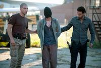
Cabe pensar que esta historia aún dará más de sí y que el personaje de Randall seguirá, de momento, en la serie. No tiene mucho sentido molestarse en practicar una cirujía de emergencia en pleno ataque de los caminantes para después abandonar al chico a su suerte, con una pierna amputada y sin ninguna posibilidad de vivir. La decisión sobre su destino final servirá para que Rick y Shane se enfrenten definitivamente por el liderazgo del grupo, asumiendo cada uno el rol que realmente le corresponde.
Personajes a la deriva
Si la presencia de ciertos personajes ha ido reduciéndose desde que retomamos la segunda temporada, en el último capítulo, 18 Miles Out, la acción se centra en los pesos pesados de la serie (Rick y Shane), en detrimento del resto del reparto, exceptuando la pelea de gatas que se libra entre Lori y Andrea. Con su ausencia reiterada, algunos personajes corren el riesgo de convertirse en prescindibles para los espectadores, que ni siquiera los echan de menos. Tal vez su retirada temporal se deba a que había algo mucho más importante que contar: el liderazgo del grupo estaba en juego y del resultado de esa lucha dependerá el destino del grupo.
Parece que el futuro de la serie pasa casi obligatoriamente por hacer sacrificios personales. Como todos sabemos por los documentales de La 2, que nunca nos perdemos, en la manada de ñúes que huye de un león, los más débiles, los rezagados, son los que tienen todas las papeletas de ser cazados. Estamos asistiendo al retiro (voluntario o involuntario) de personajes como Daryl, que no ha acabado de digerir la muerte de Sophia o Dale, que se aparta del grupo para no estar cerca de Shane. ¿Es esto indicador de algo? No hay más que googlear sobre el tema para descubrir ciertos rumores, confirmados por el propio Kirkman.
Vuelve la acción
No han sido pocas las voces que acusaban a la serie de acomodarse demasiado, bajando el ritmo que marcó un primer capítulo trepidante e incumpliendo así las expectativas generadas. Tampoco ha faltado quien ha defendido ese carácter personal de una serie que, nos guste o no, es una de esas “de personajes”. De hecho, si revisamos el origen de esta zombimanía, en las películas de culto del género las relaciones entre los vivos cobraban más significancia que su enfrentamiento con los muertos: al fin y al cabo todo esto va de la naturaleza humana, la que revela en una situación extrema.
Sin embargo, en estos tres capítulos hemos asistido al esperado regreso de la intriga, del aliento contenido, de las escenas de lucha más inverosímiles pero también más emocionantes. Nadie olvida que ese es el contexto que da razón de ser a la serie; tampoco lo hacen sus responsables, que se saben en deuda con un público sediento de escenas impactantes. Desde luego, seguimos teniendo nuestra dosis de asquerosidad, aunque parece que a ciertas imágenes nos vamos acostumbrando. ¿Seguirá ‘The Walking Dead’ por esta línea? ¿El ritmo irá in crescendo hasta la apoteosis final? No sé si llegará al sobresaliente, pero desde luego, progresa adecuadamente.
En ¡Vaya Tele! | ‘The Walking dead’, las cinco escenas más impactantes de la segunda temporada
Wed, 29 Feb 2012 06:00:00 GMT
Estrellas invitadas (CXXVI)
Estrellas invitadas (CXXVI)
En el mundo de Internet hay cada día nuevos blogs, y en el mundo de los blogs, hay muchos dedicados al mundo de la televisión, de las series, los personajes, las noticias relacionadas con todos ellos… Como hacemos cada semana, nuestro ‘Estrellas Invitadas’ está dedicado a lo que “se cuece” en las mentes pensantes de los que consumen televisión de manera apasionada. A continuación, la selección de la semana.
‘Smash’ está siendo uno de los estrenos de la temporada y, como consecuencia de esto, es de las series que más está dando que hablar últimamente. Hablemos en serie hace un elogio de la misma y aprovecha para desgranar las claves de lo que considera debe ser y tener un buen capítulo piloto.
¿Cuántas veces esperabais con ansia el estreno de una nueva serie y, por fin, tras poder verla, no os podéis haber sentido más decepcionados? Spoiler Alert! Reflexiona sobre el hype y sus consecuencias, en muchas ocasiones negativas, como juzgar a una serie por las expectativas que teníamos sobre ella y no por lo que es en sí misma.
En Chica de la Tele, nos hablan de una experiencia personal (y un tanto descorazonadora) cuya protagonista es la aplicación interactiva que ha lanzado Antena 3 para iPhone y que promete cambiar la manera de visionar los contenidos televisivos. Si queréis saber cuáles son los problemas técnicos que encontró la autora del artículo y sus sensaciones, no dudéis en leerlo.
Estamos a principios de año, como quien dice, y todavía podemos encontrarnos con artículos relacionados con contenidos del 2011. En Seriesblog.es, han confeccionado un post de los que, malévolamente hablando, más podemos disfrutar. Los peores estrenos del 2011 dan para muchos comentarios y polémicas. Y vosotros, ¿estáis de acuerdo con los elegidos?
En Bloguionistas podemos encontrar reflexiones sobre el mundo del guion (y, por tanto, del audiovisual) de la mano de profesionales del sector, que comparten con sus lectores su amplia experiencia en este proceloso universo. En el artículo de Jaime Olivares, tenemos una reflexión sobre el alma de las series. Es todo por esta semana, ya sabéis que ésta es una sección en la que nos encanta que participéis, y que podéis poneros en contacto con nosotros a través de nuestro formulario para recomendarnos blogs y artículos. ¡Hasta dentro de siete días! En ¡Vaya Tele! | Estellas invitadas

En el mundo de Internet hay cada día nuevos blogs, y en el mundo de los blogs, hay muchos dedicados al mundo de la televisión, de las series, los personajes, las noticias relacionadas con todos ellos… Como hacemos cada semana, nuestro ‘Estrellas Invitadas’ está dedicado a lo que “se cuece” en las mentes pensantes de los que consumen televisión de manera apasionada. A continuación, la selección de la semana.
- ‘Smash’ está siendo uno de los estrenos de la temporada y, como consecuencia de esto, es de las series que más está dando que hablar últimamente. Hablemos en serie hace un elogio de la misma y aprovecha para desgranar las claves de lo que considera debe ser y tener un buen capítulo piloto.
- ¿Cuántas veces esperabais con ansia el estreno de una nueva serie y, por fin, tras poder verla, no os podéis haber sentido más decepcionados? Spoiler Alert! Reflexiona sobre el hype y sus consecuencias, en muchas ocasiones negativas, como juzgar a una serie por las expectativas que teníamos sobre ella y no por lo que es en sí misma.
- En Chica de la Tele, nos hablan de una experiencia personal (y un tanto descorazonadora) cuya protagonista es la aplicación interactiva que ha lanzado Antena 3 para iPhone y que promete cambiar la manera de visionar los contenidos televisivos. Si queréis saber cuáles son los problemas técnicos que encontró la autora del artículo y sus sensaciones, no dudéis en leerlo.
- Estamos a principios de año, como quien dice, y todavía podemos encontrarnos con artículos relacionados con contenidos del 2011. En Seriesblog.es, han confeccionado un post de los que, malévolamente hablando, más podemos disfrutar. Los peores estrenos del 2011 dan para muchos comentarios y polémicas. Y vosotros, ¿estáis de acuerdo con los elegidos?
- En Bloguionistas podemos encontrar reflexiones sobre el mundo del guion (y, por tanto, del audiovisual) de la mano de profesionales del sector, que comparten con sus lectores su amplia experiencia en este proceloso universo. En el artículo de Jaime Olivares, tenemos una reflexión sobre el alma de las series.
Es todo por esta semana, ya sabéis que ésta es una sección en la que nos encanta que participéis, y que podéis poneros en contacto con nosotros a través de nuestro formulario para recomendarnos blogs y artículos. ¡Hasta dentro de siete días!
En ¡Vaya Tele! | Estellas invitadas
Tue, 28 Feb 2012 17:00:00 GMT
Pilotos 2012: Las series que prepara la cadena FOX
Pilotos 2012: Las series que prepara la cadena FOX
Seguimos dando cuenta de los pilotos que tienen en cartera las networks americanas. Proyectos de series que pueden recibir luz verde en los próximos meses y que podríamos ver en la temporada 2012/2013. En esta ocasión, y tras saber lo que tiene CBS en cartera, toca ver lo que prepara FOX para la próxima temporada televisiva. FOX tradicionalmente es una de las cadenas que menos pilotos encarga, y por consiguiente menos series estrena, por lo menos comparado con el resto de las Big Four (ABC, CBS, NCB y FOX). El hecho de solo tener dos franjas en primetime y de ahí sacar hueco tanto para los productos de ficción como los de no ficción hace que sean cautos a la hora de encargar estos pilotos. FOX tiene una parrilla bastante compacta y cualquier movimiento se mide al milímetro (solo hay que ver los movimientos que está haciendo con ‘Touch’/‘Alcatraz’/‘House’ los lunes). Así pues veamos qué tiene FOX en cartera: Los pilotos de FOX: Dramas
‘The Asset‘: Drama sobre un agente de la CIA cuya tapadera es ser un reportero gráfico de renombre. Está creado por Josh Friedman, guionista de ‘Terminator: The Sarah Connor Chronicles‘ ‘Guilty‘: Nos encontramos con un brillante abogado defensor de moral cuestionable quien, después de haber sido falsamente condenado por fraude y haberse quedado sin licencia, comienza a resolver los casos de los que fue alejado mientras prepara su venganza contra los que conspiraron contra él. Ojo, porque detrás de este piloto se encuentran Greg Berlanti, Marc Guggenheim (el equipo de ‘Green Lantern‘, ambos con experiencia en televisión) y McG (’Nikita‘).
Proyecto sin titulo de Berman y Wright: Una médico que trabaja para la mafia.
Proyecto sin título de Karyn Usher: Una chica huérfana de 17 años, hija de un agente de la CIA es reclutada para operaciones encubiertas. Detrás de este piloto están Brett Ratner y Karyn Usher quienes trabajaran juntos en ‘Prison Break‘.
Proyecto sin título de Kevin Williamson: Drama sobre un asesino diabólico que usa la tecnología para congregar un culto de asesinos en serie y un agente del FBI que se encuentra en medio. A Williamson se le debe de ‘Scream 2’ en adelante, ‘The Vampire Diaries‘ y ‘The Secret Circle’. La verdad es que en un año en el que hay, mínimo, dos dramas muy en la cuerda floja (’Terra Nova‘ y ‘Fringe‘) y una a punto de finalizar (‘House’), que solo tengan cinco pilotos en cartera me parece algo arriesgado, aunque siempre se pueda tirar de descartes de otros años. Dicho lo cual, el proyecto de Berman parece un buen sustituto para ‘House‘, aunque solo sea por mantener algo con médicos; los pilotos que más me atraen son ‘The Asset’ y el proyecto de Kevin Williamson tiene bastante fuerza (aunque solo sea por nombre). Los pilotos de FOX: Comedias
‘Ben Fox is my manny‘: Una madre soltera cuyo hermano sin rumbo aterriza en su casa para cuidar de su hija. ‘El jefe‘: Un treintaañero de clase media que es echado de casa de sus padres y se va a vivir con la familia de la mujer de la limpieza. La serie está creada por David Guarascio y Moses Port, que tienen en su haber series como ‘Dame un respiro’ y ‘Aliens en América’, aunque para mí serán los que pretendieron montar la versión americana de ‘The IT Crowd’. ‘The Goodwin Games‘: Tres hermanos que deberán plegarse a los característicos términos de las voluntades de su padre para heredar su fortuna. Está siendo desarrollada por los creadores de ‘Cómo conocí a vuestra madre‘, Carter Bays y Craig Thomas, a los que se les une Chris Harris, productor de dicha serie. ‘Let it go‘: Un matrimonio, el mejor amigo de él y la hermana de ella mientras navegan y manipulan las reglas tácitas de la sociedad. La serie está creada por DJ Nash quien sigue insistiendo en hacer comedia tras infructuosos intentos (el último ‘Traffic Light’) ‘Like Father…‘: Comedia que se centra en la relación padre e hijo. Creada por Bill Lawrence, creador de ‘Scrubs’ y ‘Cougar Town‘. ‘Little Brother‘: Un hombre descubre que tiene un medio hermano que además es ex-convicto. La serie está protagonizada por John Stamos. ‘Living Loaded‘: comedia sobre un bloguer jueguista que cambia sus hábitos cuando se convierte en presentador de un programa de radio. Basado en el libro del columnista/humorista Dan Dunn. ‘Must Hire‘: Un joven ejecutivo que contrata a su padre solo para descubrir que es el bufón de la oficina. ‘Prodigy/Bully‘: Un chico que es un genio y usa su maña y su cerebro para conseguir lo que quiere. Uno de los cocreadores es John Wells, que ha participado en multitud de dramas (y dramedias) en calidad de productor ejecutivo, destacando ‘Urgencias‘ y ‘Shameless‘. ‘Rebounding‘: Un hombre es ayudado por los amigos de su equipo de baloncesto a superar la muerte de su prometida. Steve Levitan, creador de ‘Modern Family‘, participa como productor ejecutivo.
Proyecto sin título de Mindy Kaling: Comedia sobre una jóven médico “a lo Bridget Jones” mientras lidia con su vida laboral y personal. La serie es proyecto de Mindy Kaling, Kelly en ‘The Office‘. Como destacar que todas estas comedias son single-camera. Ya dijo Kyra que el tema de las comedias siempre es difícil y en FOX, donde actualmente solo tienen una hora dedicada a sitcoms, más todavía. La única que me llama algo la atención es ‘The Goodwin Games’ y sólo por quien está detrás del proyecto. Quizás otras que puedan salir por temática es ‘Living Loaded’ y ‘Prodigy/Bully’. Pero con FOX nunca se sabe, lo mismo tienen intención de aumentar las horas de comedia y vemos alguna más realizada. Vía | Futon Critic En ¡Vaya Tele! | Pilotos 2012: Todas las cadenas
Seguimos dando cuenta de los pilotos que tienen en cartera las networks americanas. Proyectos de series que pueden recibir luz verde en los próximos meses y que podríamos ver en la temporada 2012/2013. En esta ocasión, y tras saber lo que tiene CBS en cartera, toca ver lo que prepara FOX para la próxima temporada televisiva.
FOX tradicionalmente es una de las cadenas que menos pilotos encarga, y por consiguiente menos series estrena, por lo menos comparado con el resto de las Big Four (ABC, CBS, NCB y FOX). El hecho de solo tener dos franjas en primetime y de ahí sacar hueco tanto para los productos de ficción como los de no ficción hace que sean cautos a la hora de encargar estos pilotos. FOX tiene una parrilla bastante compacta y cualquier movimiento se mide al milímetro (solo hay que ver los movimientos que está haciendo con ‘Touch’/‘Alcatraz’/‘House’ los lunes). Así pues veamos qué tiene FOX en cartera:
Los pilotos de FOX: Dramas
- ‘The Asset‘: Drama sobre un agente de la CIA cuya tapadera es ser un reportero gráfico de renombre. Está creado por Josh Friedman, guionista de ‘Terminator: The Sarah Connor Chronicles‘
- ‘Guilty‘: Nos encontramos con un brillante abogado defensor de moral cuestionable quien, después de haber sido falsamente condenado por fraude y haberse quedado sin licencia, comienza a resolver los casos de los que fue alejado mientras prepara su venganza contra los que conspiraron contra él. Ojo, porque detrás de este piloto se encuentran Greg Berlanti, Marc Guggenheim (el equipo de ‘Green Lantern‘, ambos con experiencia en televisión) y McG (’Nikita‘).
-
Proyecto sin titulo de Berman y Wright: Una médico que trabaja para la mafia.
-
Proyecto sin título de Karyn Usher: Una chica huérfana de 17 años, hija de un agente de la CIA es reclutada para operaciones encubiertas. Detrás de este piloto están Brett Ratner y Karyn Usher quienes trabajaran juntos en ‘Prison Break‘.
-
Proyecto sin título de Kevin Williamson: Drama sobre un asesino diabólico que usa la tecnología para congregar un culto de asesinos en serie y un agente del FBI que se encuentra en medio. A Williamson se le debe de ‘Scream 2’ en adelante, ‘The Vampire Diaries‘ y ‘The Secret Circle’.
La verdad es que en un año en el que hay, mínimo, dos dramas muy en la cuerda floja (’Terra Nova‘ y ‘Fringe‘) y una a punto de finalizar (‘House’), que solo tengan cinco pilotos en cartera me parece algo arriesgado, aunque siempre se pueda tirar de descartes de otros años. Dicho lo cual, el proyecto de Berman parece un buen sustituto para ‘House‘, aunque solo sea por mantener algo con médicos; los pilotos que más me atraen son ‘The Asset’ y el proyecto de Kevin Williamson tiene bastante fuerza (aunque solo sea por nombre).
Los pilotos de FOX: Comedias
- ‘Ben Fox is my manny‘: Una madre soltera cuyo hermano sin rumbo aterriza en su casa para cuidar de su hija.
- ‘El jefe‘: Un treintaañero de clase media que es echado de casa de sus padres y se va a vivir con la familia de la mujer de la limpieza. La serie está creada por David Guarascio y Moses Port, que tienen en su haber series como ‘Dame un respiro’ y ‘Aliens en América’, aunque para mí serán los que pretendieron montar la versión americana de ‘The IT Crowd’.
- ‘The Goodwin Games‘: Tres hermanos que deberán plegarse a los característicos términos de las voluntades de su padre para heredar su fortuna. Está siendo desarrollada por los creadores de ‘Cómo conocí a vuestra madre‘, Carter Bays y Craig Thomas, a los que se les une Chris Harris, productor de dicha serie.
- ‘Let it go‘: Un matrimonio, el mejor amigo de él y la hermana de ella mientras navegan y manipulan las reglas tácitas de la sociedad. La serie está creada por DJ Nash quien sigue insistiendo en hacer comedia tras infructuosos intentos (el último ‘Traffic Light’)
- ‘Like Father…‘: Comedia que se centra en la relación padre e hijo. Creada por Bill Lawrence, creador de ‘Scrubs’ y ‘Cougar Town‘.
- ‘Little Brother‘: Un hombre descubre que tiene un medio hermano que además es ex-convicto. La serie está protagonizada por John Stamos.
- ‘Living Loaded‘: comedia sobre un bloguer jueguista que cambia sus hábitos cuando se convierte en presentador de un programa de radio. Basado en el libro del columnista/humorista Dan Dunn.
- ‘Must Hire‘: Un joven ejecutivo que contrata a su padre solo para descubrir que es el bufón de la oficina.
- ‘Prodigy/Bully‘: Un chico que es un genio y usa su maña y su cerebro para conseguir lo que quiere. Uno de los cocreadores es John Wells, que ha participado en multitud de dramas (y dramedias) en calidad de productor ejecutivo, destacando ‘Urgencias‘ y ‘Shameless‘.
- ‘Rebounding‘: Un hombre es ayudado por los amigos de su equipo de baloncesto a superar la muerte de su prometida. Steve Levitan, creador de ‘Modern Family‘, participa como productor ejecutivo.
-
Proyecto sin título de Mindy Kaling: Comedia sobre una jóven médico “a lo Bridget Jones” mientras lidia con su vida laboral y personal. La serie es proyecto de Mindy Kaling, Kelly en ‘The Office‘.
Como destacar que todas estas comedias son single-camera. Ya dijo Kyra que el tema de las comedias siempre es difícil y en FOX, donde actualmente solo tienen una hora dedicada a sitcoms, más todavía. La única que me llama algo la atención es ‘The Goodwin Games’ y sólo por quien está detrás del proyecto. Quizás otras que puedan salir por temática es ‘Living Loaded’ y ‘Prodigy/Bully’. Pero con FOX nunca se sabe, lo mismo tienen intención de aumentar las horas de comedia y vemos alguna más realizada.
Vía | Futon Critic
En ¡Vaya Tele! | Pilotos 2012: Todas las cadenas
Tue, 28 Feb 2012 13:30:00 GMT
"Si pudiese hacer la serie que me apeteciese llevaría a cabo una de ciencia ficción realista", entrevista a Ramón Campos
"Si pudiese hacer la serie que me apeteciese llevaría a cabo una de ciencia ficción realista", entrevista a Ramón Campos
Ramón Campos es guionista y uno de los productores de Bambú Producciones. Tras llevar a cabo como creador para Grupo Ganga la serie ‘Patricia Marcos, Desparecida’ (una de las mejores series hechas en España, en mi opinión) se decidió a fundar junto a Teresa Fernández-Valdés la productora en la que hoy trabajan. Esto sucedió en 2008, y cuatro años después Bambú puede presumir de ser una de las productoras más importantes de nuestro país. Éxitos como ‘Gran Reserva’, ‘Hispania’ o ‘Gran Hotel’ la avalan, y también el fracaso de ‘Guante Blanco’. Cuando tienes la oportunidad de entrevistar a alguien que representa a una de las productoras de más éxito del panorama televisivo, no son pocas las preguntas que te surgen. Queremos saber qué va a pasar con las series de la productora, cuándo las veremos y qué nos traen, pero también nos importa conocer los nuevos proyectos que tienen entre manos o interesarnos por cómo afectarán los cambios en RTVE a sus ficciones. De todo esto hemos hablado con Ramón Campos. Siendo una productora relativamente joven, Bambú Producciones se ha posicionado entre las más importantes del panorama televisivo español. ¿Cómo lo habéis conseguido? Desde que comenzamos con Bambú Producciones (realizando un service para la producción de la serie de TVE ‘Patricia Marcos, Desaparecida’) pensamos que si queríamos hacernos un lugar en la industria debía ser encontrando una identidad que no tuviesen las otras productoras. Nosotros sabíamos que no podíamos competir con las grandes productoras de televisión de este país en un terreno que ya tenían ganado, el de los dramedias de corte familiar. Por eso decidimos que nuestro objetivo debía ser encontrar un nicho de mercado, una línea editorial única, en la que hacernos fuertes. Tanto Teresa Fernández-Valdés (mi socia), Carlos Sedes (director), Gema R. Neira (Directora de desarrollo), Julia Juanatey (Montadora) como yo habíamos participado en la producción de una serie de TVG titulada ‘A vida por Diante’, un drama descarnado sobre cinco mujeres que tenían que sobrevivir a la muerte de sus maridos en un naufragio de un pesquero. Tras ‘Desaparecida’ nos reafirmamos en que ese era el lugar en el que nos sentíamos más cómodos y en el que podíamos encontrar nuestro lugar en la industria. El resto tiene que ver con una mezcla de trabajo, de fortuna y de recibir la confianza de personas como David Martínez (exdirector de ficción de TVE y T5) que siempre creyó que podíamos llegar hasta aquí. A excepción de ‘Guante Blanco’, vuestra primera serie, todo han sido éxitos. ¿Se os ha olvidado lo que es lanzar una serie y que no triunfe? Curiosamente todos los que formamos Bambú Producciones estamos convencidos de que lo mejor que nos pudo suceder es que ‘Guante Blanco’ fuese un fracaso. Eso nos puso los pies en el suelo. Durante semanas analizamos el por qué del fracaso de la serie. Hicimos, lo que yo llamo, “la autopsia del cadáver” y sacamos conclusiones que aun a día de hoy llevamos a la práctica. Cuando arrancamos un nuevo proyecto, como es el caso ahora de ‘Imperium’, nos recordamos unos a otros los errores cometidos en ‘Guante Blanco’ para intentar no cometerlos de nuevo. Lo más importante es disfrutar de los éxitos sin olvidar los fracasos. ‘Gran Hotel’ fue la revelación del otoño pasado pero cerró su temporada con sólo nueve episodios, ¿a qué se debió esto? Ya desde el principio sabíamos que la serie, por una cuestión de programación, iba a tener menos capítulos de los 13 habituales porque si no entraríamos en la navidad que es una época en la que, como todos sabemos, las cadenas detienen su programación habitual. Por eso el mapa de tramas desde muy pronto ya estuvo adaptado a los 9 capítulos que la gente pudo ver en antena. ‘Gran Hotel’ es en su conjunto nuestra serie más redonda. La segunda temporada ya está en marcha. ¿Cómo están siendo las grabaciones y cuándo está prevista la emisión de la temporada? Pues no sabemos exactamente cuándo se emitirá. Esa siempre es una decisión de la cadena en la que nosotros no entramos. Las grabaciones comenzaron hace unos meses y se extenderán hasta agosto-septiembre. Ahora estamos grabando los capítulos 14 y 15 y la verdad es que estoy entusiasmado con lo que estoy viendo. Los primeros capítulos escritos por el equipo de guión comandado por Gema R. Neira y Eligio R. Montero y que están dirigidos por Silvia Quer son espectaculares. La forma en que las nuevas tramas se han introducido, los giros, los nuevos personajes, el ritmo, la fotografía de Unax Mendía… Sentarse a ver la serie, aun cuando sabes lo que va a suceder, es un auténtico placer. Además esta temporada se unen al equipo directores como Max Lemcke (Cinco metros cuadrados) o Jorge Torregrosa (La señora). En el último episodio emitido se cerraron algunos interrogantes y se lanzaron otras preguntas, ¿por dónde tirarán los siguientes episodios? ¿habrá nuevos misterios alrededor del Gran Hotel? Sin duda. Una de las cuestiones que hemos aprendido a lo largo de los años es que si algo funciona no debes cambiarlo. Esto es algo que mucha gente en nuestra industria, sobre todo algunos intérpretes, no comprende. Las series de televisión no son películas. No hay que realizar grandes arcos de transformación de los personajes sino que debe ser una transformación de pequeños matices para que los espectadores sigan reconociendo semana a semana, temporada a temporada, a los personajes de los que se enamoraron. Si la gente se ha enganchado a la pareja de investigadores que conforman Julio y Alicia sería absurdo que decidiésemos que no investigasen. Esta temporada uno de los grandes misterios será encontrar al responsable del atentado sufrido por Andrés. A partir de ahí nuestros protagonistas descubrirán cuestiones de sus vidas que en algún caso habrían preferido que se mantuviesen ocultas para siempre. ¿Qué es, para ti, lo mejor de ‘Gran Hotel’? Todos los que la hemos hecho estamos convencidos que ‘Gran Hotel’ es en su conjunto nuestra serie más redonda. En guión la mezcla de melodrama con misterio que ya habíamos probado en ‘Gran Reserva’ funcionó como esperábamos. En la ambientación de Carlos Dorremochea logramos transmitir al espectador esa sensación de introducirse en un cuadro de Soroya como pretendíamos. En el casting de Sara Bilbatúa logramos esa mezcla de nuevos talentos, jóvenes con punch comercial y grandes clásicos que todos aspiramos a tener en nuestras series. En la fotografía el trabajo de Jacobo Martínez fue espectacular ya que tuvo que hacer que una serie en blancos y negros, casi sin color, resplandeciese como sus anteriores trabajos (Jacobo Martínez es el responsable de la dirección de fotografía de ‘Desaparecida’, ‘Guante Blanco’, ‘Gran Reserva’, ‘Hispania’, ‘Gran Hotel’, ‘Imperium‘…), el vestuario de Helena Sanchís, la música de Lucio Godoy, la peluquería de Mara Collazo… una tras otra las piezas fueron encajando como nunca lo habían hecho. Estamos muy orgullosos de poder decir que la serie es un auténtico trabajo de equipo siempre comandado por los directores Carlos Sedes (‘Gran Reserva’), Silvia Quer (‘23F’) y Jorge Sánchez Cabezudo (‘Crematorio’). De ‘Hispania’ sabemos que sólo faltan por emitirse tres episodios para cerrar la serie. ¿Qué podemos esperar de esa recta final? Pues sí. Sólo quedan tres episodios que cerrarán las tramas planteadas a lo largo de las dos primeras temporadas de la serie. En este final se contará la muerte del héroe y el destino de los hispanos que lucharon a su lado. Habrá batallas, amor, intrigas… y creemos que dejará satisfechos a todos los espectadores que vieron aquel 20 de octubre de 2010 como nacía la leyenda de Viriato. Nos gusta definir ‘Imperium’ como una serie de mafia en Roma. También se ha comentado que tras el fin de ‘Hispania’ el personaje de Galba tendrá continuidad en otra serie, ‘Imperium’. ¿Qué nos puedes contar de ella? Dentro de unas semanas comenzaremos la grabación del spin-off de ‘Hispania’ que llevará por título ‘Imperium’. Es una serie que se basa en la familia de Galba, en las intrigas de estos en Roma y en sus enfrentamientos con otros poderosos senadores como el que interpreta Pepe Sancho. Nos gusta definirla como una serie de mafia en Roma. Después de ‘Hispania’ tanto nosotros como Antena 3 sabíamos que si queríamos sorprender a los espectadores teníamos que dar un paso más hacia arriba. Por eso una de las grandes decisiones de la nueva serie ha sido la de ir a grabar los exteriores a Italia, a los estudios Cinecittá, en los escenarios donde se grabó entre otras la multipremiada serie ‘Roma’ de HBO. Hablemos de ‘Gran Reserva’. Se supone que volverá con una tercera temporada, ¿en qué fase de producción se encuentran esos nuevos capítulos? ‘Gran Reserva’ es nuestra niña bonita. En ella pusimos en práctica todo lo aprendido tras ‘Guante Blanco’. Como bien dices estamos grabando ahora la tercera temporada que se terminará en un par de meses. En estos nuevos capítulos se incorporan a las intrigas de los Cortázar y los Reverte actores como Unax Ugalde, Ursula Corberó, Manuel Galiana… y la verdad es que tras ver los primeros 9 capítulos de esta nueva tanda sólo puedo decir que, siendo un poco tópico, es una serie que mejora con los años como el buen vino. Según se ha comentado, TVE podría prescindir de algunas de sus series hasta 2013 como medida de ahorro, ¿afectará a ‘Gran Reserva’? ¿se sabe cuándo se emitirán los nuevos episodios aproximadamente? Pues no tenemos notificación oficial de la fecha de estreno pero tampoco estamos preocupados ya que el mes natural para comenzar las emisiones de Gran Reserva todos los años es el mes de Marzo. En lo referido a lo que está sucediendo en TVE tengo una visión muy optimista y estoy convencido de que se terminará resolviendo. Sería la primera vez que una industria que funciona, que llega a la gente, se va a pique. No sería lógico que el estado apoye y ayude a películas de cine que no consiguen llegar al público y de la espalda a series como ‘Águila Roja’ o ‘Cuéntame’ que reunen cada semana a 5 y 6 millones de espectadores. Me parece que se deben buscar, y sé que se está haciendo, fórmulas para que TVE pueda seguir ofreciendo al público los productos que demandan. En lo referido a lo que está sucediendo en TVE tengo una visión muy optimista. ¿Hacia dónde irán las vidas de los Reverte y los Cortázar ahora? Al final de la anterior temporada Vicente fue expulsado de su casa por su familia que se puso del lado de Rosalía, su exmujer. En estos nuevos capítulos el patriarca tendrá que recuperar su lugar en las bodegas y entre sus hijos. ‘Gran Reserva’, al igual que casi todas nuestras series, reflexiona sobre la familia. Las discusiones de los Cortázar, de los Reverte, los enfrentamientos, amenazas… no dejan de ser una multiplicación de lo que sucede en cualquier familia. Creemos que por eso llega al público. Esta temporada intentaremos seguir por esa misma línea. Si Televisión Española no diese continuidad a la serie, ¿podría continuar de alguna manera en otro canal? Todas las series de TVE tienen una claúsula en su contrato por la cual si tras la emisión de un determinado número de capítulos no se recibe notificación de la renovación la serie puede ser ofrecida a otros canales previo pago de una cantidad de dinero. Llevasteis a la pequeña pantalla la adaptación de ‘Marco’ con éxito. ¿Qué otra historia conocida te gustaría adaptar en un futuro? Estamos trabajando en la adaptación de la novela ‘Firmin’ de Sam Savage. Es una historia preciosa que cuenta la historia de amistad entre una rata que vive en lo alto de una librería, un librero y un escritor fracasado. También estamos buscando la que queremos sea la primera película del director Carlos Sedes y para ello estamos leyendo novelas que nos están haciendo llegar las editoriales. Te hemos leído comentar por Twitter que estáis creando alguna nueva serie ¿se puede saber algo de los nuevos proyectos que tenéis entre manos? Sí. Estamos trabajando en una nueva serie para la próxima temporada aunque como entenderéis no podemos contar todavía nada. La serie es un proyecto que nace del acuerdo que mantenemos con Antena 3 pero sobre todo del buen entendimiento que tenemos con el equipo de la cadena desde su director Javier Bardají pasando por el director de contenidos Carlos Fernández y la directora de ficción Sonia Martínez. Es una maravilla trabajar con gente que apoya las nuevas iniciativas y disfruta arriesgando con cada nueva serie. Cómo si no se va a explicar que cuando fuimos en nuestra primera visita allí decidiesen elegir de entre todas las series que llevábamos una de romanos. También estamos desarrollando un proyecto de serie que nos gustaría plantear como coproducción internacional pero que por eso mismo va un poco más lento de lo habitual. Si no tuvieses que aplicar la lógica del mercado (audiencias, exigencias de cadena, etc.) ¿qué tipo de serie te gustaría crear? Si pudiese hacer la serie que me apeteciese la verdad es que me gustaría llevar a cabo una de ciencia ficción realista. Es un proyecto en el que llevamos pensando hace mucho tiempo y del que tenemos un desarrollo con el capítulo piloto escrito pero que sabemos que no es viable a día de hoy en una televisión en abierto en nuestro país. Lo que intentamos es buscar fórmulas para hacer trepidantes los capítulos de 70 minutos. ¿Crees que la duración de los capítulos de las series en España es excesiva? ¿es un hándicap a la hora de escribir o plantear las tramas? Creo que es una característica de nuestra ficción que hace que debamos plantearnos los arcos dramáticos de una forma distinta. La cuestión es que es algo con lo que llevamos conviviendo tanto tiempo que ya nos hemos acostumbrado y lo que intentamos nosotros, más que quejarnos de lo difícil, malo o complicado que sea, es buscar fórmulas para hacer trepidantes esos capítulos de 70 minutos. La serie ‘Sherlock’ tiene capítulos de 100 minutos y consiguen sostenerla. ¿Por qué nosotros no podemos conseguirlo?. Una de las cosas que más orgullosos nos hace sentir es cuando la gente tras ver un capítulo de 75 minutos dice en twitter que se le ha hecho corto. Otra cuestión es la dificultad de vender capítulos de esa duración a otros países. Hasta el momento, Bambú sólo nos ha presentado series dramáticas, ¿habrá algún día una comedia firmada por vuestra productora? Como te decía al principio nuestro planteamiento inicial fue centrarnos en series de corte dramático para hacernos un lugar en el sector. Ahora que creemos que ya nos hemos asentado sí que empezamos a plantearnos otros géneros y la comedia es uno de ellos por lo que no puedo asegurar que algún día no se vea una comedia con el sello de Bambú. Tampoco habéis hecho productos de no ficción, ¿no os planteáis la opción de abrir vuestro campo de trabajo al entretenimiento o al género documental? Yo hice producción ejecutiva de entretenimiento hace años en Galicia y es algo que no descarto. Me gusta la sensación del directo, de la inmediatez del trabajo y la respuesta del público, lo inesperado de no contar con un guión cien por cien cerrado… Me parece que tiene elementos que podrían hacerme disfrutar mucho aunque también soy consciente que tengo mucho que aprender en ese terreno. En el género documental sí que nos hemos estrenado ya hace un tiempo. Primero con un documental titulado ‘American Greyhounds’ y dentro de poco estrenaremos ‘Fraga y Fidel, sin embargo’, un documental sobre la visita de Fidel Castro en 1992 para conocer la vivienda de sus padres en la localidad lucense de Lancara y su encuentro durante dos días con Manuel Fraga. Desde ¡Vaya Tele! agradecemos profundamente a Ramón Campos que haya dedicado su tiempo a responder nuestras preguntas y esperamos ver pronto por televisión nuevos episodios de las grandes series de Bambú Producciones. En ¡Vaya Tele! | Entrevistas

Ramón Campos es guionista y uno de los productores de Bambú Producciones. Tras llevar a cabo como creador para Grupo Ganga la serie ‘Patricia Marcos, Desparecida’ (una de las mejores series hechas en España, en mi opinión) se decidió a fundar junto a Teresa Fernández-Valdés la productora en la que hoy trabajan. Esto sucedió en 2008, y cuatro años después Bambú puede presumir de ser una de las productoras más importantes de nuestro país. Éxitos como ‘Gran Reserva’, ‘Hispania’ o ‘Gran Hotel’ la avalan, y también el fracaso de ‘Guante Blanco’.
Cuando tienes la oportunidad de entrevistar a alguien que representa a una de las productoras de más éxito del panorama televisivo, no son pocas las preguntas que te surgen. Queremos saber qué va a pasar con las series de la productora, cuándo las veremos y qué nos traen, pero también nos importa conocer los nuevos proyectos que tienen entre manos o interesarnos por cómo afectarán los cambios en RTVE a sus ficciones. De todo esto hemos hablado con Ramón Campos.
Siendo una productora relativamente joven, Bambú Producciones se ha posicionado entre las más importantes del panorama televisivo español. ¿Cómo lo habéis conseguido?
Desde que comenzamos con Bambú Producciones (realizando un service para la producción de la serie de TVE ‘Patricia Marcos, Desaparecida’) pensamos que si queríamos hacernos un lugar en la industria debía ser encontrando una identidad que no tuviesen las otras productoras. Nosotros sabíamos que no podíamos competir con las grandes productoras de televisión de este país en un terreno que ya tenían ganado, el de los dramedias de corte familiar. Por eso decidimos que nuestro objetivo debía ser encontrar un nicho de mercado, una línea editorial única, en la que hacernos fuertes. Tanto Teresa Fernández-Valdés (mi socia), Carlos Sedes (director), Gema R. Neira (Directora de desarrollo), Julia Juanatey (Montadora) como yo habíamos participado en la producción de una serie de TVG titulada ‘A vida por Diante’, un drama descarnado sobre cinco mujeres que tenían que sobrevivir a la muerte de sus maridos en un naufragio de un pesquero. Tras ‘Desaparecida’ nos reafirmamos en que ese era el lugar en el que nos sentíamos más cómodos y en el que podíamos encontrar nuestro lugar en la industria. El resto tiene que ver con una mezcla de trabajo, de fortuna y de recibir la confianza de personas como David Martínez (exdirector de ficción de TVE y T5) que siempre creyó que podíamos llegar hasta aquí.
A excepción de ‘Guante Blanco’, vuestra primera serie, todo han sido éxitos. ¿Se os ha olvidado lo que es lanzar una serie y que no triunfe?
Curiosamente todos los que formamos Bambú Producciones estamos convencidos de que lo mejor que nos pudo suceder es que ‘Guante Blanco’ fuese un fracaso. Eso nos puso los pies en el suelo. Durante semanas analizamos el por qué del fracaso de la serie. Hicimos, lo que yo llamo, “la autopsia del cadáver” y sacamos conclusiones que aun a día de hoy llevamos a la práctica. Cuando arrancamos un nuevo proyecto, como es el caso ahora de ‘Imperium’, nos recordamos unos a otros los errores cometidos en ‘Guante Blanco’ para intentar no cometerlos de nuevo. Lo más importante es disfrutar de los éxitos sin olvidar los fracasos.
‘Gran Hotel’ fue la revelación del otoño pasado pero cerró su temporada con sólo nueve episodios, ¿a qué se debió esto?
Ya desde el principio sabíamos que la serie, por una cuestión de programación, iba a tener menos capítulos de los 13 habituales porque si no entraríamos en la navidad que es una época en la que, como todos sabemos, las cadenas detienen su programación habitual. Por eso el mapa de tramas desde muy pronto ya estuvo adaptado a los 9 capítulos que la gente pudo ver en antena.
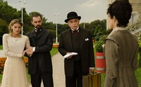
‘Gran Hotel’ es en su conjunto nuestra serie más redonda.
La segunda temporada ya está en marcha. ¿Cómo están siendo las grabaciones y cuándo está prevista la emisión de la temporada?
Pues no sabemos exactamente cuándo se emitirá. Esa siempre es una decisión de la cadena en la que nosotros no entramos. Las grabaciones comenzaron hace unos meses y se extenderán hasta agosto-septiembre. Ahora estamos grabando los capítulos 14 y 15 y la verdad es que estoy entusiasmado con lo que estoy viendo. Los primeros capítulos escritos por el equipo de guión comandado por Gema R. Neira y Eligio R. Montero y que están dirigidos por Silvia Quer son espectaculares. La forma en que las nuevas tramas se han introducido, los giros, los nuevos personajes, el ritmo, la fotografía de Unax Mendía… Sentarse a ver la serie, aun cuando sabes lo que va a suceder, es un auténtico placer. Además esta temporada se unen al equipo directores como Max Lemcke (Cinco metros cuadrados) o Jorge Torregrosa (La señora).
En el último episodio emitido se cerraron algunos interrogantes y se lanzaron otras preguntas, ¿por dónde tirarán los siguientes episodios? ¿habrá nuevos misterios alrededor del Gran Hotel?
Sin duda. Una de las cuestiones que hemos aprendido a lo largo de los años es que si algo funciona no debes cambiarlo. Esto es algo que mucha gente en nuestra industria, sobre todo algunos intérpretes, no comprende. Las series de televisión no son películas. No hay que realizar grandes arcos de transformación de los personajes sino que debe ser una transformación de pequeños matices para que los espectadores sigan reconociendo semana a semana, temporada a temporada, a los personajes de los que se enamoraron. Si la gente se ha enganchado a la pareja de investigadores que conforman Julio y Alicia sería absurdo que decidiésemos que no investigasen. Esta temporada uno de los grandes misterios será encontrar al responsable del atentado sufrido por Andrés. A partir de ahí nuestros protagonistas descubrirán cuestiones de sus vidas que en algún caso habrían preferido que se mantuviesen ocultas para siempre.
¿Qué es, para ti, lo mejor de ‘Gran Hotel’?
Todos los que la hemos hecho estamos convencidos que ‘Gran Hotel’ es en su conjunto nuestra serie más redonda. En guión la mezcla de melodrama con misterio que ya habíamos probado en ‘Gran Reserva’ funcionó como esperábamos. En la ambientación de Carlos Dorremochea logramos transmitir al espectador esa sensación de introducirse en un cuadro de Soroya como pretendíamos. En el casting de Sara Bilbatúa logramos esa mezcla de nuevos talentos, jóvenes con punch comercial y grandes clásicos que todos aspiramos a tener en nuestras series. En la fotografía el trabajo de Jacobo Martínez fue espectacular ya que tuvo que hacer que una serie en blancos y negros, casi sin color, resplandeciese como sus anteriores trabajos (Jacobo Martínez es el responsable de la dirección de fotografía de ‘Desaparecida’, ‘Guante Blanco’, ‘Gran Reserva’, ‘Hispania’, ‘Gran Hotel’, ‘Imperium‘…), el vestuario de Helena Sanchís, la música de Lucio Godoy, la peluquería de Mara Collazo… una tras otra las piezas fueron encajando como nunca lo habían hecho. Estamos muy orgullosos de poder decir que la serie es un auténtico trabajo de equipo siempre comandado por los directores Carlos Sedes (‘Gran Reserva’), Silvia Quer (‘23F’) y Jorge Sánchez Cabezudo (‘Crematorio’).
De ‘Hispania’ sabemos que sólo faltan por emitirse tres episodios para cerrar la serie. ¿Qué podemos esperar de esa recta final?
Pues sí. Sólo quedan tres episodios que cerrarán las tramas planteadas a lo largo de las dos primeras temporadas de la serie. En este final se contará la muerte del héroe y el destino de los hispanos que lucharon a su lado. Habrá batallas, amor, intrigas… y creemos que dejará satisfechos a todos los espectadores que vieron aquel 20 de octubre de 2010 como nacía la leyenda de Viriato.

Nos gusta definir ‘Imperium’ como una serie de mafia en Roma.
También se ha comentado que tras el fin de ‘Hispania’ el personaje de Galba tendrá continuidad en otra serie, ‘Imperium’. ¿Qué nos puedes contar de ella?
Dentro de unas semanas comenzaremos la grabación del spin-off de ‘Hispania’ que llevará por título ‘Imperium’. Es una serie que se basa en la familia de Galba, en las intrigas de estos en Roma y en sus enfrentamientos con otros poderosos senadores como el que interpreta Pepe Sancho. Nos gusta definirla como una serie de mafia en Roma.
Después de ‘Hispania’ tanto nosotros como Antena 3 sabíamos que si queríamos sorprender a los espectadores teníamos que dar un paso más hacia arriba. Por eso una de las grandes decisiones de la nueva serie ha sido la de ir a grabar los exteriores a Italia, a los estudios Cinecittá, en los escenarios donde se grabó entre otras la multipremiada serie ‘Roma’ de HBO.
Hablemos de ‘Gran Reserva’. Se supone que volverá con una tercera temporada, ¿en qué fase de producción se encuentran esos nuevos capítulos?
‘Gran Reserva’ es nuestra niña bonita. En ella pusimos en práctica todo lo aprendido tras ‘Guante Blanco’. Como bien dices estamos grabando ahora la tercera temporada que se terminará en un par de meses. En estos nuevos capítulos se incorporan a las intrigas de los Cortázar y los Reverte actores como Unax Ugalde, Ursula Corberó, Manuel Galiana… y la verdad es que tras ver los primeros 9 capítulos de esta nueva tanda sólo puedo decir que, siendo un poco tópico, es una serie que mejora con los años como el buen vino.
Según se ha comentado, TVE podría prescindir de algunas de sus series hasta 2013 como medida de ahorro, ¿afectará a ‘Gran Reserva’? ¿se sabe cuándo se emitirán los nuevos episodios aproximadamente?
Pues no tenemos notificación oficial de la fecha de estreno pero tampoco estamos preocupados ya que el mes natural para comenzar las emisiones de Gran Reserva todos los años es el mes de Marzo. En lo referido a lo que está sucediendo en TVE tengo una visión muy optimista y estoy convencido de que se terminará resolviendo. Sería la primera vez que una industria que funciona, que llega a la gente, se va a pique. No sería lógico que el estado apoye y ayude a películas de cine que no consiguen llegar al público y de la espalda a series como ‘Águila Roja’ o ‘Cuéntame’ que reunen cada semana a 5 y 6 millones de espectadores. Me parece que se deben buscar, y sé que se está haciendo, fórmulas para que TVE pueda seguir ofreciendo al público los productos que demandan.

En lo referido a lo que está sucediendo en TVE tengo una visión muy optimista.
¿Hacia dónde irán las vidas de los Reverte y los Cortázar ahora?
Al final de la anterior temporada Vicente fue expulsado de su casa por su familia que se puso del lado de Rosalía, su exmujer. En estos nuevos capítulos el patriarca tendrá que recuperar su lugar en las bodegas y entre sus hijos. ‘Gran Reserva’, al igual que casi todas nuestras series, reflexiona sobre la familia. Las discusiones de los Cortázar, de los Reverte, los enfrentamientos, amenazas… no dejan de ser una multiplicación de lo que sucede en cualquier familia. Creemos que por eso llega al público. Esta temporada intentaremos seguir por esa misma línea.
Si Televisión Española no diese continuidad a la serie, ¿podría continuar de alguna manera en otro canal?
Todas las series de TVE tienen una claúsula en su contrato por la cual si tras la emisión de un determinado número de capítulos no se recibe notificación de la renovación la serie puede ser ofrecida a otros canales previo pago de una cantidad de dinero.
Llevasteis a la pequeña pantalla la adaptación de ‘Marco’ con éxito. ¿Qué otra historia conocida te gustaría adaptar en un futuro?
Estamos trabajando en la adaptación de la novela ‘Firmin’ de Sam Savage. Es una historia preciosa que cuenta la historia de amistad entre una rata que vive en lo alto de una librería, un librero y un escritor fracasado. También estamos buscando la que queremos sea la primera película del director Carlos Sedes y para ello estamos leyendo novelas que nos están haciendo llegar las editoriales.
Te hemos leído comentar por Twitter que estáis creando alguna nueva serie ¿se puede saber algo de los nuevos proyectos que tenéis entre manos?
Sí. Estamos trabajando en una nueva serie para la próxima temporada aunque como entenderéis no podemos contar todavía nada. La serie es un proyecto que nace del acuerdo que mantenemos con Antena 3 pero sobre todo del buen entendimiento que tenemos con el equipo de la cadena desde su director Javier Bardají pasando por el director de contenidos Carlos Fernández y la directora de ficción Sonia Martínez. Es una maravilla trabajar con gente que apoya las nuevas iniciativas y disfruta arriesgando con cada nueva serie. Cómo si no se va a explicar que cuando fuimos en nuestra primera visita allí decidiesen elegir de entre todas las series que llevábamos una de romanos.
También estamos desarrollando un proyecto de serie que nos gustaría plantear como coproducción internacional pero que por eso mismo va un poco más lento de lo habitual.
Si no tuvieses que aplicar la lógica del mercado (audiencias, exigencias de cadena, etc.) ¿qué tipo de serie te gustaría crear?
Si pudiese hacer la serie que me apeteciese la verdad es que me gustaría llevar a cabo una de ciencia ficción realista. Es un proyecto en el que llevamos pensando hace mucho tiempo y del que tenemos un desarrollo con el capítulo piloto escrito pero que sabemos que no es viable a día de hoy en una televisión en abierto en nuestro país.

Lo que intentamos es buscar fórmulas para hacer trepidantes los capítulos de 70 minutos.
¿Crees que la duración de los capítulos de las series en España es excesiva? ¿es un hándicap a la hora de escribir o plantear las tramas?
Creo que es una característica de nuestra ficción que hace que debamos plantearnos los arcos dramáticos de una forma distinta. La cuestión es que es algo con lo que llevamos conviviendo tanto tiempo que ya nos hemos acostumbrado y lo que intentamos nosotros, más que quejarnos de lo difícil, malo o complicado que sea, es buscar fórmulas para hacer trepidantes esos capítulos de 70 minutos. La serie ‘Sherlock’ tiene capítulos de 100 minutos y consiguen sostenerla. ¿Por qué nosotros no podemos conseguirlo?. Una de las cosas que más orgullosos nos hace sentir es cuando la gente tras ver un capítulo de 75 minutos dice en twitter que se le ha hecho corto.
Otra cuestión es la dificultad de vender capítulos de esa duración a otros países.
Hasta el momento, Bambú sólo nos ha presentado series dramáticas, ¿habrá algún día una comedia firmada por vuestra productora?
Como te decía al principio nuestro planteamiento inicial fue centrarnos en series de corte dramático para hacernos un lugar en el sector. Ahora que creemos que ya nos hemos asentado sí que empezamos a plantearnos otros géneros y la comedia es uno de ellos por lo que no puedo asegurar que algún día no se vea una comedia con el sello de Bambú.
Tampoco habéis hecho productos de no ficción, ¿no os planteáis la opción de abrir vuestro campo de trabajo al entretenimiento o al género documental?
Yo hice producción ejecutiva de entretenimiento hace años en Galicia y es algo que no descarto. Me gusta la sensación del directo, de la inmediatez del trabajo y la respuesta del público, lo inesperado de no contar con un guión cien por cien cerrado… Me parece que tiene elementos que podrían hacerme disfrutar mucho aunque también soy consciente que tengo mucho que aprender en ese terreno. En el género documental sí que nos hemos estrenado ya hace un tiempo. Primero con un documental titulado ‘American Greyhounds’ y dentro de poco estrenaremos ‘Fraga y Fidel, sin embargo’, un documental sobre la visita de Fidel Castro en 1992 para conocer la vivienda de sus padres en la localidad lucense de Lancara y su encuentro durante dos días con Manuel Fraga.
Desde ¡Vaya Tele! agradecemos profundamente a Ramón Campos que haya dedicado su tiempo a responder nuestras preguntas y esperamos ver pronto por televisión nuevos episodios de las grandes series de Bambú Producciones.
En ¡Vaya Tele! | Entrevistas
Tue, 28 Feb 2012 10:00:00 GMT
Un, dos, tres, responda otra vez: ¿Cuál es la gala de entrega de premios más entretenida que recuerdas?
Un, dos, tres, responda otra vez: ¿Cuál es la gala de entrega de premios más entretenida que recuerdas?
Estamos en una semana que comenzó con la entrega de premios por excelencia: los Oscar de Hollywood. A este tipo de acontecimientos en muchas ocasiones los rodea una cierta fama de ser un tanto pesados. Claro, que son casi una treintena de categorías a las que premiar, candidatos a los que descartar, vestiditos que observar, discursos de agradecimientos a los que atender… y vuelta a empezar. Explicado así, parece que nos encontramos ante una emisión difícil de convertir en un buen espectáculo televisivo, donde a menudo ni los vídeos ni el carisma del presentador son suficientes para hacer pasar el rato. Pero seguro que esto no siempre es así, y como más vale pensar en positivo esta semana os preguntamos por esa gala de entrega de premios que recordáis especialmente como entretenida, divertida, sorprendente… atractiva desde un punto de vista televisivo: ¿Cuál es la gala de entrega de premios más entretenida que recuerdas? La semana pasada os pedimos una primera impresión sobre los estrenos de midseason, donde series como ‘Luck‘, ‘Smash‘, ‘The River‘, ‘Are you there, Chelsea?‘, ‘The Finder‘, ‘Alcatraz‘, ‘The Firm‘, ‘Jane by design‘ y ‘Touch‘ abrían un escenario en el que poder elegir el mejor estreno, y la más votada fue la opción de dharma_4815, que se decantó por explicar cómo y por qué sigue ‘Luck’ y ‘Alcatraz’: De las nuevas solo estoy siguiendo Luck y Alcatraz. Sobre la segunda, como perfectamente explica rrocco, los primeros capítulos más o menos lo esperado pero los siguientes se están estancando de forma muy peligrosa. Yo la sigo porque es una gozada verla en TNT en VOS pero si consiguiese una segunda temporada, que vistas las audiencias no llegará, me lo pensaría dos veces antes de retomarla. Sobre la serie de HBO solo he visto los dos primeros capítulos, tardan una eternidad en salir los subtítulos. Es una serie muy complicada, no sólo por la jerga del hipódromo, las conversaciones y las tramas no son fáciles de seguir. De todas modos tiene ese aire de grandeza que pocas series tienen: un reparto genial, de los mejores que he visto, y una fotografía/montaje/dirección artística (no sé cual sería el termino correcto) sobresaliente. Unas carreras de caballos que te dejan total embobado. Además puede ser la típica serie con gran reconocimiento por parte de la crítica y puede llevarse más de una nominación. Aunque repito, sólo llevo dos capítulos pero sin lugar a dudas es una de las series de midseason que hay que seguir de cerca.
Sin más, os dejamos con la pregunta de la semana abierta para que nos contéis lo de las galas de entrega de premios. En siete días, le damos un repaso a vuestras aportaciones. En ¡Vaya Tele! Respuestas | ¿Cuál es la gala de entrega de premios más entretenida que recuerdas?

Estamos en una semana que comenzó con la entrega de premios por excelencia: los Oscar de Hollywood. A este tipo de acontecimientos en muchas ocasiones los rodea una cierta fama de ser un tanto pesados. Claro, que son casi una treintena de categorías a las que premiar, candidatos a los que descartar, vestiditos que observar, discursos de agradecimientos a los que atender… y vuelta a empezar.
Explicado así, parece que nos encontramos ante una emisión difícil de convertir en un buen espectáculo televisivo, donde a menudo ni los vídeos ni el carisma del presentador son suficientes para hacer pasar el rato. Pero seguro que esto no siempre es así, y como más vale pensar en positivo esta semana os preguntamos por esa gala de entrega de premios que recordáis especialmente como entretenida, divertida, sorprendente… atractiva desde un punto de vista televisivo:
¿Cuál es la gala de entrega de premios más entretenida que recuerdas?
La semana pasada os pedimos una primera impresión sobre los estrenos de midseason, donde series como ‘Luck‘, ‘Smash‘, ‘The River‘, ‘Are you there, Chelsea?‘, ‘The Finder‘, ‘Alcatraz‘, ‘The Firm‘, ‘Jane by design‘ y ‘Touch‘ abrían un escenario en el que poder elegir el mejor estreno, y la más votada fue la opción de dharma_4815, que se decantó por explicar cómo y por qué sigue ‘Luck’ y ‘Alcatraz’:
De las nuevas solo estoy siguiendo Luck y Alcatraz. Sobre la segunda, como perfectamente explica rrocco, los primeros capítulos más o menos lo esperado pero los siguientes se están estancando de forma muy peligrosa. Yo la sigo porque es una gozada verla en TNT en VOS pero si consiguiese una segunda temporada, que vistas las audiencias no llegará, me lo pensaría dos veces antes de retomarla. Sobre la serie de HBO solo he visto los dos primeros capítulos, tardan una eternidad en salir los subtítulos. Es una serie muy complicada, no sólo por la jerga del hipódromo, las conversaciones y las tramas no son fáciles de seguir. De todas modos tiene ese aire de grandeza que pocas series tienen: un reparto genial, de los mejores que he visto, y una fotografía/montaje/dirección artística (no sé cual sería el termino correcto) sobresaliente. Unas carreras de caballos que te dejan total embobado. Además puede ser la típica serie con gran reconocimiento por parte de la crítica y puede llevarse más de una nominación. Aunque repito, sólo llevo dos capítulos pero sin lugar a dudas es una de las series de midseason que hay que seguir de cerca.
Sin más, os dejamos con la pregunta de la semana abierta para que nos contéis lo de las galas de entrega de premios. En siete días, le damos un repaso a vuestras aportaciones.
En ¡Vaya Tele! Respuestas | ¿Cuál es la gala de entrega de premios más entretenida que recuerdas?
Tue, 28 Feb 2012 06:43:36 GMT
La tercera temporada de 'Los Protegidos' se enfrentará contra 'Gran Hermano' los jueves
La tercera temporada de 'Los Protegidos' se enfrentará contra 'Gran Hermano' los jueves
Se acabó la espera. Los seguidores de ‘Los Protegidos’ pueden respirar aliviados porque los nuevos episodios de la serie por fin tiene fecha de estreno. La tercera temporada se verá a partir del jueves 8 de marzo en prime time, aunque este jueves se repondrá el último capítulo de la temporada anterior tras ‘El misterio de Dark Lake’. Así, la ficción protagonizada por Antonio Garrido tendrá que competir con ‘Gran Hermano‘, un duro rival que este año está muy asentado en la noche del jueves, aunque al menos en esta ocasión no tendrán que vérselas (al menos de momento) con las potentes series de La1. Estaba previsto que esta nueva tanda de episodios se estrenase en septiembre, ya que así se promocionó e incluso se realizó un preestreno en cines el 7 de septiembre. Pero Antena 3 postpuso la emisión más y más hasta que nos hemos montado en marzo a la espera de la confirmación de emisión, habiendose finalizado las grabaciones de toda la temporada en el mes de diciembre. La tercera temporada de ‘Los Protegidos’ lleva el sobrenombre de “El Origen” y contará cómo surgieron los poderes de los protagonistas. Tras la salida de la serie de Angie Cepeda, una de las protagonistas, la ficción se revitalizará con incorporaciones como las de las actrices Marta Calvó, Angy Fernández y Marta Torné. La temporada anterior se cerró con una media del 15,1% de share mientras que la primera promedió un 18,1%. ¿Seguirá bajando la serie ahora que compite contra el reality estrella de Telecinco? Vía | TuTele En ¡Vaya Tele! | ¿A qué espera Antena 3 para sacar sus series?
Se acabó la espera. Los seguidores de ‘Los Protegidos’ pueden respirar aliviados porque los nuevos episodios de la serie por fin tiene fecha de estreno. La tercera temporada se verá a partir del jueves 8 de marzo en prime time, aunque este jueves se repondrá el último capítulo de la temporada anterior tras ‘El misterio de Dark Lake’. Así, la ficción protagonizada por Antonio Garrido tendrá que competir con ‘Gran Hermano‘, un duro rival que este año está muy asentado en la noche del jueves, aunque al menos en esta ocasión no tendrán que vérselas (al menos de momento) con las potentes series de La1.
Estaba previsto que esta nueva tanda de episodios se estrenase en septiembre, ya que así se promocionó e incluso se realizó un preestreno en cines el 7 de septiembre. Pero Antena 3 postpuso la emisión más y más hasta que nos hemos montado en marzo a la espera de la confirmación de emisión, habiendose finalizado las grabaciones de toda la temporada en el mes de diciembre.
La tercera temporada de ‘Los Protegidos’ lleva el sobrenombre de “El Origen” y contará cómo surgieron los poderes de los protagonistas. Tras la salida de la serie de Angie Cepeda, una de las protagonistas, la ficción se revitalizará con incorporaciones como las de las actrices Marta Calvó, Angy Fernández y Marta Torné. La temporada anterior se cerró con una media del 15,1% de share mientras que la primera promedió un 18,1%. ¿Seguirá bajando la serie ahora que compite contra el reality estrella de Telecinco?
Vía | TuTele
En ¡Vaya Tele! | ¿A qué espera Antena 3 para sacar sus series?
Mon, 27 Feb 2012 20:00:00 GMT
Los Oscars 2012 se salvan por los pelos, demasiada nostalgia y muy poca emoción
Los Oscars 2012 se salvan por los pelos, demasiada nostalgia y muy poca emoción
La 84ª gala de los Oscar es ya historia, y no tardaremos mucho en olvidarla. No pasará a la historia, ni por ser una de las más entretenidas ni tampoco de las más emocionantes. Aprovechando la temática de las películas más destacables del pasado curso, la gala de este año tuvo un cariz nostálgico muy patente ya desde la decoración del escenario, simulando el estilo de los cines antiguos con su telón y la pantalla gigante al fondo. Eso sí, sin abandonar la sobriedad, la corrección y el aburrimiento que ya son costumbre. Billy Crystal, por novena vez, se puso al frente de la gala como presentador tras el plantón de Eddie Murphy en noviembre, y aunque mejoró con creces lo ofrecido el año pasado por Anne Hathaway y James Franco (algo que tampoco era demasiado difícil), ni de lejos será su actuación más recordada en los Oscars. Carisma no le faltó, y desde luego se notan las tablas en una gala de este estilo, pero salvando el sketch inicial en el que se cuela en las películas del año, un recurso tan manido como efectivo, no tuvo mayor protagonismo en la noche. La escaleta de la noche tampoco ayudó a dar ritmo a la gala. Concentrar al principio los premios técnicos y artísticos te garantiza que la gente se quede hasta el final, guardando la emoción de los premios más gordos, pero también contribuye al cansancio y aburrimiento de la audiencia. Y al que está al otro lado del Atlántico quizá no le pesa tanto por ser las 18:00 de la tarde en su país, pero aquí a las 3:00 de la madrugada dan ganas de pegarle una patada al televisor. Tampoco le encuentro mucho sentido al orden de muchos premios, con el premio a “Mejor actriz de reparto” como primero de los gordos, perdido en una marabunta de premios secundarios para el espectador medio. El punto de salero lo pusieron algunos de los presentadores de premios, con los que pudimos reírnos en alguna ocasión; a veces con ellos, otras de ellos. Este último fue el caso de la dupla formada por Cameron Diaz y Jennifer Lopez, ambas con ceñidos vestidos que dejaban poco a la imaginación, e incluso con riesgo de “pezonazo” por parte de la Lopez. Y completamente gratuito lo de presentar el premio de espaldas; claro, por algún lado había que animar a una audiencia adormecida. Y si destacable fue el pezón de Jennifer Lopez, no lo fue menos la raja de la falda de Angelina Jolie, que no paró de enseñar desde que entró por la alfombra roja y que siguió enseñando al presentar el premio a Mejor Guión. Por cierto, genial nuestro “Dean Dean Dean Dean Dean Dean” de ‘Community’, Jim Rash, imitándola al recoger su premio. ¿Servirá esto de empujón a la serie? Esperemos que sí. ¿Lo mejor de la gala? Pues probablemente la espectacular actuación del Circo Del Sol, un homenaje (de nuevo) a la historia del cine echando la vista atrás, con todos los elementos hipnotizantes que caracterizan a la compañía. Se ganaron un sonoro aplauso y la admiración de todo el mundo, demostrando que para triunfar en una gala de este estilo se necesitan los medios necesarios y mucho mucho ingenio. Lástima que los que cumplen con estas características no sean siempre los que se ponen al frente. El puntito emotivo lo pusieron algunos premiados, como Victoria Octavia Spencer, Meryl Streep y Christopher Plummer. Los tres consiguieron poner al público en pie y emocionaron en sus discursos, más allá del agradecimiento al gato de la prima de la abuela tan extendido. Genialísima Emma Stone en su primera vez presentando un premio, y se agradece la broma de Robert Downey Jr. en la presentación del premio al Mejor Documental, subiendo consigo un equipo de cámaras al escenario como si de su propio reality se tratara. Dio cercanía y simplicidad a una realización y producción excesivamente encorsetadas. En definitiva, una gala mediocre sólo animada por los ácidos comentarios en Twitter (yo ya no sé seguir una retransmisión de este estilo sin esa herramienta) y por los ataques de pánico de Manuela Velasco en Canal+ cada vez que la gala volvía de la publicidad. Aún sigo sin entender cómo “Volvemos a la gala“ no fue Trending Topic en la noche de ayer. Los Oscars 2012 son historia, veremos qué tal se presentan los del 2013. Para información sobre los premiados, mejor que os paséis por Blog de Cine. En ¡Vaya Tele! | La gala de los Oscars decepciona un año más
La 84ª gala de los Oscar es ya historia, y no tardaremos mucho en olvidarla. No pasará a la historia, ni por ser una de las más entretenidas ni tampoco de las más emocionantes. Aprovechando la temática de las películas más destacables del pasado curso, la gala de este año tuvo un cariz nostálgico muy patente ya desde la decoración del escenario, simulando el estilo de los cines antiguos con su telón y la pantalla gigante al fondo. Eso sí, sin abandonar la sobriedad, la corrección y el aburrimiento que ya son costumbre.
Billy Crystal, por novena vez, se puso al frente de la gala como presentador tras el plantón de Eddie Murphy en noviembre, y aunque mejoró con creces lo ofrecido el año pasado por Anne Hathaway y James Franco (algo que tampoco era demasiado difícil), ni de lejos será su actuación más recordada en los Oscars. Carisma no le faltó, y desde luego se notan las tablas en una gala de este estilo, pero salvando el sketch inicial en el que se cuela en las películas del año, un recurso tan manido como efectivo, no tuvo mayor protagonismo en la noche.
La escaleta de la noche tampoco ayudó a dar ritmo a la gala. Concentrar al principio los premios técnicos y artísticos te garantiza que la gente se quede hasta el final, guardando la emoción de los premios más gordos, pero también contribuye al cansancio y aburrimiento de la audiencia. Y al que está al otro lado del Atlántico quizá no le pesa tanto por ser las 18:00 de la tarde en su país, pero aquí a las 3:00 de la madrugada dan ganas de pegarle una patada al televisor. Tampoco le encuentro mucho sentido al orden de muchos premios, con el premio a “Mejor actriz de reparto” como primero de los gordos, perdido en una marabunta de premios secundarios para el espectador medio.
El punto de salero lo pusieron algunos de los presentadores de premios, con los que pudimos reírnos en alguna ocasión; a veces con ellos, otras de ellos. Este último fue el caso de la dupla formada por Cameron Diaz y Jennifer Lopez, ambas con ceñidos vestidos que dejaban poco a la imaginación, e incluso con riesgo de “pezonazo” por parte de la Lopez. Y completamente gratuito lo de presentar el premio de espaldas; claro, por algún lado había que animar a una audiencia adormecida.
Y si destacable fue el pezón de Jennifer Lopez, no lo fue menos la raja de la falda de Angelina Jolie, que no paró de enseñar desde que entró por la alfombra roja y que siguió enseñando al presentar el premio a Mejor Guión. Por cierto, genial nuestro “Dean Dean Dean Dean Dean Dean” de ‘Community’, Jim Rash, imitándola al recoger su premio. ¿Servirá esto de empujón a la serie? Esperemos que sí.
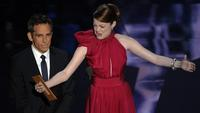
¿Lo mejor de la gala? Pues probablemente la espectacular actuación del Circo Del Sol, un homenaje (de nuevo) a la historia del cine echando la vista atrás, con todos los elementos hipnotizantes que caracterizan a la compañía. Se ganaron un sonoro aplauso y la admiración de todo el mundo, demostrando que para triunfar en una gala de este estilo se necesitan los medios necesarios y mucho mucho ingenio. Lástima que los que cumplen con estas características no sean siempre los que se ponen al frente.
El puntito emotivo lo pusieron algunos premiados, como Victoria Octavia Spencer, Meryl Streep y Christopher Plummer. Los tres consiguieron poner al público en pie y emocionaron en sus discursos, más allá del agradecimiento al gato de la prima de la abuela tan extendido. Genialísima Emma Stone en su primera vez presentando un premio, y se agradece la broma de Robert Downey Jr. en la presentación del premio al Mejor Documental, subiendo consigo un equipo de cámaras al escenario como si de su propio reality se tratara. Dio cercanía y simplicidad a una realización y producción excesivamente encorsetadas.
En definitiva, una gala mediocre sólo animada por los ácidos comentarios en Twitter (yo ya no sé seguir una retransmisión de este estilo sin esa herramienta) y por los ataques de pánico de Manuela Velasco en Canal+ cada vez que la gala volvía de la publicidad. Aún sigo sin entender cómo “Volvemos a la gala“ no fue Trending Topic en la noche de ayer. Los Oscars 2012 son historia, veremos qué tal se presentan los del 2013. Para información sobre los premiados, mejor que os paséis por Blog de Cine.
En ¡Vaya Tele! | La gala de los Oscars decepciona un año más
Mon, 27 Feb 2012 16:38:51 GMT
Telecinco relega 'La Fuga' a segundo plato
Telecinco relega 'La Fuga' a segundo plato
Hace más o menos un año nos llegaban rumores de lo que iba a ser el próximo bombazo de Telecinco en cuestión de ficción nacional. Primero lo calificaron de ficción futurista poniéndole un número en el título, más tarde esos rumores le cambiaron ligeramente el argumento pero siguieron con el susodicho número en el título de la serie para, otros tantos meses después, acabar titulándola como ‘La Fuga‘ y encontrarnos con una serie totalmente diferente a lo contado originalmente. Hoy parece que esa serie que iba a ser un bombazo ya importa poco, ya que Telecinco la ha relegado a segundo plato. ¿Por qué ha ocurrido esto? Pues por ‘Gran Hermano, quién si no. En un movimiento por parar la transferencia de telespectadores a cadenas rivales, la cadena de Mediaset ha decidido (no sabemos si temporal o definitivamente) trasladar el programa ‘GH: Última Hora‘ al prime-time de los martes para mover los nuevos episodios de ‘La Fuga‘ a las 23:00 horas ni más ni menos, un horario que con la duración de los episodios nos llevará a altas horas de la madrugada si queremos terminar de ver el episodio. La explicación de esta decisión la encontramos en la semana pasada, donde la serie nacional anotó un mínimo alcanzando ni más ni menos que un 10.3% de share. Un dato que podría achacarse a la serie en sí, pero que en realidad fue culpa de un aburrido programa especial sobre Iñaki Urdangarín, el cual actuó de lead-in penoso y catapultó a ‘Españoles por el mundo’ a la primera posición. A lo mejor me equivoco, pero creo que con este cambio de horario Telecinco va a terminar de rematar la serie. Y es que después de los cambios de día debido a la emisión de partidos de fútbol (todo por la audiencia, ya sabéis), este cambio de hora puede ser su sentencia de muerte. ¿Acaso habría sido tan difícil suspender la emisión de la serie unas semanas? Es una práctica habitual que, con una buena auto promoción informando a los espectadores, disminuiría el descenso de share de la serie. Lo más divertido de todo es que luego saldrá algún directivo diciendo que no hacen ficción nacional porque no funciona en cuestiones de audiencia. Hombre, querido directivo, si despistas (a la audiencia) con cambios tan radicales que ni siquiera se anuncian como es debido, normal que la gente deje de ver este tipo de contenidos. Así les va a nuestras series patrias, así les va. En ¡Vaya Tele! | ‘La Fuga’ una ficción que queria ser más de lo que es
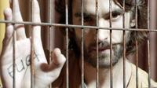
Hace más o menos un año nos llegaban rumores de lo que iba a ser el próximo bombazo de Telecinco en cuestión de ficción nacional. Primero lo calificaron de ficción futurista poniéndole un número en el título, más tarde esos rumores le cambiaron ligeramente el argumento pero siguieron con el susodicho número en el título de la serie para, otros tantos meses después, acabar titulándola como ‘La Fuga‘ y encontrarnos con una serie totalmente diferente a lo contado originalmente. Hoy parece que esa serie que iba a ser un bombazo ya importa poco, ya que Telecinco la ha relegado a segundo plato.
¿Por qué ha ocurrido esto? Pues por ‘Gran Hermano, quién si no. En un movimiento por parar la transferencia de telespectadores a cadenas rivales, la cadena de Mediaset ha decidido (no sabemos si temporal o definitivamente) trasladar el programa ‘GH: Última Hora‘ al prime-time de los martes para mover los nuevos episodios de ‘La Fuga‘ a las 23:00 horas ni más ni menos, un horario que con la duración de los episodios nos llevará a altas horas de la madrugada si queremos terminar de ver el episodio.
La explicación de esta decisión la encontramos en la semana pasada, donde la serie nacional anotó un mínimo alcanzando ni más ni menos que un 10.3% de share. Un dato que podría achacarse a la serie en sí, pero que en realidad fue culpa de un aburrido programa especial sobre Iñaki Urdangarín, el cual actuó de lead-in penoso y catapultó a ‘Españoles por el mundo’ a la primera posición.
A lo mejor me equivoco, pero creo que con este cambio de horario Telecinco va a terminar de rematar la serie. Y es que después de los cambios de día debido a la emisión de partidos de fútbol (todo por la audiencia, ya sabéis), este cambio de hora puede ser su sentencia de muerte. ¿Acaso habría sido tan difícil suspender la emisión de la serie unas semanas? Es una práctica habitual que, con una buena auto promoción informando a los espectadores, disminuiría el descenso de share de la serie.
Lo más divertido de todo es que luego saldrá algún directivo diciendo que no hacen ficción nacional porque no funciona en cuestiones de audiencia. Hombre, querido directivo, si despistas (a la audiencia) con cambios tan radicales que ni siquiera se anuncian como es debido, normal que la gente deje de ver este tipo de contenidos. Así les va a nuestras series patrias, así les va.
En ¡Vaya Tele! | ‘La Fuga’ una ficción que queria ser más de lo que es
Mon, 27 Feb 2012 10:46:10 GMT
Pilotos 2012: las series que prepara la cadena CBS
Pilotos 2012: las series que prepara la cadena CBS
Cada año se empiezan en Estados Unidos centenares de nuevos proyectos. De estos, tan sólo unos pocos afortunados consiguen grabar un piloto, un capítulo de presentación con el que tendrán que convencer a los ejecutivos de que merecen una oportunidad en parrilla para la siguiente temporada. Por desgracia para ellos, tan sólo unos pocos elegidos consiguen pasar el corte. En el pasado ya os explicamos en detalle cómo funciona todo este proceso. En ¡Vaya Tele! queremos repasar todos los proyectos que, precisamente, están grabando su respectivo piloto o lo grabarán durante los próximos días, en lo que es nuestro especial Pilotos 2012. Repito que no todos saldrán adelante (es más, la mayoría se quedarán por el camino), pero de esta lista saldrán las series que verán la luz el año que viene por lo que siempre podemos hacernos una idea de lo que se nos avecina repasando esta lista de proyectos. Antes de empezar a hablar de pilotos, cabe destacar dos aspectos importantes a tener en cuenta. El primero es que, ya bien sea por no dar ideas a la competencia o porque aún no se tienen detalles, de la mayoría de posibles series tan sólo tenemos una línea de argumento. El segundo, que tanto títulos como actores y gente del equipo podrían variar en cuestión de horas. Nada de lo que vamos a ver a continuación es definitivo, ya que aún están en proceso de dar forma a cada serie. Hoy comenzamos con la CBS, la cadena generalista con la audiencia más envejecida de Estados Unidos. ¿Qué quiere decir esto? Que no veremos dramas ni comedias transgresores, sino más bien procedimentales o proyectos que tiran hacia lo tradicional. Además suele ser, normalmente, de las que menos pilotos encarga, ya que la mayoría de las series les funcionan bien y tienen muy pocos huecos en parrilla que cubrir de un año para otro. Los pilotos de la CBS: Drama
‘Applebaum’: Una abogada que deja su trabajo para llevar una vida más familiar en casa, aunque acaba convirtiéndose en detective privado para luchar contra el aburrimiento. Basada en los libros ‘Mommy Track Mysteries’.
‘Baby Big Shot’: Historia de una joven abogada de clase media que utiliza sus conocimientos de la calle para competir con sus compañeros más “refinados”.
‘Elementary’: Remake ambientado en la actualidad de Sherlock Holmes. Jonny Lee Miller (‘Eli Stone’) dará vida al popular personaje histórico.
‘Golden Boy’: Historia de un prometedor joven que pasa de ser un policía de uniforme a los 26 años a ser comisario de policía con 34. Ryan Phillipe iba a interpretar al protagonista en un principio, pero al final ha dejado el papel. Greg Berlanti (‘Everwood’, ‘Brothers & Sisters’) es el creador.
‘Quean’: Una joven hacker con mucho talento en el mundo de la informática comienza a trabajar con el Departamento de Policía de Oakland para resolver crímenes.
‘Trooper’: Historia de una madre responsable que se convierte en una agente de policía local del estado de Nueva York. Enésima serie de la factoría Bruckheimer.
Drama sin título de Ralph Lamb: Drama de época centrado en la vida del cowboy reconvertido en sheriff de Las Vegas en los años 60 y 70. Dennis Quaid dará vida al protagonista, con Michael Chiklis (‘The Shield’) interpretará a un mafioso.
‘The Widows Detective’: Drama sobre una condecorada agente de policía que sirve de apoyo a las familias de tres antiguos agentes compañeros suyos, todos ellos caídos en combate. Abogados, policías, investigadores… Esto es la CBS, señores. Lo que sí podría ser interesante es el drama de Quaid y Chiklis, pero habrá que ver si la cadena decide apostar por un proyecto tan fuera de su estilo. Lo mismo con ‘Golden Boy’, que bien llevado podría ser un drama clásico y de calidad al más puro estilo ‘The Good Wife’. O eso o terminaremos viendo la enésima serie de Bruckheimer, algo por desgracia bastante probable. Los pilotos de la CBS: Comedia
‘Friend me’: Dos jóvenes que se mudan desde Indiana a Los Angeles para trabajar en Groupon.
‘My idiotic twenties’: Historia de una joven pareja que rompe y a la que no les queda más remedio que trabajan en dos cubículos contiguos.
‘Oh Fuck, It’s you’: Un joven que va de chica en chica se da cuenta de que una de sus primeras ex-novias es “la elegida”, sólo que ahora ya es tarde y ésta ya está prometida con otro. Greg Berlanti (‘Everwood’, ‘Brothers & Sisters’) también produce esta serie, con bastantes caras conocidas: Bryan Greenberg (‘How to make it in America’) y Greg Grunberg (‘Heroes’) entre otros.
‘Partners’: Dos arquitectos, uno de ellos gay y otro heterosexual, cuya relación parece un matrimonio.
‘Super Fun Night’: Historia de tres chicas frikis que quieren pasárselo bien los viernes por la noche. Conan O’Brien es uno de los productores.
‘Tweaked’: La vida de un grupo de padres solteros que sale y tiene citas en Santa Monica.
Comedia sin título de CK: Día a día de un grupo de jóvenes que buscan alcanzar sus sueños en medio de esta crisis financiera. El cómico Louis C.K. es uno de los creadores y también productor ejecutivo.
Comedia sin título de Falcone & Dorf: Comedia centrada en un hombre de 37 años que aún vive con sus padres.
Comedia sin título de Martin Lawrence: Un padre viudo decide entrar en la Academia de Policía después de perder su trabajo en la construcción. Martin Lawrence será el protagonista. Con los pilotos de comedia ya es más difícil acertar. Normalmente la línea de descripción que ofrecen de cada uno de ellos es muy ambigua y está llena de clichés. Teniendo esto en cuenta, ‘Super Fun Night’ podría ser una opción interesante para acompañar a ‘The Big Bang Theory’ en la noche de los jueves. Ojito con ‘Oh Fuck, It’s you’ porque con esos nombres tan potentes detrás es una de las candidatas a ver la luz el año que viene. Vía | The Futon Critic En ¡Vaya Tele! | Pilotos 2012: Todas las cadenas
Cada año se empiezan en Estados Unidos centenares de nuevos proyectos. De estos, tan sólo unos pocos afortunados consiguen grabar un piloto, un capítulo de presentación con el que tendrán que convencer a los ejecutivos de que merecen una oportunidad en parrilla para la siguiente temporada. Por desgracia para ellos, tan sólo unos pocos elegidos consiguen pasar el corte. En el pasado ya os explicamos en detalle cómo funciona todo este proceso.
En ¡Vaya Tele! queremos repasar todos los proyectos que, precisamente, están grabando su respectivo piloto o lo grabarán durante los próximos días, en lo que es nuestro especial Pilotos 2012. Repito que no todos saldrán adelante (es más, la mayoría se quedarán por el camino), pero de esta lista saldrán las series que verán la luz el año que viene por lo que siempre podemos hacernos una idea de lo que se nos avecina repasando esta lista de proyectos.
Antes de empezar a hablar de pilotos, cabe destacar dos aspectos importantes a tener en cuenta. El primero es que, ya bien sea por no dar ideas a la competencia o porque aún no se tienen detalles, de la mayoría de posibles series tan sólo tenemos una línea de argumento. El segundo, que tanto títulos como actores y gente del equipo podrían variar en cuestión de horas. Nada de lo que vamos a ver a continuación es definitivo, ya que aún están en proceso de dar forma a cada serie.
Hoy comenzamos con la CBS, la cadena generalista con la audiencia más envejecida de Estados Unidos. ¿Qué quiere decir esto? Que no veremos dramas ni comedias transgresores, sino más bien procedimentales o proyectos que tiran hacia lo tradicional. Además suele ser, normalmente, de las que menos pilotos encarga, ya que la mayoría de las series les funcionan bien y tienen muy pocos huecos en parrilla que cubrir de un año para otro.
Los pilotos de la CBS: Drama
-
‘Applebaum’: Una abogada que deja su trabajo para llevar una vida más familiar en casa, aunque acaba convirtiéndose en detective privado para luchar contra el aburrimiento. Basada en los libros ‘Mommy Track Mysteries’.
-
‘Baby Big Shot’: Historia de una joven abogada de clase media que utiliza sus conocimientos de la calle para competir con sus compañeros más “refinados”.
-
‘Elementary’: Remake ambientado en la actualidad de Sherlock Holmes. Jonny Lee Miller (‘Eli Stone’) dará vida al popular personaje histórico.
-
‘Golden Boy’: Historia de un prometedor joven que pasa de ser un policía de uniforme a los 26 años a ser comisario de policía con 34. Ryan Phillipe iba a interpretar al protagonista en un principio, pero al final ha dejado el papel. Greg Berlanti (‘Everwood’, ‘Brothers & Sisters’) es el creador.
-
‘Quean’: Una joven hacker con mucho talento en el mundo de la informática comienza a trabajar con el Departamento de Policía de Oakland para resolver crímenes.
-
‘Trooper’: Historia de una madre responsable que se convierte en una agente de policía local del estado de Nueva York. Enésima serie de la factoría Bruckheimer.
-
Drama sin título de Ralph Lamb: Drama de época centrado en la vida del cowboy reconvertido en sheriff de Las Vegas en los años 60 y 70. Dennis Quaid dará vida al protagonista, con Michael Chiklis (‘The Shield’) interpretará a un mafioso.
-
‘The Widows Detective’: Drama sobre una condecorada agente de policía que sirve de apoyo a las familias de tres antiguos agentes compañeros suyos, todos ellos caídos en combate.
Abogados, policías, investigadores… Esto es la CBS, señores. Lo que sí podría ser interesante es el drama de Quaid y Chiklis, pero habrá que ver si la cadena decide apostar por un proyecto tan fuera de su estilo. Lo mismo con ‘Golden Boy’, que bien llevado podría ser un drama clásico y de calidad al más puro estilo ‘The Good Wife’. O eso o terminaremos viendo la enésima serie de Bruckheimer, algo por desgracia bastante probable.
Los pilotos de la CBS: Comedia
-
‘Friend me’: Dos jóvenes que se mudan desde Indiana a Los Angeles para trabajar en Groupon.
-
‘My idiotic twenties’: Historia de una joven pareja que rompe y a la que no les queda más remedio que trabajan en dos cubículos contiguos.
-
‘Oh Fuck, It’s you’: Un joven que va de chica en chica se da cuenta de que una de sus primeras ex-novias es “la elegida”, sólo que ahora ya es tarde y ésta ya está prometida con otro. Greg Berlanti (‘Everwood’, ‘Brothers & Sisters’) también produce esta serie, con bastantes caras conocidas: Bryan Greenberg (‘How to make it in America’) y Greg Grunberg (‘Heroes’) entre otros.
-
‘Partners’: Dos arquitectos, uno de ellos gay y otro heterosexual, cuya relación parece un matrimonio.
-
‘Super Fun Night’: Historia de tres chicas frikis que quieren pasárselo bien los viernes por la noche. Conan O’Brien es uno de los productores.
-
‘Tweaked’: La vida de un grupo de padres solteros que sale y tiene citas en Santa Monica.
-
Comedia sin título de CK: Día a día de un grupo de jóvenes que buscan alcanzar sus sueños en medio de esta crisis financiera. El cómico Louis C.K. es uno de los creadores y también productor ejecutivo.
-
Comedia sin título de Falcone & Dorf: Comedia centrada en un hombre de 37 años que aún vive con sus padres.
-
Comedia sin título de Martin Lawrence: Un padre viudo decide entrar en la Academia de Policía después de perder su trabajo en la construcción. Martin Lawrence será el protagonista.
Con los pilotos de comedia ya es más difícil acertar. Normalmente la línea de descripción que ofrecen de cada uno de ellos es muy ambigua y está llena de clichés. Teniendo esto en cuenta, ‘Super Fun Night’ podría ser una opción interesante para acompañar a ‘The Big Bang Theory’ en la noche de los jueves. Ojito con ‘Oh Fuck, It’s you’ porque con esos nombres tan potentes detrás es una de las candidatas a ver la luz el año que viene.
Vía | The Futon Critic
En ¡Vaya Tele! | Pilotos 2012: Todas las cadenas
Sun, 26 Feb 2012 16:48:15 GMT
Edición USA: 'Pan Am' se va por la puerta de atrás, 'The River' se hunde, 'Cougar Town' y 'Smash' nos preocupan y más
Edición USA: 'Pan Am' se va por la puerta de atrás, 'The River' se hunde, 'Cougar Town' y 'Smash' nos preocupan y más
Las audiencias de Estados Unidos nos importan. Porque de ellas depende que nuestras series favoritas tengan o no continuidad la próxima temporada. Poco importa que ‘Alcatraz’ vaya bien en laSexta o que ‘Terra Nova’ triunfe en Cuatro, pues si FOX decide no renovar una de estas series no habrá tu tía. Y precisamente ellas son dos de las que están en la palestra. En cambio no todas nos hacen sufrir, y algunas aunque no tengan la confirmación confirmada se sabe que volverán. Es el caso de ‘Modern Family’, ‘Once upon a time’, ‘2 Broke Girls’, ‘The Vampire Diaries’ o ‘New girl’, entre otras. Lamentablemente otras que nos gustan no tienen tanta suerte y nos hacen mordernos las uñas, y también peligran otras tantas que se lo merecen. ¿Queréis saber cómo está el panorama? Atentos a esta nueva Edición USA. ¿Se apaga el brillo de ‘Smash’? Aún es pronto para decir que ‘Smash’ está en zona de peligro de cancelación. Pero sus audiencias bajan considerablemente semana a semana, el termómetro sube y las alarmas están a punto de sonar. Si bien a día de hoy sus datos son correctos, pesa en su contra desperdiciar un gran lead-in y haber contado con una promoción brutal que no parece que se esté amortizando. Objetivamente los 6,4 millones de espectadores y 2,3 puntos en demográficos que anotó esta semana no son malos datos, sobre todo en la NBC. Pero si tenemos en cuenta que la serie hereda un arrastre de ‘The Voice’ de 16,8 millones y 6,3 puntos en demo, la cosa cambia. Perder 10 millones de espectadores y 4 puntos en demográficos entre un programa y otro sí es mala señal. Pero como decíamos, aún es pronto para preocuparse y habrá que esperar a que la audiencia se estabilice para valorar si hay peligro o no. Mientras tanto pongámosle una velita todos los lunes a los dioses televisivos.
FOX y la cancelación por descarte Tener una mala audiencia no es siempre la única razón posible para que una serie sea cancelada. A veces, todas las series de una cadena se mantienen a un nivel similar y aceptable (o a un mismo nivel penoso si hablamos de The CW) y la cadena tiene que decidir eliminar alguna de estas series simplemente para dejar hueco en la parrilla a los estrenos del próximo año. Es lo que le suele pasar a la CBS, y es lo que este año también le pasa un poco a FOX. En esta cadena todos los dramas se mantienen a un mismo nivel, por eso hay una especie de burbuja entre tres series de las cuales no podrán salvarse todas: ‘Touch’, ‘Terra Nova’ y ‘Alcatraz’. Al menos una de esas tres caerá, y el futuro de ellas depende mucho del futuro de las otras. Es cierto que el fin de ‘House’ y los pésimos registros de ‘The Finder’ han aliviado un poco la situación, pero aún con esas es casi imposible que renueven estos tres estrenos. ‘Touch’ tuvo muy buena acogida en su piloto pero hasta marzo no habrá nuevos episodios por lo que es pronto para valorar su situación. ‘Terra Nova’ no fue el boom que se esperaba, y pasó casi sin pena ni gloria por su primera temporada. Sin cifras alarmantes pero tampoco llamativas. Y tampoco con buenas críticas, ¿querrá la cadena intentar aprovechar la que parecía ser su apuesta más fuerte una temporada más? ¿le sale rentable invertir en una serie tan cara si no es un exitazo? Y en el tercer vértice del triángulo tenemos a ‘Alcatraz’, la única de las tres que emitió capítulo nuevo esta semana. Marcar un 1,8 en demográfico y quedarse por debajo de los seis millones de espectadores (y bajando) no es un buen augurio para los presos de JJ Abrams, y la sitúa como la peor parada del trío en cuestión. Una situación parecida a la de estos dramas es la que vive la comedia ‘Raising Hope’. Sus datos no son especialmente malos, pero si la cadena no decide ampliar para el año que viene sus horas de emisión de comedias, lo más probablemente es que la serie de Greg Garcia finalice por descarte. Y eso que fue una de las revelaciones del año pasado.
ABC: Un adiós, martes negros y la esperanza de nuevas series La semana pasada ya os contábamos que ‘Pan Am’ se despedía el domingo de la audiencia tras no haber cosechado el éxito que se esperaba de ella. Y eso que en los upfronts del pasado mayo parecía que iba a ser una de las series del año. Las azafatas volaron por última vez en ABC consiguiendo remontar un poco la audiencia con respecto a capítulos anteriores, pero sin llegar a los 4 millones, un dato que hace imposible que la serie vuelva. Se van por la puerta de atrás. Pero ‘Pan Am’ no es el único problema de la ABC. Parece que alguien haya gafado la noche de los martes, donde nada funciona (y no sólo este año, que el pasado también era de traca con ‘No ordinary family’, ‘V’ y ‘Detroit 1-8-7’) salvo que sea ‘Dancing with the stars’, cuando lo hay. Ahora lo único que va bien en la noche es la comedia ‘Last man standing’, pero en cambio ‘Cougar Town’ que la acompaña ha comenzado su tercera temporada con muy malos datos. La serie de Courteney Cox marcó esta semana un 1,7 en demográficos y no llegó a los 4 millones y medio de espectadores, cifras muy inferiores a las que hacía el año pasado en la noche del miércoles. Ojalá no la hubiesen movido de aquella ubicación, donde su estilo de correspondía mejor a la hora de emisión, más adulta. Y para rematar los martes, la ABC tiene ‘Body of proof’, el procedimental de Dana Delany que está destinado a la cancelación desde hace mucho, y ‘The River’, un estreno que empieza a oler a aguas fecales. Sin llegar a los 5 millones de espectadores, y bajando desde que se estrenó, pocas esperanzas hay en que esta serie haga algo decente. Su continuidad parece estar sellada, pero dependerá en gran medida de cómo se comporten los estrenos de midseason que aún faltan por llegar. En ¡Vaya Tele! | Edición USA
Las audiencias de Estados Unidos nos importan. Porque de ellas depende que nuestras series favoritas tengan o no continuidad la próxima temporada. Poco importa que ‘Alcatraz’ vaya bien en laSexta o que ‘Terra Nova’ triunfe en Cuatro, pues si FOX decide no renovar una de estas series no habrá tu tía. Y precisamente ellas son dos de las que están en la palestra.
En cambio no todas nos hacen sufrir, y algunas aunque no tengan la confirmación confirmada se sabe que volverán. Es el caso de ‘Modern Family’, ‘Once upon a time’, ‘2 Broke Girls’, ‘The Vampire Diaries’ o ‘New girl’, entre otras. Lamentablemente otras que nos gustan no tienen tanta suerte y nos hacen mordernos las uñas, y también peligran otras tantas que se lo merecen. ¿Queréis saber cómo está el panorama? Atentos a esta nueva Edición USA.
¿Se apaga el brillo de ‘Smash’?
Aún es pronto para decir que ‘Smash’ está en zona de peligro de cancelación. Pero sus audiencias bajan considerablemente semana a semana, el termómetro sube y las alarmas están a punto de sonar. Si bien a día de hoy sus datos son correctos, pesa en su contra desperdiciar un gran lead-in y haber contado con una promoción brutal que no parece que se esté amortizando.
Objetivamente los 6,4 millones de espectadores y 2,3 puntos en demográficos que anotó esta semana no son malos datos, sobre todo en la NBC. Pero si tenemos en cuenta que la serie hereda un arrastre de ‘The Voice’ de 16,8 millones y 6,3 puntos en demo, la cosa cambia. Perder 10 millones de espectadores y 4 puntos en demográficos entre un programa y otro sí es mala señal. Pero como decíamos, aún es pronto para preocuparse y habrá que esperar a que la audiencia se estabilice para valorar si hay peligro o no. Mientras tanto pongámosle una velita todos los lunes a los dioses televisivos.
FOX y la cancelación por descarte
Tener una mala audiencia no es siempre la única razón posible para que una serie sea cancelada. A veces, todas las series de una cadena se mantienen a un nivel similar y aceptable (o a un mismo nivel penoso si hablamos de The CW) y la cadena tiene que decidir eliminar alguna de estas series simplemente para dejar hueco en la parrilla a los estrenos del próximo año.
Es lo que le suele pasar a la CBS, y es lo que este año también le pasa un poco a FOX. En esta cadena todos los dramas se mantienen a un mismo nivel, por eso hay una especie de burbuja entre tres series de las cuales no podrán salvarse todas: ‘Touch’, ‘Terra Nova’ y ‘Alcatraz’. Al menos una de esas tres caerá, y el futuro de ellas depende mucho del futuro de las otras.
Es cierto que el fin de ‘House’ y los pésimos registros de ‘The Finder’ han aliviado un poco la situación, pero aún con esas es casi imposible que renueven estos tres estrenos. ‘Touch’ tuvo muy buena acogida en su piloto pero hasta marzo no habrá nuevos episodios por lo que es pronto para valorar su situación. ‘Terra Nova’ no fue el boom que se esperaba, y pasó casi sin pena ni gloria por su primera temporada. Sin cifras alarmantes pero tampoco llamativas. Y tampoco con buenas críticas, ¿querrá la cadena intentar aprovechar la que parecía ser su apuesta más fuerte una temporada más? ¿le sale rentable invertir en una serie tan cara si no es un exitazo?
Y en el tercer vértice del triángulo tenemos a ‘Alcatraz’, la única de las tres que emitió capítulo nuevo esta semana. Marcar un 1,8 en demográfico y quedarse por debajo de los seis millones de espectadores (y bajando) no es un buen augurio para los presos de JJ Abrams, y la sitúa como la peor parada del trío en cuestión.
Una situación parecida a la de estos dramas es la que vive la comedia ‘Raising Hope’. Sus datos no son especialmente malos, pero si la cadena no decide ampliar para el año que viene sus horas de emisión de comedias, lo más probablemente es que la serie de Greg Garcia finalice por descarte. Y eso que fue una de las revelaciones del año pasado.

ABC: Un adiós, martes negros y la esperanza de nuevas series
La semana pasada ya os contábamos que ‘Pan Am’ se despedía el domingo de la audiencia tras no haber cosechado el éxito que se esperaba de ella. Y eso que en los upfronts del pasado mayo parecía que iba a ser una de las series del año. Las azafatas volaron por última vez en ABC consiguiendo remontar un poco la audiencia con respecto a capítulos anteriores, pero sin llegar a los 4 millones, un dato que hace imposible que la serie vuelva. Se van por la puerta de atrás.
Pero ‘Pan Am’ no es el único problema de la ABC. Parece que alguien haya gafado la noche de los martes, donde nada funciona (y no sólo este año, que el pasado también era de traca con ‘No ordinary family’, ‘V’ y ‘Detroit 1-8-7’) salvo que sea ‘Dancing with the stars’, cuando lo hay. Ahora lo único que va bien en la noche es la comedia ‘Last man standing’, pero en cambio ‘Cougar Town’ que la acompaña ha comenzado su tercera temporada con muy malos datos. La serie de Courteney Cox marcó esta semana un 1,7 en demográficos y no llegó a los 4 millones y medio de espectadores, cifras muy inferiores a las que hacía el año pasado en la noche del miércoles. Ojalá no la hubiesen movido de aquella ubicación, donde su estilo de correspondía mejor a la hora de emisión, más adulta.
Y para rematar los martes, la ABC tiene ‘Body of proof’, el procedimental de Dana Delany que está destinado a la cancelación desde hace mucho, y ‘The River’, un estreno que empieza a oler a aguas fecales. Sin llegar a los 5 millones de espectadores, y bajando desde que se estrenó, pocas esperanzas hay en que esta serie haga algo decente. Su continuidad parece estar sellada, pero dependerá en gran medida de cómo se comporten los estrenos de midseason que aún faltan por llegar.
En ¡Vaya Tele! | Edición USA
Sun, 26 Feb 2012 10:14:41 GMT
'The Middle', hay que reivindicarla más
'The Middle', hay que reivindicarla más
Pocas comedias existen tan ignoradas como ‘The Middle‘. Todas las series de la noche de los miércoles en ABC tienen su reconocimiento, tanto las antiguas (‘Cougar Town’ tiene a toda una masa de fans detrás) como las nuevas. ‘Happy Endings’ es cada vez más conocida por el público, ‘Suburgatory’ fue muy bienvenida por la crítica cuando se estrenó en otoño, y no tengo que decir nada de ‘Modern Family’, ¿verdad? Pues con todo y con eso, sigo sin entender cómo tres años después ‘The Middle’ sigue siendo una serie tan ninguneada. Se ha mantenido regularmente como la oferta de la ABC en el prime time más temprano de los miércoles, ofreciendo una dosis de humor “familiar” (la palabrita de marras) que agrada a todo el mundo. Sus datos de audiencia no destacan y tampoco son un desastre, suficientes para mantenerla en antena durante todo este tiempo, y probablemente la tengamos durante varios años más. Pero esa ignorancia por parte de la crítica y de la audiencia (me refiero a la audiencia que luego comenta el episodio, en términos netos está bastante bien servida) no hace ninguna justicia a su grandeza. En ‘The Middle‘ ocurre algo curioso, y es que mientras en la mayoría de comedias los niños son repelentes y lastran la calidad de una serie, aquí son precisamente el pilar donde se asientan. Sue, Axl y Brick les dan tres mil vueltas a los padres en el terreno de la comedia, y es el particular carácter de cada uno de ellos lo que nos hace pegarnos al asiento los 20 minutos que dura cada capítulo. Cualquier grito de Sue referente a Justin Bieber o cualquier parida de Brick respecto a su educación hace más gracia que el 60% de comedias emitidas actualmente. Patricia Heaton, como madre y matriarca, es la encargada de narrar cada capítulo, mientras que Neil Flynn da vida al padre algo despreocupado, probablemente el elemento más prescindible de la serie. Y la serie alcanza sus máximas cotas cuando todos interactuan a la vez a un ritmo rapidísimo, un tipo de escena que nos están regalando más que nunca esta temporada. La conversación en el coche de hace unas semanas cuando les paró el oficial de Policía, o la escena del último capítulo emitido en el salón mientras compraban las entradas para el concierto de Justin Bieber dan sentido y justifican nuestro amor por una serie vilmente ignorada. No pido un Emmy, ni siquiera una nominación (aunque a Patricia Heaton ya le va tocando), sólo una oportunidad por vuestra parte. No es necesario que empecéis por la primera temporada, cualquier capítulo de la serie os vale para apreciar su grandeza; y si queréis un buen ejemplo, el 3×16 (el penúltimo emitido hasta ahora) recoge en su mayoría la esencia de ‘The Middle’. Os gustará. En ¡Vaya Tele! | ‘The Middle’ sigue ganando con el paso del tiempo
Pocas comedias existen tan ignoradas como ‘The Middle‘. Todas las series de la noche de los miércoles en ABC tienen su reconocimiento, tanto las antiguas (‘Cougar Town’ tiene a toda una masa de fans detrás) como las nuevas. ‘Happy Endings’ es cada vez más conocida por el público, ‘Suburgatory’ fue muy bienvenida por la crítica cuando se estrenó en otoño, y no tengo que decir nada de ‘Modern Family’, ¿verdad? Pues con todo y con eso, sigo sin entender cómo tres años después ‘The Middle’ sigue siendo una serie tan ninguneada.
Se ha mantenido regularmente como la oferta de la ABC en el prime time más temprano de los miércoles, ofreciendo una dosis de humor “familiar” (la palabrita de marras) que agrada a todo el mundo. Sus datos de audiencia no destacan y tampoco son un desastre, suficientes para mantenerla en antena durante todo este tiempo, y probablemente la tengamos durante varios años más. Pero esa ignorancia por parte de la crítica y de la audiencia (me refiero a la audiencia que luego comenta el episodio, en términos netos está bastante bien servida) no hace ninguna justicia a su grandeza.
En ‘The Middle‘ ocurre algo curioso, y es que mientras en la mayoría de comedias los niños son repelentes y lastran la calidad de una serie, aquí son precisamente el pilar donde se asientan. Sue, Axl y Brick les dan tres mil vueltas a los padres en el terreno de la comedia, y es el particular carácter de cada uno de ellos lo que nos hace pegarnos al asiento los 20 minutos que dura cada capítulo. Cualquier grito de Sue referente a Justin Bieber o cualquier parida de Brick respecto a su educación hace más gracia que el 60% de comedias emitidas actualmente.
Patricia Heaton, como madre y matriarca, es la encargada de narrar cada capítulo, mientras que Neil Flynn da vida al padre algo despreocupado, probablemente el elemento más prescindible de la serie. Y la serie alcanza sus máximas cotas cuando todos interactuan a la vez a un ritmo rapidísimo, un tipo de escena que nos están regalando más que nunca esta temporada. La conversación en el coche de hace unas semanas cuando les paró el oficial de Policía, o la escena del último capítulo emitido en el salón mientras compraban las entradas para el concierto de Justin Bieber dan sentido y justifican nuestro amor por una serie vilmente ignorada.
No pido un Emmy, ni siquiera una nominación (aunque a Patricia Heaton ya le va tocando), sólo una oportunidad por vuestra parte. No es necesario que empecéis por la primera temporada, cualquier capítulo de la serie os vale para apreciar su grandeza; y si queréis un buen ejemplo, el 3×16 (el penúltimo emitido hasta ahora) recoge en su mayoría la esencia de ‘The Middle’. Os gustará.
En ¡Vaya Tele! | ‘The Middle’ sigue ganando con el paso del tiempo
Sat, 25 Feb 2012 13:00:00 GMT
Antena 3 habla sobre la publicidad en la Fórmula 1: cómo, cuándo, cuánto y dónde
Antena 3 habla sobre la publicidad en la Fórmula 1: cómo, cuándo, cuánto y dónde
Cuando los derechos de la Fórmula 1 fueron adquiridos por Antena 3 hace unas semanas, una de las mayores dudas que nos asaltaban a los seguidores de este deporte era la gestión de la publicidad. La cadena de Planeta es famosa por pasarse por el forro los límites establecidos, metiendo publicidad allí donde no cabe e incluso recortando la duración de series y películas para meter aún más anuncios. Y si hacen eso con la ficción, ¿qué no harían con el deporte del motor? La cadena ha dado a conocer, a través de su exclusivista publicitaria Atres Advertising, las tarifas para la contratación de anuncios en las carreras de Fórmula 1 a partir del próximo mes de marzo, y con ello obtenemos ya mucha información no sólo del precio por anuncio y de la duración de la publicidad, sino también del tiempo que van a dedicar al deporte más allá de la carrera (antes y después del Gran Premio, clasificaciones, entrenamientos libres y demás). Y nos encontramos con datos realmente interesantes. 20 minutos de publicidad en la carrera Vamos primero con lo que más nos interesa a todos, la cantidad de publicidad que nos colarán en cada carrera. Según el dossier publicado por Atres Advertising, se estiman cuatro cortes de publicidad en la carrera (siempre con la doble ventanita) de unos 4-5 minutos cada uno más un minuto de publicidad justo antes de que se apague el semáforo. En total, unos 20 minutos de los 90 que suele durar un Gran Premio de Fórmula 1. Aproximadamente el 20 % de la carrera. Es decir, uno de cada cinco minutos estaremos viendo publicidad en lugar de lo que ocurre en la pista. Los datos son muy parecidos a los que ya teníamos en laSexta el año pasado, aunque en ésta llegamos a encontrar porcentajes de publicidad de hasta el 26%, más de una cuarta parte de la carrera. No voy a decir que respiramos tranquilos, porque perderse veinte minutos de cada Gran Premio es un sacrilegio, pero por lo menos no empeoran lo que ya teníamos. Dos horas de previo de Fórmula 1 en Antena 3 Otro de los aspectos que nos preocupababa (por lo menos a mí), era el tiempo que Antena 3 iba a dedicar a la Fórmula 1 más allá de la carrera. Con su política de austeridad y el pastizal que ha pagado por salvar a laSexta de sus derechos, costaba creer que fueran a dedicar mucho más presupuesto para el previo de la carrera, pero parece que me equivocaba. En el dossier hablan de dos horas de previo y media hora de post-carrera, llenando en una carrera normal toda la franja de 12:00 a 16:00. También se habla de la clasificación del sábado, con media hora de previo y sus correspondientes tarifas de anuncios, pero ni rastro de las sesiones de entrenamientos libres. Es de esperar, por tanto, que sea Nitro la que se lleve este contenido; como ya avanzábamos hace unas semanas, el canal de la TDT dedicado al público masculino se perfilaba como nuestro mejor aliado para disfrutar de todos los contenidos de la Fórmula 1, y según las promociones que ha sacado Antena 3, parece que así será. Aquí se diferencian de laSexta, que también emitía la tercera sesión clasificatoria de los sábados a primera hora. 40 millones de derechos, y 10 millones a la basura Las declaraciones que hizo Silvio González hace unos días vuelven a dejar claro que la adquisición de los derechos fue más algo pactado que una verdadera subasta. Según sus propias palabras, la compra “no fue una opción libre, sino algo que se tenía que hacer“. Pagando tremendo pastizal perderán 10 millones de euros, según estima, pero en caso de quedarse en laSexta tendrían que haber pagado además la sanción por retraso en el pago de los derechos. Pocas veces el consejero delegado de una cadena habla con tanta claridad de los derechos deportivos, y se agradece que Silvio lo haga para darnos cuenta de la espiral ambiciosa en la que están metidas cadenas y productoras. Con la Fórmula 1, Antena 3 ganará visibilidad, imagen y, sobre todo, unas decimitas de share que le vendrán muy bien en su guerra particular contra Telecinco. No obtendrán ningún beneficio y hasta perderán una burrada de dinero, pero en términos cualitativos se verá reforzada. Eso sí, a costa de los espectadores. ¿Les compensará lo suficiente para renovar los derechos el año que viene? Me da a mí que no. Algunos datos interesantes sobre las tarifas de anuncios Pero lo más interesante del dossier publicado por Atres Advertising quizá sea conocer las tarifas específicas por las que se podrá contratar un anuncio en la Fórmula 1. Las marcas de relojes, cristales para coches, perfumes para hombres y demás productos que vemos siempre anunciados tendrán que desembolsar entre 6.000 y 10.000 euros por un anuncio en el previo, mientras que el precio supera los 100.000 euros en el caso del anuncio inmediatamente anterior al comienzo de la carrera. El penúltimo anuncio antes de que se apague el semáforo costará 74.450, frente a los 48.640 euros del antepenúltimo. Es curioso ver cómo sólo unos segundos de diferencia suponen desembolsar 30.000 euros más. ¿Y a cuánto está el anuncio en mitad de la carrera? Pues según donde tenga lugar el Gran Premio costará entre 22.520 (Alemania) y 35.560 (China, incluyendo carrera en directo y reposición por la mañana). Las telepromociones de 45 segundos locutadas por Antonio Lobato en el previo (las famosas de Cristal Box o del agua mineral) llegan a la friolera de 90.000 euros. Y si queréis más datos, os recomiendo que le echéis un vistazo al dossier completo, donde se ilustran todos los precios de los anuncios y tenéis estadísticas de audiencia, perfiles de espectador y hasta estimaciones de audiencia de cada Gran Premio de este año. Vía | Frecuencia Digital Más información | Atres Advertising En ¡Vaya Tele! | La Fórmula 1 en Antena 3, ¿qué podemos esperar?
Cuando los derechos de la Fórmula 1 fueron adquiridos por Antena 3 hace unas semanas, una de las mayores dudas que nos asaltaban a los seguidores de este deporte era la gestión de la publicidad. La cadena de Planeta es famosa por pasarse por el forro los límites establecidos, metiendo publicidad allí donde no cabe e incluso recortando la duración de series y películas para meter aún más anuncios. Y si hacen eso con la ficción, ¿qué no harían con el deporte del motor?
La cadena ha dado a conocer, a través de su exclusivista publicitaria Atres Advertising, las tarifas para la contratación de anuncios en las carreras de Fórmula 1 a partir del próximo mes de marzo, y con ello obtenemos ya mucha información no sólo del precio por anuncio y de la duración de la publicidad, sino también del tiempo que van a dedicar al deporte más allá de la carrera (antes y después del Gran Premio, clasificaciones, entrenamientos libres y demás). Y nos encontramos con datos realmente interesantes.
20 minutos de publicidad en la carrera
Vamos primero con lo que más nos interesa a todos, la cantidad de publicidad que nos colarán en cada carrera. Según el dossier publicado por Atres Advertising, se estiman cuatro cortes de publicidad en la carrera (siempre con la doble ventanita) de unos 4-5 minutos cada uno más un minuto de publicidad justo antes de que se apague el semáforo. En total, unos 20 minutos de los 90 que suele durar un Gran Premio de Fórmula 1. Aproximadamente el 20 % de la carrera.
Es decir, uno de cada cinco minutos estaremos viendo publicidad en lugar de lo que ocurre en la pista. Los datos son muy parecidos a los que ya teníamos en laSexta el año pasado, aunque en ésta llegamos a encontrar porcentajes de publicidad de hasta el 26%, más de una cuarta parte de la carrera. No voy a decir que respiramos tranquilos, porque perderse veinte minutos de cada Gran Premio es un sacrilegio, pero por lo menos no empeoran lo que ya teníamos.
Dos horas de previo de Fórmula 1 en Antena 3
Otro de los aspectos que nos preocupababa (por lo menos a mí), era el tiempo que Antena 3 iba a dedicar a la Fórmula 1 más allá de la carrera. Con su política de austeridad y el pastizal que ha pagado por salvar a laSexta de sus derechos, costaba creer que fueran a dedicar mucho más presupuesto para el previo de la carrera, pero parece que me equivocaba. En el dossier hablan de dos horas de previo y media hora de post-carrera, llenando en una carrera normal toda la franja de 12:00 a 16:00.
También se habla de la clasificación del sábado, con media hora de previo y sus correspondientes tarifas de anuncios, pero ni rastro de las sesiones de entrenamientos libres. Es de esperar, por tanto, que sea Nitro la que se lleve este contenido; como ya avanzábamos hace unas semanas, el canal de la TDT dedicado al público masculino se perfilaba como nuestro mejor aliado para disfrutar de todos los contenidos de la Fórmula 1, y según las promociones que ha sacado Antena 3, parece que así será. Aquí se diferencian de laSexta, que también emitía la tercera sesión clasificatoria de los sábados a primera hora.
40 millones de derechos, y 10 millones a la basura
Las declaraciones que hizo Silvio González hace unos días vuelven a dejar claro que la adquisición de los derechos fue más algo pactado que una verdadera subasta. Según sus propias palabras, la compra “no fue una opción libre, sino algo que se tenía que hacer“. Pagando tremendo pastizal perderán 10 millones de euros, según estima, pero en caso de quedarse en laSexta tendrían que haber pagado además la sanción por retraso en el pago de los derechos.
Pocas veces el consejero delegado de una cadena habla con tanta claridad de los derechos deportivos, y se agradece que Silvio lo haga para darnos cuenta de la espiral ambiciosa en la que están metidas cadenas y productoras. Con la Fórmula 1, Antena 3 ganará visibilidad, imagen y, sobre todo, unas decimitas de share que le vendrán muy bien en su guerra particular contra Telecinco. No obtendrán ningún beneficio y hasta perderán una burrada de dinero, pero en términos cualitativos se verá reforzada. Eso sí, a costa de los espectadores. ¿Les compensará lo suficiente para renovar los derechos el año que viene? Me da a mí que no.
Algunos datos interesantes sobre las tarifas de anuncios
Pero lo más interesante del dossier publicado por Atres Advertising quizá sea conocer las tarifas específicas por las que se podrá contratar un anuncio en la Fórmula 1. Las marcas de relojes, cristales para coches, perfumes para hombres y demás productos que vemos siempre anunciados tendrán que desembolsar entre 6.000 y 10.000 euros por un anuncio en el previo, mientras que el precio supera los 100.000 euros en el caso del anuncio inmediatamente anterior al comienzo de la carrera.
El penúltimo anuncio antes de que se apague el semáforo costará 74.450, frente a los 48.640 euros del antepenúltimo. Es curioso ver cómo sólo unos segundos de diferencia suponen desembolsar 30.000 euros más. ¿Y a cuánto está el anuncio en mitad de la carrera? Pues según donde tenga lugar el Gran Premio costará entre 22.520 (Alemania) y 35.560 (China, incluyendo carrera en directo y reposición por la mañana).
Las telepromociones de 45 segundos locutadas por Antonio Lobato en el previo (las famosas de Cristal Box o del agua mineral) llegan a la friolera de 90.000 euros. Y si queréis más datos, os recomiendo que le echéis un vistazo al dossier completo, donde se ilustran todos los precios de los anuncios y tenéis estadísticas de audiencia, perfiles de espectador y hasta estimaciones de audiencia de cada Gran Premio de este año.
Vía | Frecuencia Digital
Más información | Atres Advertising
En ¡Vaya Tele! | La Fórmula 1 en Antena 3, ¿qué podemos esperar?
Wed, 29 Feb 2012 20:31:34 GMT
Pilotos 2012: Las series que prepara la cadena NBC
Pilotos 2012: Las series que prepara la cadena NBC
Y seguimos desgranando día a día los encargos de pilotos que han hecho las cadenas americanas. Si ayer teníamos a la FOX como protagonista hoy le toca a otra de las veteranas, la NBC, la cual como no podía ser de otra manera ha ordenado una cantidad bastante importante de pilotos, tanto en comedia como en drama. La NBC necesita drama. Ninguna de sus estrenos dramáticos, salvo ‘Smash‘, ha tenido el éxito esperado y las series que ya tienen unas temporadas encima, comienzan a mostrar algún que otro síntoma de cansancio. Aún así, es bastante curioso ver como la cadena del pavo real ha encargado muchos más pilotos de comedia que de drama ¿estará pensando en jubilar a alguna sitcom veterana? Esperemos que no, pero si queréis ver la lista de los pilotos que ha encargado, seguid leyendo. Los pilotos de NBC: Dramas
‘Bad Girls’: drama con título muy descriptivo que contará la vida de un correccional de mujeres. Cabe destacar que una de las protagonistas será Jurnee Smollett, la cual ya pudimos ver en las últimas temporadas de ‘Friday Night Lights’
‘Beautiful People’: serie con un argumento bastante quemado de la ciencia ficción, robots con forma humana que acaban tomando consciencia y viviendo por sí mismos.
‘Chicago Fire’: drama sobre un cuerpo del orden no demasiado explotado, los bomberos.
‘County’: doctores, enfermeras y administradores en un hospital del condado de Los Angeles. ¿A alguien le suena la idea?
‘Do no Harm’: un brillante neurocirujano que tiene un alter-ego que le hace hacer cosas extrañas.
‘The Frontier’: drama sobre un grupo de personas que se juntarán para hacer un viaje a través de todo Oregón.
‘Hannibal’: si habéis visto la película ‘El Silencio de los Corderos’ o la precuela con el mismo nombre de la serie ya os podéis hacer una idea. La serie explorará los comienzos del personaje de Hannibal mientras militaba en el FBI y visitaba a su psiquiatra, el cual encontrará la fascinación por los asesinos en serie del agente bastante inquietante.
‘Midnight Sun’: drama que se desarrollará alrededor de una investigación policial acerca de la desaparición de una secta, la cual la investigación descubrirá grandes secretos sobre los habitantes del lugar (además de alguna conspiración).
‘Mockingbird Lane’: ya sabíamos que la NBC quería sacar una serie sobre la mítica Familia Monster. Parece que al final el título será este. Habrá que ver como es esa reimaginación de la serie clásica de la que tanto habla la cadena.
‘Notorius’: drama sobre una joven detective que tiene que volver a la familia adinerada que la crió para investigar de manera encubierta el asesinato de una de las herederas.
‘Revolution’: drama que juntará a Eric Kripke (‘Supernatural’) y a JJ Abrams (‘Lost’, ‘Alcatraz’… etc). Tratará sobre un grupo de personas que tratan de sobrevivir en un mundo donde todas las formas de energía han dejado de existir. Con la mayoría de sus dramas en la cuerda floja (y aún sin saber cómo irá ‘Awake’ en su estreno en midseason) es probable que muchos de estos pilotos acaben saliendo adelante. El remake (o reimaginación o como quieran llamarlo) de la Familia Monster tiene muchas papeletas, al igual que ‘Revolution’, más por tener a quien tiene detrás que por un argumento novedoso (a mí me huele mal, todo hay que decirlo). Los pilotos de la NBC: comedias
‘1600 Penn’: una familia disfuncional que tiene que aguantar la vuelta a casa de su hijo que es un cabeza loca. Tiene entre sus bazas al director del piloto de ‘Modern Family’ y a Brittany Snow (Jenna en ‘Harrys Law’), una actriz que puede dar mucho juego en comedia.
‘Animal Kingdom’: un veterinario que ama los animales pero odia a sus dueños. Anthony Russo (director del piloto de ‘Arrested Development’) se encargará de su piloto.
‘Daddys Girls’: comedia sobre una chica que vuelve a casa y descubre que su padre está saliendo con una de las chicas más odiosas de su época de instituto.
‘DILFS’: comedia donde veremos a un grupo de treintañeros que aunque dicen no estar preparados para ser padres, acaban dándose cuenta de que sí y que tienen que aceptar la verdad.
‘Downwardly Mobile’: esta comedia tratará sobre una familia que acaba viviendo en un camping de caravanas.
‘Friday Night Dinner’: una familia judía, sus cenas de sabbath (sábados) y su manera de ver la vida. Será la versión de la serie británica de la BBC con mismo nombre.
‘Go On’: un comentarista deportivo que después de una pérdida acaba yendo a un grupo de terapia, encontrando allí un nuevo lugar donde sentirse cómodo contando sus problemas y escuchando los de otros.
‘Isabel’: comedia que tratará sobre la vida de una familia que pasa el día a día intentando criar a su hija que tiene poderes mágicos.
‘Lady Friends’: comedia en la que veremos la relación de dos amigas con vidas muy diferentes, una asentada con marido e hijos y la otra… no.
‘The New Normal’: sitcom de una familia formada por una pareja gay y una mujer que les ayuda a comenzar a formar una familia. Tiene detrás a Ryan Murphy, conocido por llevar parte del peso de ‘Glee’.
‘Next Caller Please’: una radio por satélite, un ex-miembro de un grupo de los 90 y una podcaster y blogger. Todo junto, removido pero no batido.
‘Save Me’: comedia que girará alrededor de una mujer que después de que su matrimonio se vaya a pique, acaba siendo una mujer excelente dedicándose a hacer milagros allá por donde va.
Proyecto sin título de Hilary Winston: comedia sobre una mujer tímida que después de ser abandonada por su marido, acaba planeando su venganza junto a sus compañeros de trabajo. Tiene a Hillary Winston (‘Community’) como productora.
Producto sin título de Sarah Silverman: comedia que tratará sobre una chica que después de una ruptura, acaba intentando volver a su antigua vida, descubriendo que no todo es tan sencillo como parece. Tendrá a Sarah Silverman como productora y Ken Kwapis (director de ‘The Office’) como director. Como veis, son una buena ristra de comedias. He de reconocer que de algunas tuve que leer dos veces el argumento porque me parecían demasiado raras para ser verdad pero quien sabe, igual acaban siendo series de gran calidad (si no mirad ‘Community’). De toda esta lista es bastante complicado que salgan muchas, ya que si hay algo en lo que destaca la NBC es en sus comedias. Y aunque muchas ya llevan demasiado tiempo en antena, no tienen muchas papeletas para irse, por lo que parece que los directivos de la cadena tendrán que ser muy selectivos con estos pilotos. En ¡Vaya Tele! | Pilotos 2012: Las series que prepara FOX
Y seguimos desgranando día a día los encargos de pilotos que han hecho las cadenas americanas. Si ayer teníamos a la FOX como protagonista hoy le toca a otra de las veteranas, la NBC, la cual como no podía ser de otra manera ha ordenado una cantidad bastante importante de pilotos, tanto en comedia como en drama.
La NBC necesita drama. Ninguna de sus estrenos dramáticos, salvo ‘Smash‘, ha tenido el éxito esperado y las series que ya tienen unas temporadas encima, comienzan a mostrar algún que otro síntoma de cansancio. Aún así, es bastante curioso ver como la cadena del pavo real ha encargado muchos más pilotos de comedia que de drama ¿estará pensando en jubilar a alguna sitcom veterana? Esperemos que no, pero si queréis ver la lista de los pilotos que ha encargado, seguid leyendo.
Los pilotos de NBC: Dramas
-
‘Bad Girls’: drama con título muy descriptivo que contará la vida de un correccional de mujeres. Cabe destacar que una de las protagonistas será Jurnee Smollett, la cual ya pudimos ver en las últimas temporadas de ‘Friday Night Lights’
-
‘Beautiful People’: serie con un argumento bastante quemado de la ciencia ficción, robots con forma humana que acaban tomando consciencia y viviendo por sí mismos.
-
‘Chicago Fire’: drama sobre un cuerpo del orden no demasiado explotado, los bomberos.
-
‘County’: doctores, enfermeras y administradores en un hospital del condado de Los Angeles. ¿A alguien le suena la idea?
-
‘Do no Harm’: un brillante neurocirujano que tiene un alter-ego que le hace hacer cosas extrañas.
-
‘The Frontier’: drama sobre un grupo de personas que se juntarán para hacer un viaje a través de todo Oregón.
-
‘Hannibal’: si habéis visto la película ‘El Silencio de los Corderos’ o la precuela con el mismo nombre de la serie ya os podéis hacer una idea. La serie explorará los comienzos del personaje de Hannibal mientras militaba en el FBI y visitaba a su psiquiatra, el cual encontrará la fascinación por los asesinos en serie del agente bastante inquietante.
-
‘Midnight Sun’: drama que se desarrollará alrededor de una investigación policial acerca de la desaparición de una secta, la cual
la investigación descubrirá grandes secretos sobre los habitantes del lugar (además de alguna conspiración). -
‘Mockingbird Lane’: ya sabíamos que la NBC quería sacar una serie sobre la mítica Familia Monster. Parece que al final el título será este. Habrá que ver como es esa reimaginación de la serie clásica de la que tanto habla la cadena.
-
‘Notorius’: drama sobre una joven detective que tiene que volver a la familia adinerada que la crió para investigar de manera encubierta el asesinato de una de las herederas.
-
‘Revolution’: drama que juntará a Eric Kripke (‘Supernatural’) y a JJ Abrams (‘Lost’, ‘Alcatraz’… etc). Tratará sobre un grupo de personas que tratan de sobrevivir en un mundo donde todas las formas de energía han dejado de existir.
Con la mayoría de sus dramas en la cuerda floja (y aún sin saber cómo irá ‘Awake’ en su estreno en midseason) es probable que muchos de estos pilotos acaben saliendo adelante. El remake (o reimaginación o como quieran llamarlo) de la Familia Monster tiene muchas papeletas, al igual que ‘Revolution’, más por tener a quien tiene detrás que por un argumento novedoso (a mí me huele mal, todo hay que decirlo).
Los pilotos de la NBC: comedias
-
‘1600 Penn’: una familia disfuncional que tiene que aguantar la vuelta a casa de su hijo que es un cabeza loca. Tiene entre sus bazas al director del piloto de ‘Modern Family’ y a Brittany Snow (Jenna en ‘Harrys Law’), una actriz que puede dar mucho juego en comedia.
-
‘Animal Kingdom’: un veterinario que ama los animales pero odia a sus dueños. Anthony Russo (director del piloto de ‘Arrested Development’) se encargará de su piloto.
-
‘Daddys Girls’: comedia sobre una chica que vuelve a casa y descubre que su padre está saliendo con una de las chicas más odiosas de su época de instituto.
-
‘DILFS’: comedia donde veremos a un grupo de treintañeros que aunque dicen no estar preparados para ser padres, acaban dándose cuenta de que sí y que tienen que aceptar la verdad.
-
‘Downwardly Mobile’: esta comedia tratará sobre una familia que acaba viviendo en un camping de caravanas.
-
‘Friday Night Dinner’: una familia judía, sus cenas de sabbath (sábados) y su manera de ver la vida. Será la versión de la serie británica de la BBC con mismo nombre.
-
‘Go On’: un comentarista deportivo que después de una pérdida acaba yendo a un grupo de terapia, encontrando allí un nuevo lugar donde sentirse cómodo contando sus problemas y escuchando los de otros.
-
‘Isabel’: comedia que tratará sobre la vida de una familia que pasa el día a día intentando criar a su hija que tiene poderes mágicos.
-
‘Lady Friends’: comedia en la que veremos la relación de dos amigas con vidas muy diferentes, una asentada con marido e hijos y la otra… no.
-
‘The New Normal’: sitcom de una familia formada por una pareja gay y una mujer que les ayuda a comenzar a formar una familia. Tiene detrás a Ryan Murphy, conocido por llevar parte del peso de ‘Glee’.
-
‘Next Caller Please’: una radio por satélite, un ex-miembro de un grupo de los 90 y una podcaster y blogger. Todo junto, removido pero no batido.
-
‘Save Me’: comedia que girará alrededor de una mujer que después de que su matrimonio se vaya a pique, acaba siendo una mujer excelente dedicándose a hacer milagros allá por donde va.
-
Proyecto sin título de Hilary Winston: comedia sobre una mujer tímida que después de ser abandonada por su marido, acaba planeando su venganza junto a sus compañeros de trabajo. Tiene a Hillary Winston (‘Community’) como productora.
-
Producto sin título de Sarah Silverman: comedia que tratará sobre una chica que después de una ruptura, acaba intentando volver a su antigua vida, descubriendo que no todo es tan sencillo como parece. Tendrá a Sarah Silverman como productora y Ken Kwapis (director de ‘The Office’) como director.
Como veis, son una buena ristra de comedias. He de reconocer que de algunas tuve que leer dos veces el argumento porque me parecían demasiado raras para ser verdad pero quien sabe, igual acaban siendo series de gran calidad (si no mirad ‘Community’). De toda esta lista es bastante complicado que salgan muchas, ya que si hay algo en lo que destaca la NBC es en sus comedias. Y aunque muchas ya llevan demasiado tiempo en antena, no tienen muchas papeletas para irse, por lo que parece que los directivos de la cadena tendrán que ser muy selectivos con estos pilotos.
En ¡Vaya Tele! | Pilotos 2012: Las series que prepara FOX
Wed, 29 Feb 2012 12:08:36 GMT
'The Big C', buscando tiempo desesperadamente
'The Big C', buscando tiempo desesperadamente
Abril es el mes de las comedias en las cadenas de cable. HBO lo intentará con ‘Veep’ y ‘Girls’, dos novatas; y Showtime lo hará con dos veteranas, ‘Nurse Jackie’ y ‘The Big C’. De la primera ya os trajimos un completito tráiler que orientaba el futuro de la enfermera yonki en los nuevos episodios, y por fin tenemos ya una promo sustanciosa de lo que está por venir en la dramedia más extrema que se emite actualmente. Y es que Cathy Jamison va a recibir la visita de una grande, Susan Sarandon. Tras el triste e inesperado final de la segunda temporada, parece que las cosas por fin empiezan a ponerse de cara para Cathy y su familia (o lo que queda de ella). Las dos promos que tenemos hasta ahora comienzan con la protagonista hasta arriba de alegría tras recibir noticias de su nuevo médico, y aunque no nos queda clara la situación concreta de su cáncer, sí parece claro que ha entrado, al menos, en remisión. Y es ahí donde entra en juego el personaje interpretado por Susan Sarandon. Sarandon dará vida a una superviviente del cáncer que decide utilizar su experiencia para inspirar a otras personas, lo que abrirá la duda en Cathy de si ella podría hacer lo mismo con lo que ha vivido. Tanto las promos emitidas como el cartel oficial de la tercera temporada nos orientan hacia unos capítulos más optimistas, pero ya sabemos la facilidad que tiene ‘The Big C‘ para pasar de la comedia más extenuante al drama más triste en cuestión de segundos. Llegará a Showtime el próximo 8 de abril En ¡Vaya Tele! | ‘The Big C’, una de cal y otra de arena para una intensa segunda temporada
Abril es el mes de las comedias en las cadenas de cable. HBO lo intentará con ‘Veep’ y ‘Girls’, dos novatas; y Showtime lo hará con dos veteranas, ‘Nurse Jackie’ y ‘The Big C’. De la primera ya os trajimos un completito tráiler que orientaba el futuro de la enfermera yonki en los nuevos episodios, y por fin tenemos ya una promo sustanciosa de lo que está por venir en la dramedia más extrema que se emite actualmente. Y es que Cathy Jamison va a recibir la visita de una grande, Susan Sarandon.
Tras el triste e inesperado final de la segunda temporada, parece que las cosas por fin empiezan a ponerse de cara para Cathy y su familia (o lo que queda de ella). Las dos promos que tenemos hasta ahora comienzan con la protagonista hasta arriba de alegría tras recibir noticias de su nuevo médico, y aunque no nos queda clara la situación concreta de su cáncer, sí parece claro que ha entrado, al menos, en remisión. Y es ahí donde entra en juego el personaje interpretado por Susan Sarandon.
Sarandon dará vida a una superviviente del cáncer que decide utilizar su experiencia para inspirar a otras personas, lo que abrirá la duda en Cathy de si ella podría hacer lo mismo con lo que ha vivido. Tanto las promos emitidas como el cartel oficial de la tercera temporada nos orientan hacia unos capítulos más optimistas, pero ya sabemos la facilidad que tiene ‘The Big C‘ para pasar de la comedia más extenuante al drama más triste en cuestión de segundos. Llegará a Showtime el próximo 8 de abril
En ¡Vaya Tele! | ‘The Big C’, una de cal y otra de arena para una intensa segunda temporada
Tue, 28 Feb 2012 19:00:00 GMT
Telecinco vuelve a rediseñar su parrilla con el estreno de la miniserie 'Mi Gitana'
Telecinco vuelve a rediseñar su parrilla con el estreno de la miniserie 'Mi Gitana'
No hay semana que Telecinco no dé la nota con algún cambio en su parrilla, y el de la semana que viene va a ser masivo. De lunes a miércoles cambia la oferta de la cadena principal de Mediaset, incluyendo uno de los estrenos más esperados por el marujeo español desde hace meses: la miniserie ‘Mi Gitana‘. El biopic de Isabel Pantoja llegará por fin el lunes 5 de marzo a Telecinco después de varios parones en su emisión, contratos millonarios, traiciones con la competencia y, según se rumorea, lágrimas de la tonadillera en el despacho de Vasile. Vamos, que se podría realizar otra miniserie sólo con la cola que ha traído su emisión. Como sea, que el lunes Telecinco lo petará en audiencia. Se había rumoreado que esta bala se la guardaba para hundir el gran estreno de Antena 3, ‘El Número 1’, que al parecer también irá los lunes aunque todavía no hay fecha concreta de estreno. No sé si ésta era la verdadera estrategia de Mediaset con ‘Mi Gitana’ y al final se han arrepentido o si simplemente van a testear qué audiencia obtiene en la noche del lunes y así guardarse las otras dos entregas para cuando más les convenga (‘Mi Gitana’ son tres episodios), pero es raro que Telecinco tire uno de sus cartuchos al aire sin intentar dilapidar al enemigo. Los otros cambios corresponden a la noche del martes y miércoles, que intercambiarán ofertas. ‘Tú sí que vales’ volverá a la noche de los martes para enfrentarse con ‘Toledo’ en Antena 3; parecía que el talent show de Telecinco podría abrir realmente una brecha en ‘Con el culo al aire’, pero la semana pasada se demostró que ahí sólo aspiran a ser los segundones. La comedia de Antena 3 le sacó tres puntos de share, recuperándose del mínimo de audiencia y ampliando su ventaja con ‘Tú sí que vales‘, así que esperan sacar más chicha de Risto, Merche y compañía en la noche del martes. La que va a morir definitivamente a la noche de los miércoles es ‘La Fuga’, que regresa a su día original para agonizar definitivamente. Ya pegó un bajón considerable cuando se estrenó ‘Con el culo al aire’, y recibió la puntilla definitiva el martes pasado ante ‘Españoles en el mundo’. Que Telecinco vuelva a enfrentar ‘La Fuga‘ con el mayor éxito de Antena 3 actualmente demuestra que ya no confía en su recuperación, y que de una segunda temporada mejor ni hablamos. Parece que el “efecto champán“, expresión que tanto utiliza la Directora de Comunicación de Mediaset, Mirta Drago, no sólo afecta a la competencia. En ¡Vaya Tele! | Telecinco relega ‘La Fuga’ a segundo plato
No hay semana que Telecinco no dé la nota con algún cambio en su parrilla, y el de la semana que viene va a ser masivo. De lunes a miércoles cambia la oferta de la cadena principal de Mediaset, incluyendo uno de los estrenos más esperados por el marujeo español desde hace meses: la miniserie ‘Mi Gitana‘. El biopic de Isabel Pantoja llegará por fin el lunes 5 de marzo a Telecinco después de varios parones en su emisión, contratos millonarios, traiciones con la competencia y, según se rumorea, lágrimas de la tonadillera en el despacho de Vasile. Vamos, que se podría realizar otra miniserie sólo con la cola que ha traído su emisión. Como sea, que el lunes Telecinco lo petará en audiencia.
Se había rumoreado que esta bala se la guardaba para hundir el gran estreno de Antena 3, ‘El Número 1’, que al parecer también irá los lunes aunque todavía no hay fecha concreta de estreno. No sé si ésta era la verdadera estrategia de Mediaset con ‘Mi Gitana’ y al final se han arrepentido o si simplemente van a testear qué audiencia obtiene en la noche del lunes y así guardarse las otras dos entregas para cuando más les convenga (‘Mi Gitana’ son tres episodios), pero es raro que Telecinco tire uno de sus cartuchos al aire sin intentar dilapidar al enemigo.
Los otros cambios corresponden a la noche del martes y miércoles, que intercambiarán ofertas. ‘Tú sí que vales’ volverá a la noche de los martes para enfrentarse con ‘Toledo’ en Antena 3; parecía que el talent show de Telecinco podría abrir realmente una brecha en ‘Con el culo al aire’, pero la semana pasada se demostró que ahí sólo aspiran a ser los segundones. La comedia de Antena 3 le sacó tres puntos de share, recuperándose del mínimo de audiencia y ampliando su ventaja con ‘Tú sí que vales‘, así que esperan sacar más chicha de Risto, Merche y compañía en la noche del martes.
La que va a morir definitivamente a la noche de los miércoles es ‘La Fuga’, que regresa a su día original para agonizar definitivamente. Ya pegó un bajón considerable cuando se estrenó ‘Con el culo al aire’, y recibió la puntilla definitiva el martes pasado ante ‘Españoles en el mundo’. Que Telecinco vuelva a enfrentar ‘La Fuga‘ con el mayor éxito de Antena 3 actualmente demuestra que ya no confía en su recuperación, y que de una segunda temporada mejor ni hablamos. Parece que el “efecto champán“, expresión que tanto utiliza la Directora de Comunicación de Mediaset, Mirta Drago, no sólo afecta a la competencia.
En ¡Vaya Tele! | Telecinco relega ‘La Fuga’ a segundo plato
Tue, 28 Feb 2012 15:30:00 GMT
'Veep', primeras escenas del regreso de Julia Louis-Dreyfus
'Veep', primeras escenas del regreso de Julia Louis-Dreyfus
HBO tiene preparadas dos comedias para el próximo mes de abril. Una de ellas es ‘Girls‘, escrita, dirigida y protagonizada por Lena Dunham, de la que ya os hablamos por aquí hace unos meses; y la otra es ‘Veep‘, probablemente la más esperada por suponer el regreso de Julia Louis-Dreyfus a la televisión tras el final de ‘The New Adventures of Old Christine’. Y tras un pequeño teaser que nos enseñaba a la actriz aburridísima en su despacho, por fin nos llega el primer tráiler completo de la serie. Y la cosa promete. Para quien aún no lo sepa, ‘Veep‘ sigue a Selina Meyer (Dreyfus), una ex-senadora de Estados Unidos que llega hasta el puesto de vicepresidenta del Gobierno, un cargo que finalmente no resulta ser como ella esperaba. Las pocas imágenes que nos enseña el tráiler son divertidísimas, con discursos que cambian a última hora, frases que ni ellos mismos entienden y, sobre todo, el ninguneo del resto del personal de la Casa Blanca, incluido el propio Presidente del Gobierno. Y por si la actriz principal y el tráiler no fueran motivos suficientes para darle una oportunidad, quizá los actores secundarios te convenzan. Entre ellos encontramos a Tony Hale, el gran Buster de ‘Arrested Development’; Matt Walsh, al que vimos el año pasado en ‘Outsourced’; y Anna Chlumsky, que por mucho que intente deshacerse de la etiqueta siempre será la mítica Vada de la película ‘Mi Chica’. Su estreno está previsto para el próximo 22 de abril en HBO. Vía | Hufftington Post En ¡Vaya Tele! | ‘Girls’ y ‘Veep’, mujeres al frente de HBO en abril de 2012
HBO tiene preparadas dos comedias para el próximo mes de abril. Una de ellas es ‘Girls‘, escrita, dirigida y protagonizada por Lena Dunham, de la que ya os hablamos por aquí hace unos meses; y la otra es ‘Veep‘, probablemente la más esperada por suponer el regreso de Julia Louis-Dreyfus a la televisión tras el final de ‘The New Adventures of Old Christine’. Y tras un pequeño teaser que nos enseñaba a la actriz aburridísima en su despacho, por fin nos llega el primer tráiler completo de la serie. Y la cosa promete.
Para quien aún no lo sepa, ‘Veep‘ sigue a Selina Meyer (Dreyfus), una ex-senadora de Estados Unidos que llega hasta el puesto de vicepresidenta del Gobierno, un cargo que finalmente no resulta ser como ella esperaba. Las pocas imágenes que nos enseña el tráiler son divertidísimas, con discursos que cambian a última hora, frases que ni ellos mismos entienden y, sobre todo, el ninguneo del resto del personal de la Casa Blanca, incluido el propio Presidente del Gobierno.
Y por si la actriz principal y el tráiler no fueran motivos suficientes para darle una oportunidad, quizá los actores secundarios te convenzan. Entre ellos encontramos a Tony Hale, el gran Buster de ‘Arrested Development’; Matt Walsh, al que vimos el año pasado en ‘Outsourced’; y Anna Chlumsky, que por mucho que intente deshacerse de la etiqueta siempre será la mítica Vada de la película ‘Mi Chica’. Su estreno está previsto para el próximo 22 de abril en HBO.
Vía | Hufftington Post
En ¡Vaya Tele! | ‘Girls’ y ‘Veep’, mujeres al frente de HBO en abril de 2012
Tue, 28 Feb 2012 11:22:45 GMT
Diccionario teléfilo: Sindicación
Diccionario teléfilo: Sindicación
La estructura del panorama televisivo estadounidense, con unas cadenas grandes en abierto (las networks), unas cadenas locales pequeñas afiliadas a esas grandes y unos canales que emiten por cable, lleva a que se den métodos de emisión de programas menos comunes en países más pequeños y con una estructura televisiva menos complicada. Uno de esos métodos es la sindicación, un término que se oye mucho cada vez que cadenas y estudios empiezan a negociar las renovaciones de series que ya están llegando a la cuarta o la quinta temporada, y del que se suele decir en los mentideros televisivos americanos que es donde está realmente el dinero. En estos meses en los que las cadenas empiezan a confeccionar sus parrillas para el próximo otoño, decidiendo qué series renuevan y cuáles cancelan y qué pilotos de los que han pedido se quedan para convertirlos en series, el término sindicación va a surgir más de una vez cuando se hable de las negociaciones para decidir el futuro de algunos programas (como ‘Community‘), pues algunos estudios pueden ser más receptivos a rebajar el precio por episodio que les piden a las cadenas si saben que van a vender los derechos de repetición a un canal pequeño. Porque, al final, la sindicación no es más que una reemisión de una serie en una cadena diferente de la que la estrenó. O no exactamente. Segunda emisión Hace décadas, la sindicación era una forma de que los canales locales pudieran tener programación de ficción o talk shows que no podían producir por sí mismos, así que compraban los derechos de, por ejemplo, series ya exitosas en sus cadenas originales para incluirlas en sus parrillas, teniendo así una programación más amplia. La definición que da la Asociación de Cadenas Sindicadas de Televisión es, precisamente, “un método de llevar programación a cadenas televisivas locales a nivel nacional“. La modalidad más conocida es la reemisión de series que ya han sido emitidas por las networks. Teniendo en cuenta que, en sindicación, dichas series se programan diariamente, suele esperarse a que tengan un determinado de capítulos para que su emisión sindicada no se vea rellenada con demasiadas repeticiones. El número mínimo se sitúa en 88 episodios, pero lo más habitual es que el acuerdo de sindicación no se firme hasta que no se llega a la cifra más redonda de 100 capítulos, que muchas series alcanzan en la quinta temporada. Eso sí, siempre hay excepciones a esta regla. TNT compró los derechos para sindicación de ‘Bones‘ cuando ésta acababa de finalizar la tercera temporada, en 2008. Porque la sindicación no se refiere sólo a cadenas locales, tipo la afiliada de NBC en Nueva York o la de CBS en Toledo (Ohio), sino que también incluye a los canales por cable básico. Éstos tienen ficción de producción propia, pero no la suficiente para confeccionar toda la parrilla semanal. En TNT, por ejemplo, emiten también ‘Embrujadas‘, ‘El mentalista‘ o ‘Ángel‘, USA tiene ‘CSI‘ y AMC, ‘CSI: Miami‘, y podríamos seguir y seguir. En series veteranas y caras, como esas dos de CBS, tener un lucrativo contrato de sindicación puede salvarlas de la cancelación. Generalmente, las sitcom tienen más fácil acceder a esta segunda vida fuera de las networks porque sus repeticiones tienden a funcionar mejor que las de los dramas, y muchas veces siguen siendo allí de las más vistas, como ocurre con ‘The Big Bang Theory‘ en TBS. Hay canales cuya programación casi completa se basa en reemisiones de series, muchas veces ya con unos cuantos años encima, como TV Land, pero en la sindicación no sólo hay programas “de segunda mano”. Programación original Muchas veces, se producen programas directamente para la sindicación porque resultan más baratos que si se orientaran a las networks. Buena parte de los talk shows del daytime están producidos así, de ‘Ellen‘ a ‘LIVE with Kelly‘ y hasta concursos como la versión estadounidense de ‘La ruleta de la fortuna‘. Y desde hace ya varias décadas, no es nada raro que se hagan series que se emiten primero en sindicación, series que, de otro modo, tal vez no hubieran visto nunca la luz. ‘La leyenda del buscador‘ es uno de los últimos ejemplos, que además sigue la tradición de las series salidas de la productora de Sam Raimi, caso de ‘Xena, la princesa guerrera‘, de nacer así. Clásicos de la ciencia ficción como ‘Star Trek: La nueva generacion‘ y ‘Babylon 5‘ se produjeron directamente para su emisión sindicada, y otras encontraron en este mercado una casi inesperada resurrección. ‘Los vigilantes de la playa‘, por ejemplo, debutó originalmente en la NBC en 1989, fue cancelada en su primera temporada y, después, fue revivida siendo producida directamente para la sindicación. El cambio de Internet Todo este panorama está empezando a cambiar por el entrada de servicios de vídeo streaming como Hulu, que adquirió los derechos de sindicación de ‘Community’ el pasado mes de diciembre. Esa puerta a las reemisiones vía web representa una oportunidad de ganar dinero de series con bajas audiencias en las networks y que viven casi perennemente al filo de la cancelación. la sindicación de ‘30 Rock‘ en Comedy Central, por ejemplo, puede ser un argumento que incline su futuro más hacia la renovación que la cancelación, y la entrada de Hulu y servicios de vídeo bajo demanda en la compra de derechos de sindicación abre más el panorama televisivo y, lógicamente, lo va a cambiar poco a poco. En ¡Vaya Tele! | Cómo funciona la televisión americana: cadenas, estudios y productoras
La estructura del panorama televisivo estadounidense, con unas cadenas grandes en abierto (las networks), unas cadenas locales pequeñas afiliadas a esas grandes y unos canales que emiten por cable, lleva a que se den métodos de emisión de programas menos comunes en países más pequeños y con una estructura televisiva menos complicada. Uno de esos métodos es la sindicación, un término que se oye mucho cada vez que cadenas y estudios empiezan a negociar las renovaciones de series que ya están llegando a la cuarta o la quinta temporada, y del que se suele decir en los mentideros televisivos americanos que es donde está realmente el dinero.
En estos meses en los que las cadenas empiezan a confeccionar sus parrillas para el próximo otoño, decidiendo qué series renuevan y cuáles cancelan y qué pilotos de los que han pedido se quedan para convertirlos en series, el término sindicación va a surgir más de una vez cuando se hable de las negociaciones para decidir el futuro de algunos programas (como ‘Community‘), pues algunos estudios pueden ser más receptivos a rebajar el precio por episodio que les piden a las cadenas si saben que van a vender los derechos de repetición a un canal pequeño. Porque, al final, la sindicación no es más que una reemisión de una serie en una cadena diferente de la que la estrenó. O no exactamente.
Segunda emisión
Hace décadas, la sindicación era una forma de que los canales locales pudieran tener programación de ficción o talk shows que no podían producir por sí mismos, así que compraban los derechos de, por ejemplo, series ya exitosas en sus cadenas originales para incluirlas en sus parrillas, teniendo así una programación más amplia. La definición que da la Asociación de Cadenas Sindicadas de Televisión es, precisamente, “un método de llevar programación a cadenas televisivas locales a nivel nacional“. La modalidad más conocida es la reemisión de series que ya han sido emitidas por las networks. Teniendo en cuenta que, en sindicación, dichas series se programan diariamente, suele esperarse a que tengan un determinado de capítulos para que su emisión sindicada no se vea rellenada con demasiadas repeticiones. El número mínimo se sitúa en 88 episodios, pero lo más habitual es que el acuerdo de sindicación no se firme hasta que no se llega a la cifra más redonda de 100 capítulos, que muchas series alcanzan en la quinta temporada. Eso sí, siempre hay excepciones a esta regla. TNT compró los derechos para sindicación de ‘Bones‘ cuando ésta acababa de finalizar la tercera temporada, en 2008.
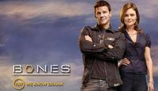
Porque la sindicación no se refiere sólo a cadenas locales, tipo la afiliada de NBC en Nueva York o la de CBS en Toledo (Ohio), sino que también incluye a los canales por cable básico. Éstos tienen ficción de producción propia, pero no la suficiente para confeccionar toda la parrilla semanal. En TNT, por ejemplo, emiten también ‘Embrujadas‘, ‘El mentalista‘ o ‘Ángel‘, USA tiene ‘CSI‘ y AMC, ‘CSI: Miami‘, y podríamos seguir y seguir. En series veteranas y caras, como esas dos de CBS, tener un lucrativo contrato de sindicación puede salvarlas de la cancelación.
Generalmente, las sitcom tienen más fácil acceder a esta segunda vida fuera de las networks porque sus repeticiones tienden a funcionar mejor que las de los dramas, y muchas veces siguen siendo allí de las más vistas, como ocurre con ‘The Big Bang Theory‘ en TBS. Hay canales cuya programación casi completa se basa en reemisiones de series, muchas veces ya con unos cuantos años encima, como TV Land, pero en la sindicación no sólo hay programas “de segunda mano”.
Programación original
Muchas veces, se producen programas directamente para la sindicación porque resultan más baratos que si se orientaran a las networks. Buena parte de los talk shows del daytime están producidos así, de ‘Ellen‘ a ‘LIVE with Kelly‘ y hasta concursos como la versión estadounidense de ‘La ruleta de la fortuna‘. Y desde hace ya varias décadas, no es nada raro que se hagan series que se emiten primero en sindicación, series que, de otro modo, tal vez no hubieran visto nunca la luz.
‘La leyenda del buscador‘ es uno de los últimos ejemplos, que además sigue la tradición de las series salidas de la productora de Sam Raimi, caso de ‘Xena, la princesa guerrera‘, de nacer así. Clásicos de la ciencia ficción como ‘Star Trek: La nueva generacion‘ y ‘Babylon 5‘ se produjeron directamente para su emisión sindicada, y otras encontraron en este mercado una casi inesperada resurrección. ‘Los vigilantes de la playa‘, por ejemplo, debutó originalmente en la NBC en 1989, fue cancelada en su primera temporada y, después, fue revivida siendo producida directamente para la sindicación.
El cambio de Internet
Todo este panorama está empezando a cambiar por el entrada de servicios de vídeo streaming como Hulu, que adquirió los derechos de sindicación de ‘Community’ el pasado mes de diciembre. Esa puerta a las reemisiones vía web representa una oportunidad de ganar dinero de series con bajas audiencias en las networks y que viven casi perennemente al filo de la cancelación. la sindicación de ‘30 Rock‘ en Comedy Central, por ejemplo, puede ser un argumento que incline su futuro más hacia la renovación que la cancelación, y la entrada de Hulu y servicios de vídeo bajo demanda en la compra de derechos de sindicación abre más el panorama televisivo y, lógicamente, lo va a cambiar poco a poco.
En ¡Vaya Tele! | Cómo funciona la televisión americana: cadenas, estudios y productoras
Tue, 28 Feb 2012 08:00:00 GMT
'Pan Am', un bonito viaje sin rumbo ni destino
'Pan Am', un bonito viaje sin rumbo ni destino
Entre todos la mataron y ella sola se murió. ‘Pan Am‘ era una de las ofertas que destacaba en la nueva temporada de las networks, y aun con el pedregoso trayecto que ha recorrido probablemente sea el mejor drama de estreno en la televisión en abierto de Estados Unidos este año. Y aunque estoy completamente enamorado de su ambiente, de las chicas (también del piloto) y de lo que cuenta, no voy a negar que con el tiempo se ha ido desinflando, desperdigando el interés y desaprovechando las bazas con las que contaba. Pero no todo es culpa suya; ABC no terminaba de arriesgarse con ella, y no dio mucha confianza a los creadores de la serie. Las tramas se abrían y no se cerraban, algunas aparecían de la nada… y lo peor de todo es que estaban desordenadas. ¿La causa? La manía que tiene la ABC de alterar el orden de los capítulos de sus series cuando tiene donde elegir. Y claro, eso te puede funcionar en una sitcom, pero en un drama como ‘Pan Am‘ se convierte en un auténtico desastre. Y se nota. Se nota mucho. ‘Pan Am’, una historia de altos y bajos ‘Pan Am’ era la historia de cuatro azafatas y un par de pilotos, algunos más interesantes y otros más cansinos. ¿Y a qué personajes les dieron más cancha? Efectivamente, a los más cansinos. Desde el principio se vio que la serie tenía su debilidad en Laura, fue la protagonista del episodio piloto por encima del resto, y su historia de mosquita muerta que huye hacia una vida en la que pueda sentirse más libre quizá enganchaba a la audiencia. Y lo hizo, pero sólo durante 40 minutos. A la semana siguiente, gran parte de la audiencia ya se había bajado. Y junto a ella, por ser la hermanísima, Kate también obtuvo bastante protagonismo en los primeros episodios. El problema con ella es que, pese a ser un personaje interesante, sus primeras pinceladas en la serie la convirtieron en un personaje odioso, por culpa de los celos hacía Laura. Sólo cuando se metió de lleno en la trama de espionaje dentro de la Guerra Fría empezó a ponerse interesante. De nuevo, cuando ya la audiencia se había bajado definitivamente de la serie. Colette y Maggie, dos grandes desaprovechadas Y sin embargo a las dos mejores de la serie las dejaron a un lado. Por un lado, Maggie como representante de esa fuerza femenina que luchaba por todos los medios dejar el papel aislado de la mujer en la política y defender la igualdad, poniendo toda su confianza en el Presidente Kennedy. Una mujer que piensa, que lucha, se posiciona y no tiene pelos en la lengua a la hora de hablar de ello. Sus discursos de loca indignada fueron lo mejor que vimos de ella, así como sus arrebatos de cría pequeña cuando las cosas no van como a ella le gustaría. Grande. Pero la ídola, la más grande y, curiosamente, la más ignorada, fue la diosa Colette Valois. Su carácter y su historia fueron definitivamente los más interesantes de todos, pero no supieron potenciarlo. Llegó a su máximo en el tercer capítulo, en la visita a Alemania que nos trajo el pasado de la chica casi con un nudito en la garganta. Ahí demostró que su carácter era absolutamente opuesto al de Maggie, sin confiar demasiado en la palabra de un político, ni en que un simple discurso pueda cambiar la situación de todo un país. Si me preguntáis a mí, Colette fue la auténtica protagonista del momento más alto de toda la serie, cuando le cantó a Dean el himno de Alemania frente a toda una multitud. Una trama disfrutable, pero sin ningún orden La estrategia de abrir una trama para luego no volver a tocarla hasta varios episodios después es más antigua que la cueva de Altamira, pero en ‘Pan Am’ se lleva la palma. No sólo dejan tramas sin resolver, completamente abiertas sin ningún tipo de explicación, sino que además involucran a los personajes en otras historias para luego, mágicamente, volver a lo anterior como si nada hubiera pasado (¿alguien sabe dónde se metió Bridget tras su regreso?). En esto tiene un papel importante el desorden con el que fueron emitidos los capítulos, pero sigo sin entender cómo pudieron llegar a plantearse hacer una emisión tan caótica. El 1×13 de la serie es el claro ejemplo de ello, la puntilla definitiva que demuestra que ‘Pan Am’ se ha emitido sin ningún tipo de cuidado en la continuidad argumental. Un insulto al espectador, a la propia serie (no sé realmente de quién es la culpa de todo este guirigay, pero dudo que los creadores hayan optado por emitirla así) y a la simple coherencia que permita engancharse a una serie. ‘Pan am’ ha fallado estrepitosamente en eso, y ahí se le ha ido gran parte de su fuerza. Un cierre fácil para una serie que no volverá El decimocuarto capítulo es casi un episodio de gracia, que ABC concedió simplemente para no dejar la serie totalmente abierta. Entiendo que los responsables quisieran cuidarse en salud y no dejarlo todo absolutamente cerrado por si obtiene el indulto en mayo (que va a ser que no), pero en el camino dejaron un capítulo a medias de todo, que no emociona ni sorprende, y que dista muy poco de la mediocridad que ha caracterizado a casi toda la temporada. Sea de quien sea la culpa, ‘Pan Am’ se quedará como una gran promesa que no se cumplió, de cómo no hay que hacer las cosas si quieres que tu producto triunfe. Gracias por volar con Pan Am, y hasta siempre. En ¡Vaya Tele! | ‘Pan Am’, elegancia, estilo e historias personales de altos vuelos

Entre todos la mataron y ella sola se murió. ‘Pan Am‘ era una de las ofertas que destacaba en la nueva temporada de las networks, y aun con el pedregoso trayecto que ha recorrido probablemente sea el mejor drama de estreno en la televisión en abierto de Estados Unidos este año. Y aunque estoy completamente enamorado de su ambiente, de las chicas (también del piloto) y de lo que cuenta, no voy a negar que con el tiempo se ha ido desinflando, desperdigando el interés y desaprovechando las bazas con las que contaba.
Pero no todo es culpa suya; ABC no terminaba de arriesgarse con ella, y no dio mucha confianza a los creadores de la serie. Las tramas se abrían y no se cerraban, algunas aparecían de la nada… y lo peor de todo es que estaban desordenadas. ¿La causa? La manía que tiene la ABC de alterar el orden de los capítulos de sus series cuando tiene donde elegir. Y claro, eso te puede funcionar en una sitcom, pero en un drama como ‘Pan Am‘ se convierte en un auténtico desastre. Y se nota. Se nota mucho.
‘Pan Am’, una historia de altos y bajos
‘Pan Am’ era la historia de cuatro azafatas y un par de pilotos, algunos más interesantes y otros más cansinos. ¿Y a qué personajes les dieron más cancha? Efectivamente, a los más cansinos. Desde el principio se vio que la serie tenía su debilidad en Laura, fue la protagonista del episodio piloto por encima del resto, y su historia de mosquita muerta que huye hacia una vida en la que pueda sentirse más libre quizá enganchaba a la audiencia. Y lo hizo, pero sólo durante 40 minutos. A la semana siguiente, gran parte de la audiencia ya se había bajado.
Y junto a ella, por ser la hermanísima, Kate también obtuvo bastante protagonismo en los primeros episodios. El problema con ella es que, pese a ser un personaje interesante, sus primeras pinceladas en la serie la convirtieron en un personaje odioso, por culpa de los celos hacía Laura. Sólo cuando se metió de lleno en la trama de espionaje dentro de la Guerra Fría empezó a ponerse interesante. De nuevo, cuando ya la audiencia se había bajado definitivamente de la serie.
Colette y Maggie, dos grandes desaprovechadas
Y sin embargo a las dos mejores de la serie las dejaron a un lado. Por un lado, Maggie como representante de esa fuerza femenina que luchaba por todos los medios dejar el papel aislado de la mujer en la política y defender la igualdad, poniendo toda su confianza en el Presidente Kennedy. Una mujer que piensa, que lucha, se posiciona y no tiene pelos en la lengua a la hora de hablar de ello. Sus discursos de loca indignada fueron lo mejor que vimos de ella, así como sus arrebatos de cría pequeña cuando las cosas no van como a ella le gustaría. Grande.
Pero la ídola, la más grande y, curiosamente, la más ignorada, fue la diosa Colette Valois. Su carácter y su historia fueron definitivamente los más interesantes de todos, pero no supieron potenciarlo. Llegó a su máximo en el tercer capítulo, en la visita a Alemania que nos trajo el pasado de la chica casi con un nudito en la garganta. Ahí demostró que su carácter era absolutamente opuesto al de Maggie, sin confiar demasiado en la palabra de un político, ni en que un simple discurso pueda cambiar la situación de todo un país.
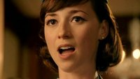
Si me preguntáis a mí, Colette fue la auténtica protagonista del momento más alto de toda la serie, cuando le cantó a Dean el himno de Alemania frente a toda una multitud.
Una trama disfrutable, pero sin ningún orden
La estrategia de abrir una trama para luego no volver a tocarla hasta varios episodios después es más antigua que la cueva de Altamira, pero en ‘Pan Am’ se lleva la palma. No sólo dejan tramas sin resolver, completamente abiertas sin ningún tipo de explicación, sino que además involucran a los personajes en otras historias para luego, mágicamente, volver a lo anterior como si nada hubiera pasado (¿alguien sabe dónde se metió Bridget tras su regreso?). En esto tiene un papel importante el desorden con el que fueron emitidos los capítulos, pero sigo sin entender cómo pudieron llegar a plantearse hacer una emisión tan caótica.
El 1×13 de la serie es el claro ejemplo de ello, la puntilla definitiva que demuestra que ‘Pan Am’ se ha emitido sin ningún tipo de cuidado en la continuidad argumental. Un insulto al espectador, a la propia serie (no sé realmente de quién es la culpa de todo este guirigay, pero dudo que los creadores hayan optado por emitirla así) y a la simple coherencia que permita engancharse a una serie. ‘Pan am’ ha fallado estrepitosamente en eso, y ahí se le ha ido gran parte de su fuerza.
Un cierre fácil para una serie que no volverá
 El decimocuarto capítulo es casi un episodio de gracia, que ABC concedió simplemente para no dejar la serie totalmente abierta. Entiendo que los responsables quisieran cuidarse en salud y no dejarlo todo absolutamente cerrado por si obtiene el indulto en mayo (que va a ser que no), pero en el camino dejaron un capítulo a medias de todo, que no emociona ni sorprende, y que dista muy poco de la mediocridad que ha caracterizado a casi toda la temporada. Sea de quien sea la culpa, ‘Pan Am’ se quedará como una gran promesa que no se cumplió, de cómo no hay que hacer las cosas si quieres que tu producto triunfe. Gracias por volar con Pan Am, y hasta siempre.
El decimocuarto capítulo es casi un episodio de gracia, que ABC concedió simplemente para no dejar la serie totalmente abierta. Entiendo que los responsables quisieran cuidarse en salud y no dejarlo todo absolutamente cerrado por si obtiene el indulto en mayo (que va a ser que no), pero en el camino dejaron un capítulo a medias de todo, que no emociona ni sorprende, y que dista muy poco de la mediocridad que ha caracterizado a casi toda la temporada. Sea de quien sea la culpa, ‘Pan Am’ se quedará como una gran promesa que no se cumplió, de cómo no hay que hacer las cosas si quieres que tu producto triunfe. Gracias por volar con Pan Am, y hasta siempre.
En ¡Vaya Tele! | ‘Pan Am’, elegancia, estilo e historias personales de altos vuelos
Tue, 28 Feb 2012 06:00:00 GMT
Cinco razones para ver 'Louie'
Cinco razones para ver 'Louie'
Este martes muchos estamos de enhorabuena, pues Canal + estrenará ‘Louie’ a las 20:50. ‘Louie’ es una serie cómica escrita, dirigida, producida e interpretada por un monologuista estadounidense que no deja indiferente a nadie que oiga uno de sus chistes: Louis C.K. La serie consta, por el momento, de dos temporadas, y empezó a emitirse en FX en junio de 2010. A Louis Szekely (su verdadero nombre) le pudimos ver en la HBO protagonizando ‘Lucky Louie’ pero la carrera de este cómico se remonta a participaciones en ‘Saturday Nignt Live‘, ‘Parks and Recreation‘ o ‘El show de David Letterman’. Es cierto que el humor que pone sobre la mesa es altamente corrosivo y eso tal vez imposibilita que pueda ser del agrado de todos los públicos, pero, si no lo conocéis, yo os recomendaría que le dierais una oportunidad. Por ello, ahí va este “Cinco razones” en el que, eso sí, os podéis encontrar algún spoiler. 1. Políticamente incorrecto En ‘Louie’ el humor es bruto, irreverente e incluso algunas veces un tanto cruel. Louie tan pronto arremete contra los políticos como sufre una violación por parte de su dentista. La fiereza con la que, en ocasiones, golpea al espectador, consigue hacernos reír, impactarnos, pero también darnos cuenta de que el mundo no es un camino de rosas, entre otras cosas, porque nosotros mismos no lo permitimos. Muchas veces, bajo la máscara de la comedia se oculta la verdad más desgarradora, que no puede ser mostrada sino con una pátina de humor. 2. El mundo del espectáculo La estructura de los capítulos de ‘Louie’ no es, ni mucho menos, tradicional. Las tramas ordinarias se ven salpicadas con momentos de monólogo en los que el personaje de Louie “hace” de sí mismo más que nunca, subido a un escenario y ejerciendo su profesión. Es un recurso que ya vimos, por ejemplo, en ‘Seinfield‘. El mundo de los pequeños comediantes que se buscan la vida hoy en un pub de esta ciudad y mañana en un teatro de aquel pueblo contrasta con la seguridad en sí mismos y la mirada censuradora y desde arriba que demuestran sobre el escenario. 3. El perdedor que todos llevamos dentro Si Louie C.K. se permite reírse de todo el mundo es porque al primero que coloca en el ojo del huracán es a sí mismo. Louie es brillante e irónico cuando está en el escenario, pero, cuando se baja de él, es un pobre hombre que inventa mil argucias para tener sexo, que sufre la crueldad de su madre o que esconde el helado a sus hijas para no tener que compartirlo. Louie resulta humano y reconocible, sufre las pequeñas miserias que todos padecemos y las muestra sin complejos, por eso es un personaje tan bien hecho. 4. Secundarios de lujo Uno de los elementos que funcionan como acicate en cada nuevo capítulo es la participación de auténticas estrellas del cine o la televisión como personajes secundarios y, sobre todo, el giro que ‘Louie’ va a darles para conseguir que nos sorprendan con el tipo de personaje que interpretarán. En muchas ocasiones, están presentados como una caricaturización de ellos mismos. Así, Ricky Gervais es un doctor muy “bromista”, Joan Rivers es una cómica que aconseja a Louie y que, digámoslo así, tiene un acercamiento hacia él o David Patick Kelly se muestra como un sicoanalista con unas teorías bastantes especiales. 5. (Sur)real como la vida misma Las tramas que se plantean en ‘Louie’ siempre son cotidianas y totalmente reconocibles: tener una cita, ir al dentista, llevar a las niñas al colegio… La comedia de lo ordinario es algo que también hemos visto en series como ‘Curb your entushiasm‘. Lo divertido de esta propuesta es ver cómo los personajes son capaces de transformar esta situaciones “normales” en auténticas aventuras. Además, en ‘Louie’ hay una querencia especial por ciertos giros surrealistas: Louie va caminando y, sin previo aviso, es testigo de un suicido, su cita se convierte en una sesión de masoquismo o su hermana tiene que ser llevada al hospital con urgencia para descubrir que sólo tenía gases. ‘Louie’ logra soprender con sus planteamientos, sus giros y sus desenlaces. En ¡Vaya Tele | FX renueva ‘Wilfred’, ‘Louie’ y ‘It’s Always Sunny in Philadelphia’
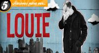
Este martes muchos estamos de enhorabuena, pues Canal + estrenará ‘Louie’ a las 20:50. ‘Louie’ es una serie cómica escrita, dirigida, producida e interpretada por un monologuista estadounidense que no deja indiferente a nadie que oiga uno de sus chistes: Louis C.K. La serie consta, por el momento, de dos temporadas, y empezó a emitirse en FX en junio de 2010.
A Louis Szekely (su verdadero nombre) le pudimos ver en la HBO protagonizando ‘Lucky Louie’ pero la carrera de este cómico se remonta a participaciones en ‘Saturday Nignt Live‘, ‘Parks and Recreation‘ o ‘El show de David Letterman’. Es cierto que el humor que pone sobre la mesa es altamente corrosivo y eso tal vez imposibilita que pueda ser del agrado de todos los públicos, pero, si no lo conocéis, yo os recomendaría que le dierais una oportunidad. Por ello, ahí va este “Cinco razones” en el que, eso sí, os podéis encontrar algún spoiler.
1. Políticamente incorrecto
En ‘Louie’ el humor es bruto, irreverente e incluso algunas veces un tanto cruel. Louie tan pronto arremete contra los políticos como sufre una violación por parte de su dentista. La fiereza con la que, en ocasiones, golpea al espectador, consigue hacernos reír, impactarnos, pero también darnos cuenta de que el mundo no es un camino de rosas, entre otras cosas, porque nosotros mismos no lo permitimos. Muchas veces, bajo la máscara de la comedia se oculta la verdad más desgarradora, que no puede ser mostrada sino con una pátina de humor.
2. El mundo del espectáculo
La estructura de los capítulos de ‘Louie’ no es, ni mucho menos, tradicional. Las tramas ordinarias se ven salpicadas con momentos de monólogo en los que el personaje de Louie “hace” de sí mismo más que nunca, subido a un escenario y ejerciendo su profesión. Es un recurso que ya vimos, por ejemplo, en ‘Seinfield‘. El mundo de los pequeños comediantes que se buscan la vida hoy en un pub de esta ciudad y mañana en un teatro de aquel pueblo contrasta con la seguridad en sí mismos y la mirada censuradora y desde arriba que demuestran sobre el escenario.
3. El perdedor que todos llevamos dentro
Si Louie C.K. se permite reírse de todo el mundo es porque al primero que coloca en el ojo del huracán es a sí mismo. Louie es brillante e irónico cuando está en el escenario, pero, cuando se baja de él, es un pobre hombre que inventa mil argucias para tener sexo, que sufre la crueldad de su madre o que esconde el helado a sus hijas para no tener que compartirlo. Louie resulta humano y reconocible, sufre las pequeñas miserias que todos padecemos y las muestra sin complejos, por eso es un personaje tan bien hecho.
4. Secundarios de lujo
Uno de los elementos que funcionan como acicate en cada nuevo capítulo es la participación de auténticas estrellas del cine o la televisión como personajes secundarios y, sobre todo, el giro que ‘Louie’ va a darles para conseguir que nos sorprendan con el tipo de personaje que interpretarán. En muchas ocasiones, están presentados como una caricaturización de ellos mismos. Así, Ricky Gervais es un doctor muy “bromista”, Joan Rivers es una cómica que aconseja a Louie y que, digámoslo así, tiene un acercamiento hacia él o David Patick Kelly se muestra como un sicoanalista con unas teorías bastantes especiales.
5. (Sur)real como la vida misma
Las tramas que se plantean en ‘Louie’ siempre son cotidianas y totalmente reconocibles: tener una cita, ir al dentista, llevar a las niñas al colegio… La comedia de lo ordinario es algo que también hemos visto en series como ‘Curb your entushiasm‘. Lo divertido de esta propuesta es ver cómo los personajes son capaces de transformar esta situaciones “normales” en auténticas aventuras. Además, en ‘Louie’ hay una querencia especial por ciertos giros surrealistas: Louie va caminando y, sin previo aviso, es testigo de un suicido, su cita se convierte en una sesión de masoquismo o su hermana tiene que ser llevada al hospital con urgencia para descubrir que sólo tenía gases. ‘Louie’ logra soprender con sus planteamientos, sus giros y sus desenlaces.
En ¡Vaya Tele | FX renueva ‘Wilfred’, ‘Louie’ y ‘It’s Always Sunny in Philadelphia’
Mon, 27 Feb 2012 18:00:00 GMT
'Fringe' y la vida en ámbar
'Fringe' y la vida en ámbar
El pasado viernes FOX emitió el winter finale de ‘Fringe‘ poniendo fin al segundo acto de la cuarta temporada de la serie. La serie se despidió con uno de esos episodios de revelaciones que llenan huecos en la extensa mitología de la serie. Dejándonos, a su vez, quebraderos de cabeza a los que no podremos añadir pistas nuevas hasta dentro de cuatro semanas, cuando la temporada vuelva con una última tanda de ocho episodios. Con ‘Fringe‘ pasa una cosa curiosa y es que cada temporada divide más y más a los fans de la serie. Y ya no hablamos del típico debate sobre “procedimental” vs. “seriado” (cuando desde el principio quedó claro el caracter autoconclusivo de la serie) sino más bien a la naturaleza de los giros argumentales, de los pasos en la trama general de la serie y lo que ello implica. Cada temporada de ‘Fringe’ sigue unas líneas maestras distintas que nos acercan a resolver diferentes puntos de la mitología de la serie. Sobre todo lo que concierne al personaje sobre el que parece girar todo: Peter Bishop. Peter, Jones y la conspiración en la sombra En esta cuarta temporada lo que parece haber roto la paciencia de algunos es todo lo que supuso la existencia de la línea temporal ámbar, en la cual Peter Bishop murió al no ser rescatado del lago en aquella noche de 1985. En un mundo sin Peter los destinos tanto del universo “prime” (como llamo al principal de la serie) como los del alternativo fueron distintos. Todo es similar pero con diferencias en algunos casos sutiles (cómo se montan los departamentos Fringe de cada universo) y en otros más sustanciales (lo referido a la infancia/adolescencia de Oliva Dunham). En el primer acto exploramos esta nueva línea temporal y atestiguamos el regreso de Peter Bishop, quien intenta volver a su línea temporal original. En enero se emitió el fall finale de ‘Fringe’ en el que veíamos como la guerra entre los dos universos parece estar siendo aprovechada (y manejada en cierto sentido) por un tercer jugador que maneja la tecnología para hacer cambiaformas avanzada. En ese episodio descubriríamos que es nada más ni nada menos que David Robert Jones, muerto en la línea temporal original. ¿Y después? pues salvo por un par de episodios más centrados en el caso de la semana ‘Fringe’ ha empezado a avanzar con la trama principal de la serie como si no hubiera mañana. Con el destino de Peter, Olivia y los tejemanejes de Jones como motor en este segundo acto que nos llevará al que promete ser un tramo final de infarto. Y esto es así quizás ante la inseguridad de si la serie sobrevivirá a esta temporada, por lo menos las audiencias no son nada tranquilizadoras. ‘Fringe’ ¿camino hacia su final? Quizás año tras año, a estas alturas de la temporada, nos hacemos temerosos la misma pregunta: ¿Se está acercando ‘Fringe’ a su final? Me refiero al final de su historia, de lo que Orci y Kurtzman querían contar en su biblia, no a su final por cancelación. La verdad es que tras todo lo que hemos visto en estos últimos siete episodios (incluyendo la revelación del origen de los Observadores) y cómo todo parece indicar que nos acercamos a un momento decisivo similar al final de la tercera temporada En este sentido me hubiera gustado que Peter hubiera aparecido más tarde en la temporada, retrasando un poco la trama general mientras exploramos más tranquilamente la línea ámbar sin él. Yo disfruto mucho con los episodios autoconclusivos y personalmente no me hubiera importado más episodios con la dinámica entre Olivia, Lincoln, Walter y Astrid. Lo que sí que he echado de menos son más episodios en el universo alternativo. Creo que la dinámica de la temporada pasada con casos de ambos universos aportaba un toque bastante fresco e interesante. Vale que lo importante es lo que pasa en el Universo Prime, pero que solo hayamos visto un par de veces a los alternativos incluyendo un episodio bastante bueno envolviendo a Astrid (ya era hora que la(s) conozcamos un poco mejor) me parece mal. Independientemente de esto la verdad es que yo sigo disfrutando bastante de ‘Fringe’, y esta cuarta temporada me está pareciendo muy interesante. El 23 de marzo volverá la temporada en un último tramo que promete dejarnos con la boca abierta mientras se va resolviendo parte (o todo) de lo planteado hasta el momento. En ¡Vaya Tele! | Cinco episodios de ‘Fringe’ que le deben mucho a ‘Expediente-X’
El pasado viernes FOX emitió el winter finale de ‘Fringe‘ poniendo fin al segundo acto de la cuarta temporada de la serie. La serie se despidió con uno de esos episodios de revelaciones que llenan huecos en la extensa mitología de la serie. Dejándonos, a su vez, quebraderos de cabeza a los que no podremos añadir pistas nuevas hasta dentro de cuatro semanas, cuando la temporada vuelva con una última tanda de ocho episodios.
Con ‘Fringe‘ pasa una cosa curiosa y es que cada temporada divide más y más a los fans de la serie. Y ya no hablamos del típico debate sobre “procedimental” vs. “seriado” (cuando desde el principio quedó claro el caracter autoconclusivo de la serie) sino más bien a la naturaleza de los giros argumentales, de los pasos en la trama general de la serie y lo que ello implica. Cada temporada de ‘Fringe’ sigue unas líneas maestras distintas que nos acercan a resolver diferentes puntos de la mitología de la serie. Sobre todo lo que concierne al personaje sobre el que parece girar todo: Peter Bishop.
Peter, Jones y la conspiración en la sombra
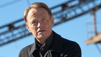
En esta cuarta temporada lo que parece haber roto la paciencia de algunos es todo lo que supuso la existencia de la línea temporal ámbar, en la cual Peter Bishop murió al no ser rescatado del lago en aquella noche de 1985. En un mundo sin Peter los destinos tanto del universo “prime” (como llamo al principal de la serie) como los del alternativo fueron distintos. Todo es similar pero con diferencias en algunos casos sutiles (cómo se montan los departamentos Fringe de cada universo) y en otros más sustanciales (lo referido a la infancia/adolescencia de Oliva Dunham).
En el primer acto exploramos esta nueva línea temporal y atestiguamos el regreso de Peter Bishop, quien intenta volver a su línea temporal original. En enero se emitió el fall finale de ‘Fringe’ en el que veíamos como la guerra entre los dos universos parece estar siendo aprovechada (y manejada en cierto sentido) por un tercer jugador que maneja la tecnología para hacer cambiaformas avanzada. En ese episodio descubriríamos que es nada más ni nada menos que David Robert Jones, muerto en la línea temporal original.
¿Y después? pues salvo por un par de episodios más centrados en el caso de la semana ‘Fringe’ ha empezado a avanzar con la trama principal de la serie como si no hubiera mañana. Con el destino de Peter, Olivia y los tejemanejes de Jones como motor en este segundo acto que nos llevará al que promete ser un tramo final de infarto. Y esto es así quizás ante la inseguridad de si la serie sobrevivirá a esta temporada, por lo menos las audiencias no son nada tranquilizadoras.
‘Fringe’ ¿camino hacia su final?
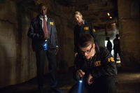
Quizás año tras año, a estas alturas de la temporada, nos hacemos temerosos la misma pregunta: ¿Se está acercando ‘Fringe’ a su final? Me refiero al final de su historia, de lo que Orci y Kurtzman querían contar en su biblia, no a su final por cancelación. La verdad es que tras todo lo que hemos visto en estos últimos siete episodios (incluyendo la revelación del origen de los Observadores) y cómo todo parece indicar que nos acercamos a un momento decisivo similar al final de la tercera temporada
En este sentido me hubiera gustado que Peter hubiera aparecido más tarde en la temporada, retrasando un poco la trama general mientras exploramos más tranquilamente la línea ámbar sin él. Yo disfruto mucho con los episodios autoconclusivos y personalmente no me hubiera importado más episodios con la dinámica entre Olivia, Lincoln, Walter y Astrid. Lo que sí que he echado de menos son más episodios en el universo alternativo. Creo que la dinámica de la temporada pasada con casos de ambos universos aportaba un toque bastante fresco e interesante.
Vale que lo importante es lo que pasa en el Universo Prime, pero que solo hayamos visto un par de veces a los alternativos incluyendo un episodio bastante bueno envolviendo a Astrid (ya era hora que la(s) conozcamos un poco mejor) me parece mal. Independientemente de esto la verdad es que yo sigo disfrutando bastante de ‘Fringe’, y esta cuarta temporada me está pareciendo muy interesante. El 23 de marzo volverá la temporada en un último tramo que promete dejarnos con la boca abierta mientras se va resolviendo parte (o todo) de lo planteado hasta el momento.
En ¡Vaya Tele! | Cinco episodios de ‘Fringe’ que le deben mucho a ‘Expediente-X’
Mon, 27 Feb 2012 12:30:00 GMT
LaSexta se queda con el "hermano mayor" de Cuatro
LaSexta se queda con el "hermano mayor" de Cuatro
Nuevo capítulo del trasvase entre cadenas de profesionales de éxito; esta vez no se trata de ninguna Pilar Rubio, y probablemente no habrán pagado un millón de euros por él, pero seguro que Cuatro lamenta su pérdida y laSexta no puede estar más emocionada por poder revitalizar alguna de sus noches. Se trata de Pedro García Aguado, ex-waterpolista y ex-adicto al alcohol y a la cocaína, que desde hace unos años presenta con éxito el coach ‘Hermano Mayor’ en Cuatro. La clave del éxito del programa, más allá de las posibilidades de ayuda del presentador (de las que no dudo, ojo), se basa en enseñar las imágenes más duras que uno se pueda imaginar en una familia, entre los padres y alguno de los hijos. Hay que tener muchas agallas para ver ‘Hermano Mayor’ y mucha confianza en el formato para no acabar creyendo que está todo guionizado y en realidad se trata de actores. El programa no es santo de mi devoción, y salvo en contadas ocasiones que me lo he encontrado haciendo zapping, no me he parado a verlo. Eso sí, parece que detrás lleva a una legión de seguidores, y en su nueva temporada (actualmente en emisión los viernes en Cuatro) llega a congregar más de dos millones y medio de espectadores, plantando cara a las ofertas de las principales generalistas. Y en este éxito, Pedro García Aguado tiene buena parte de la “culpa”. En su nueva casa, que pronto será también Antena 3, Pedro seguirá haciendo lo que hasta ahora, con “nuevos proyectos, nuevas ideas, aires nuevos“. Es decir, el mismo caramelo con distinto envoltorio. Queda por saber quién ocupará en Cuatro el lugar de Pedro García Aguado al frente de ‘Hermano Mayor’, y cómo les resultará el cambio en términos de audiencia. Quedan siete entregas por emitirse de la nueva temporada en la segunda cadena de Mediaset, y el propio presentador ha comentado en su Twitter que el programa no acabará aquí, y que llevan tiempo buscándole un sustituto. A ver a quién sacan. Vía | Fórmula TV En ¡Vaya Tele! | ‘Hermano mayor’ se queda a medias
Nuevo capítulo del trasvase entre cadenas de profesionales de éxito; esta vez no se trata de ninguna Pilar Rubio, y probablemente no habrán pagado un millón de euros por él, pero seguro que Cuatro lamenta su pérdida y laSexta no puede estar más emocionada por poder revitalizar alguna de sus noches. Se trata de Pedro García Aguado, ex-waterpolista y ex-adicto al alcohol y a la cocaína, que desde hace unos años presenta con éxito el coach ‘Hermano Mayor’ en Cuatro.
La clave del éxito del programa, más allá de las posibilidades de ayuda del presentador (de las que no dudo, ojo), se basa en enseñar las imágenes más duras que uno se pueda imaginar en una familia, entre los padres y alguno de los hijos. Hay que tener muchas agallas para ver ‘Hermano Mayor’ y mucha confianza en el formato para no acabar creyendo que está todo guionizado y en realidad se trata de actores. El programa no es santo de mi devoción, y salvo en contadas ocasiones que me lo he encontrado haciendo zapping, no me he parado a verlo.
Eso sí, parece que detrás lleva a una legión de seguidores, y en su nueva temporada (actualmente en emisión los viernes en Cuatro) llega a congregar más de dos millones y medio de espectadores, plantando cara a las ofertas de las principales generalistas. Y en este éxito, Pedro García Aguado tiene buena parte de la “culpa”. En su nueva casa, que pronto será también Antena 3, Pedro seguirá haciendo lo que hasta ahora, con “nuevos proyectos, nuevas ideas, aires nuevos“. Es decir, el mismo caramelo con distinto envoltorio.
Queda por saber quién ocupará en Cuatro el lugar de Pedro García Aguado al frente de ‘Hermano Mayor’, y cómo les resultará el cambio en términos de audiencia. Quedan siete entregas por emitirse de la nueva temporada en la segunda cadena de Mediaset, y el propio presentador ha comentado en su Twitter que el programa no acabará aquí, y que llevan tiempo buscándole un sustituto. A ver a quién sacan.
Vía | Fórmula TV
En ¡Vaya Tele! | ‘Hermano mayor’ se queda a medias
Mon, 27 Feb 2012 07:57:51 GMT
Sugerencias semanales | Del 27 de febrero al 4 de marzo
Sugerencias semanales | Del 27 de febrero al 4 de marzo
Como cada lunes, toca echarle un ojo a las parrillas televisivas para ver qué nos depara la semana. Algún estreno de midseason en Estados Unidos y unas descafeinadas programaciones de las cadenas españolas es el resumen de lo que toca estos días. Y mucho, mucho cine. Se nota la resaca de los Oscars porque hoy lunes el séptimo arte es la principal apuesta de las televisiones y habrá una amplia oferta en la que elegir. La 1 propone ‘Lolita’ con Jeremy Irons, mientras que Nitro apuesta fuerte con ‘No es país para viejos’ de los hermanos Coen, la cinta por la que nuestro Javier Bardem ganó el Oscar. Y muy a tener en cuenta la opción de La 2, la maravillosa ‘Cinema Paradiso’. Pero si no tenéis ganas de ver películas, entonces tendréis que decantaros entre el divertidamente trash ‘¿Quién quiere casarse con mi hijo?’ o el especial de prime time de ‘El Millonario’ en laSexta. El martes hay cambio en Telecinco, pues han decidido retrasar hasta las once de la noche el inicio de emisión de ‘La Fuga’, que se verá arropada por un reubicado ‘Gran Hermano 12+1: última hora’. ¿Beneficiará el cambio a la serie o, como suele pasar en estos casos, el retraso será su puntilla definitiva? Luchará contra ‘Toledo’ en Antena 3 y ‘Terra Nova’ que no está yendo nada mal en Cuatro. Otra guerra que sigue al rojo vivo es la de los miércoles, donde continúan sus emisiones ‘Con el culo al aire’ y ‘Tú sí que vales’. Si queréis huir de estas opciones, podéis echarle un ojo a la “noche de chicas” de FDF con ‘Terapia de Choque’ y ‘The Closer’ o apuntaros a ‘El club de la lucha’ en Neox. Acercándonos al fin de semana, ‘La Maldición de Dark Lake’ llegará a su fin en Antena 3 frente a una nueva gala de ‘Gran Hermano’ mientras La 1 se resiste a lanzar nuevas series y dedica la noche al cine clásico. Y en Cuatro, ‘House’ pasa consulta en su última temporada. No quisiera terminar las sugerencias sin recordaros que los sábados está emitiendo Neox la serie ‘Merlín’ y que ‘El Cubo’ se está postulando como una opción muy a tener en cuenta en el access prime time, tanto por la simpatía de Raquel Sánchez Silva como por lo dinámico del formato. Y en Estados Unidos mientras algunas series sufren parones, como es el caso de ‘Fringe’, a otras les toca el turno de estrenarse. El jueves es el día en que la NBC presenta al público ‘Awake’, mientras que la ABC ofrecerá el domingo el primer episodio de ‘GCB’ en el hueco dejado por ‘Pan Am’. Hay muchas ganas de ver ese nuevo loco vecindario en el que hará maldades Kristin Chenoweth. En ¡Vaya Tele! | Sugerencias semanales
Como cada lunes, toca echarle un ojo a las parrillas televisivas para ver qué nos depara la semana. Algún estreno de midseason en Estados Unidos y unas descafeinadas programaciones de las cadenas españolas es el resumen de lo que toca estos días. Y mucho, mucho cine.
Se nota la resaca de los Oscars porque hoy lunes el séptimo arte es la principal apuesta de las televisiones y habrá una amplia oferta en la que elegir. La 1 propone ‘Lolita’ con Jeremy Irons, mientras que Nitro apuesta fuerte con ‘No es país para viejos’ de los hermanos Coen, la cinta por la que nuestro Javier Bardem ganó el Oscar. Y muy a tener en cuenta la opción de La 2, la maravillosa ‘Cinema Paradiso’. Pero si no tenéis ganas de ver películas, entonces tendréis que decantaros entre el divertidamente trash ‘¿Quién quiere casarse con mi hijo?’ o el especial de prime time de ‘El Millonario’ en laSexta.
El martes hay cambio en Telecinco, pues han decidido retrasar hasta las once de la noche el inicio de emisión de ‘La Fuga’, que se verá arropada por un reubicado ‘Gran Hermano 12+1: última hora’. ¿Beneficiará el cambio a la serie o, como suele pasar en estos casos, el retraso será su puntilla definitiva? Luchará contra ‘Toledo’ en Antena 3 y ‘Terra Nova’ que no está yendo nada mal en Cuatro.
Otra guerra que sigue al rojo vivo es la de los miércoles, donde continúan sus emisiones ‘Con el culo al aire’ y ‘Tú sí que vales’. Si queréis huir de estas opciones, podéis echarle un ojo a la “noche de chicas” de FDF con ‘Terapia de Choque’ y ‘The Closer’ o apuntaros a ‘El club de la lucha’ en Neox. Acercándonos al fin de semana, ‘La Maldición de Dark Lake’ llegará a su fin en Antena 3 frente a una nueva gala de ‘Gran Hermano’ mientras La 1 se resiste a lanzar nuevas series y dedica la noche al cine clásico. Y en Cuatro, ‘House’ pasa consulta en su última temporada.
No quisiera terminar las sugerencias sin recordaros que los sábados está emitiendo Neox la serie ‘Merlín’ y que ‘El Cubo’ se está postulando como una opción muy a tener en cuenta en el access prime time, tanto por la simpatía de Raquel Sánchez Silva como por lo dinámico del formato.
Y en Estados Unidos mientras algunas series sufren parones, como es el caso de ‘Fringe’, a otras les toca el turno de estrenarse. El jueves es el día en que la NBC presenta al público ‘Awake’, mientras que la ABC ofrecerá el domingo el primer episodio de ‘GCB’ en el hueco dejado por ‘Pan Am’. Hay muchas ganas de ver ese nuevo loco vecindario en el que hará maldades Kristin Chenoweth.
En ¡Vaya Tele! | Sugerencias semanales
Sun, 26 Feb 2012 12:30:54 GMT
'Los autos locos', Nostalgia TV
'Los autos locos', Nostalgia TV
Hoy entramos en modo nostálgico con una de las joyas de la animación infantil. Esa animación original y única que se hacía en las primeras décadas de la televisión y firmada por la inigualable factoría de Hanna-Barbera. Si hay algo propio del mundo de la animación infantil es un perro que hable, pero si además no tiene raza definida y se ríe de una forma muy especial, como jadeando, seguro que sabemos de quién hablamos. Sí, es Patán, ese extraño perro cuyo personaje se ha intentado copiar (o al menos inspirar) múltiples veces a lo largo de la historia de la animación moderna con un éxito muy dispar. El personaje de Pierre Nodoyuna era la otra mitad del dúo propio de la serie y si a esto añadimos toques de juego malvado pero sano en carreras de coches, sólo podemos estar hablando de nuestro recuerdo de este domingo: ‘Los autos locos’. Un clásico de la animación con todos los buenos ingredientes‘Los autos locos‘ es una serie tan mítica y tan bien construida que, incluso a día de hoy, no pasa de moda. Entretiene a niños por su excentricidades y a los adultos nos sigue conquistando con una buena dosis de nostalgia. Propia de los bloques de animación de los sábados por la mañana en las networks estadounidenses y en las españolas, ‘Los autos locos’ destacaban por ser, además de originales, un buen equipo de personajes. Hasta 23 personajes habituales llegó a tener la serie, siendo Patán y Nodoyuna el buque insignia de todo el cuadro. La trama era sencilla: 11 coches de carreras rodando de rallye en rallye con un objetivo final: resultar ganador al título del piloto más loco del mundo. Una mítica de las redifusiones en bloques infantiles y canales temáticos del género durante décadas e incluso hoy en día, ‘Los autos locos’ giraba en torno a estos coches de competición, muchos de ellos conducidos por parejas. Bólidos como El Compact Pussycat, El Super Perrari, El Alambique Veloz o El Troncoswagen darían cada uno para una serie propia. Puntos de encuentro en la animación vintage Si hay una cosa que me guste de todo este mundo de animación vintage, es que existen un bastantes puntos de encuentro entre series de tramas diferentes pero de épocas similares. En el caso de ‘Los autos locos’, las maldades de Pierre Nodoyuna y sus planes para resultar siempre victorioso estaban centradas en ver como sus competidores perdían. Para ello se las ingeniaba con pinchos, clavos, troncos de madera o cualquier líquido resbaladizo. Sin embargo, la gran mayoría de episodios contenían la moraleja de que no el juego sucio resulta siempre en la victoria. Pierre Nodoyuna no ganaba nunca, y muchos de los planes que utilizaba para quitarse del medio al contrario eran muy parecidos a los del mítico Correcaminos. El guionista entre ambas ficciones era el mismo: Mike Maltese. Los Hermanos Macana eran otros dos personajes de la serie. Competían con el Rocomóvil, un pedrusco enorme por ruedas, cuyo motor a veces estaba ocupado por un animal, guardaba mucha relación ficticia con el mundo de ‘Los Picapiedra’, pero ambos eran trogoditas cubiertos casi enteros con pelo, un estilo precursor del original Tío Cosa de ‘La familia Addams’. La película ‘La carrera del siglo‘ protagonizada por Jack Lemmon y Tony Curtis en 1965 sirvió de inspiración para la creación de la serie. Pese a ser una producción única de 17 episodios y durar dos años en antena en la CBS, los personajes eran tan míticos que dieron para varios spin off y continuaciones: Penélope Glamour en ‘Los peligros de Penélope Glamour’ y ‘El escuadrón diabólico’ o ‘La carrera espacial de Yogi’ en donde Pierre Nodoyuna y Patán volvían de nuevo a la pequeña pantalla. Ficha Técnica: Los Autos Locos
Título Original: Wacky Races
Género: Infantil
Cadena: CBS (1968-1970)
Disponibilidad DVD: Ninguna
En ¡Vaya Tele! | Nostalgia TV
Hoy entramos en modo nostálgico con una de las joyas de la animación infantil. Esa animación original y única que se hacía en las primeras décadas de la televisión y firmada por la inigualable factoría de Hanna-Barbera. Si hay algo propio del mundo de la animación infantil es un perro que hable, pero si además no tiene raza definida y se ríe de una forma muy especial, como jadeando, seguro que sabemos de quién hablamos.
Sí, es Patán, ese extraño perro cuyo personaje se ha intentado copiar (o al menos inspirar) múltiples veces a lo largo de la historia de la animación moderna con un éxito muy dispar. El personaje de Pierre Nodoyuna era la otra mitad del dúo propio de la serie y si a esto añadimos toques de juego malvado pero sano en carreras de coches, sólo podemos estar hablando de nuestro recuerdo de este domingo: ‘Los autos locos’.
Un clásico de la animación con todos los buenos ingredientes
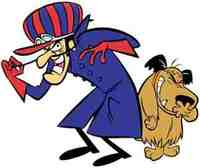
‘Los autos locos‘ es una serie tan mítica y tan bien construida que, incluso a día de hoy, no pasa de moda. Entretiene a niños por su excentricidades y a los adultos nos sigue conquistando con una buena dosis de nostalgia. Propia de los bloques de animación de los sábados por la mañana en las networks estadounidenses y en las españolas, ‘Los autos locos’ destacaban por ser, además de originales, un buen equipo de personajes.
Hasta 23 personajes habituales llegó a tener la serie, siendo Patán y Nodoyuna el buque insignia de todo el cuadro. La trama era sencilla: 11 coches de carreras rodando de rallye en rallye con un objetivo final: resultar ganador al título del piloto más loco del mundo.
Una mítica de las redifusiones en bloques infantiles y canales temáticos del género durante décadas e incluso hoy en día, ‘Los autos locos’ giraba en torno a estos coches de competición, muchos de ellos conducidos por parejas. Bólidos como El Compact Pussycat, El Super Perrari, El Alambique Veloz o El Troncoswagen darían cada uno para una serie propia.
Puntos de encuentro en la animación vintage
Si hay una cosa que me guste de todo este mundo de animación vintage, es que existen un bastantes puntos de encuentro entre series de tramas diferentes pero de épocas similares. En el caso de ‘Los autos locos’, las maldades de Pierre Nodoyuna y sus planes para resultar siempre victorioso estaban centradas en ver como sus competidores perdían. Para ello se las ingeniaba con pinchos, clavos, troncos de madera o cualquier líquido resbaladizo.
Sin embargo, la gran mayoría de episodios contenían la moraleja de que no el juego sucio resulta siempre en la victoria. Pierre Nodoyuna no ganaba nunca, y muchos de los planes que utilizaba para quitarse del medio al contrario eran muy parecidos a los del mítico Correcaminos. El guionista entre ambas ficciones era el mismo: Mike Maltese.
Los Hermanos Macana eran otros dos personajes de la serie. Competían con el Rocomóvil, un pedrusco enorme por ruedas, cuyo motor a veces estaba ocupado por un animal, guardaba mucha relación ficticia con el mundo de ‘Los Picapiedra’, pero ambos eran trogoditas cubiertos casi enteros con pelo, un estilo precursor del original Tío Cosa de ‘La familia Addams’.
La película ‘La carrera del siglo‘ protagonizada por Jack Lemmon y Tony Curtis en 1965 sirvió de inspiración para la creación de la serie. Pese a ser una producción única de 17 episodios y durar dos años en antena en la CBS, los personajes eran tan míticos que dieron para varios spin off y continuaciones: Penélope Glamour en ‘Los peligros de Penélope Glamour’ y ‘El escuadrón diabólico’ o ‘La carrera espacial de Yogi’ en donde Pierre Nodoyuna y Patán volvían de nuevo a la pequeña pantalla.
Ficha Técnica: Los Autos Locos
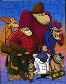
-
Título Original: Wacky Races
-
Género: Infantil
-
Cadena: CBS (1968-1970)
-
Disponibilidad DVD: Ninguna
En ¡Vaya Tele! | Nostalgia TV
Sat, 25 Feb 2012 15:14:00 GMT
'Juego de Tronos', por fin el tráiler completo de la segunda temporada
'Juego de Tronos', por fin el tráiler completo de la segunda temporada
Cuando estamos a poco más de un mes del estreno de la segunda temporada de ‘Juego de Tronos’, correspondiente al libro ‘Choque De Reyes’ (el segundo de la saga ‘Canción de Hielo y Fuego’ de George R. R. Martin), por fin HBO ha publicado un tráiler largo y muy suculento de lo que está por venir. En él identificamos fácilmente escenas del libro casi calcadas, demostrando que seguirán la estela de la primera temporada siendo muy fieles a la historia original, pero también algún detalle de otros libros que han preferido adelantar. Sea como sea, lo que sí nos deja claro este tráiler es el argumento central sobre el que girarán los diez capítulos de la nueva temporada: la guerra por el Trono de Hierro. Una guerra que se librará en varios frentes: los hermanos Baratheon, Stannis y Renly; Joffrey Baratheon, en el trono; Rob Stark, el Rey al norte; y por supuesto, Daenerys Targarien, dispuesta a recuperar el reinado de su familia ayudándose de la “pequeña” sorpresa que recibimos en el último capítulo. Sirve también este tráiler para presentarnos a los nuevos personajes y algunos elementos que no habían aparecido en anteriores promos, como el cometa, que tanto misterio nos deja en los primeros compases del libro, o las criaturas mitológicas (ya nos adelantaron que esta temporada los lobos huargo serán diseñados por ordenador, aunque no serán los únicos). La segunda temporada de ‘Juego de Tronos‘ llega el próximo 1 de abril a HBO, y con suerte acompañada de la noticia de su renovación, algo con lo que se viene especulando desde hace meses. Y quizá por más de un año. Winter is coming. En ¡Vaya Tele! | ‘Juego de Tronos’, nuevo tráiler de la segunda temporada
Cuando estamos a poco más de un mes del estreno de la segunda temporada de ‘Juego de Tronos’, correspondiente al libro ‘Choque De Reyes’ (el segundo de la saga ‘Canción de Hielo y Fuego’ de George R. R. Martin), por fin HBO ha publicado un tráiler largo y muy suculento de lo que está por venir. En él identificamos fácilmente escenas del libro casi calcadas, demostrando que seguirán la estela de la primera temporada siendo muy fieles a la historia original, pero también algún detalle de otros libros que han preferido adelantar.
Sea como sea, lo que sí nos deja claro este tráiler es el argumento central sobre el que girarán los diez capítulos de la nueva temporada: la guerra por el Trono de Hierro. Una guerra que se librará en varios frentes: los hermanos Baratheon, Stannis y Renly; Joffrey Baratheon, en el trono; Rob Stark, el Rey al norte; y por supuesto, Daenerys Targarien, dispuesta a recuperar el reinado de su familia ayudándose de la “pequeña” sorpresa que recibimos en el último capítulo.
Sirve también este tráiler para presentarnos a los nuevos personajes y algunos elementos que no habían aparecido en anteriores promos, como el cometa, que tanto misterio nos deja en los primeros compases del libro, o las criaturas mitológicas (ya nos adelantaron que esta temporada los lobos huargo serán diseñados por ordenador, aunque no serán los únicos). La segunda temporada de ‘Juego de Tronos‘ llega el próximo 1 de abril a HBO, y con suerte acompañada de la noticia de su renovación, algo con lo que se viene especulando desde hace meses. Y quizá por más de un año. Winter is coming.
En ¡Vaya Tele! | ‘Juego de Tronos’, nuevo tráiler de la segunda temporada